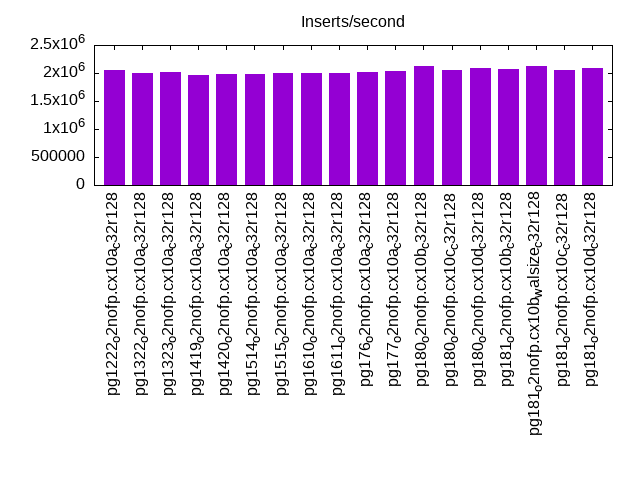
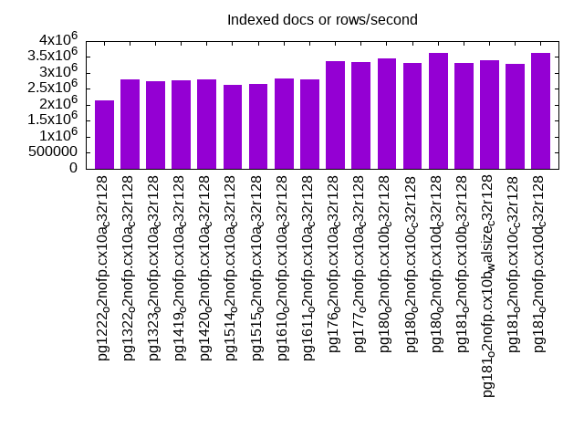
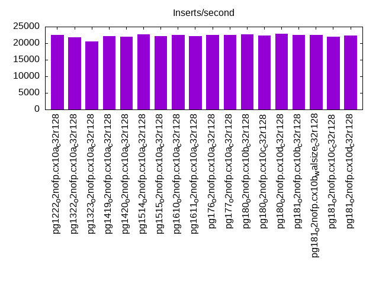
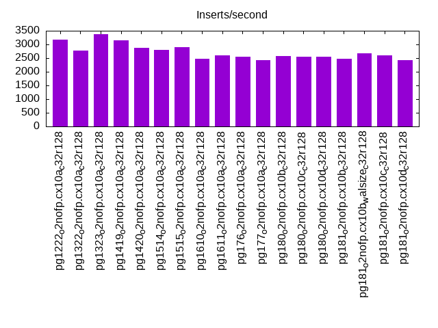
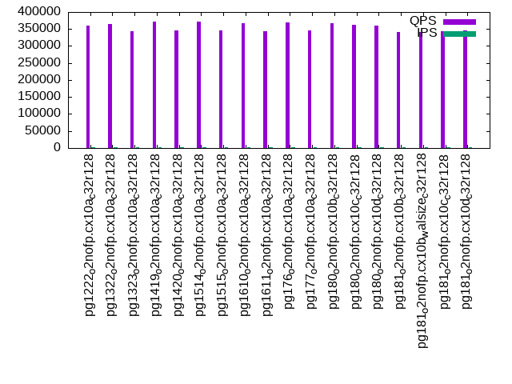
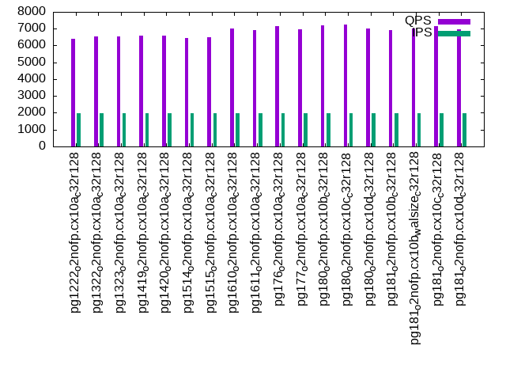
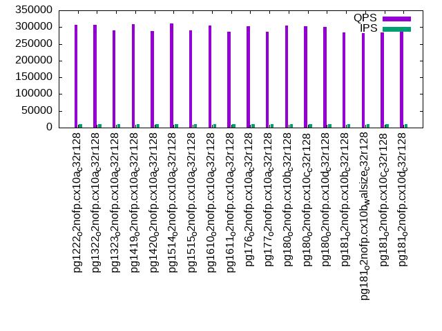
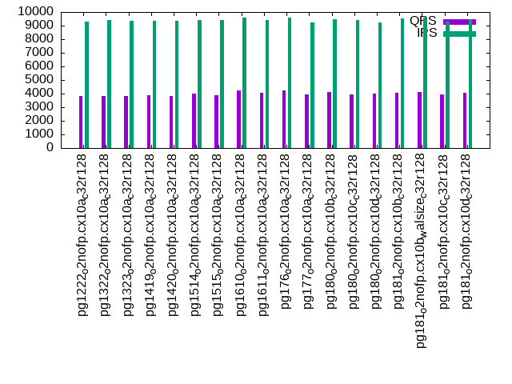
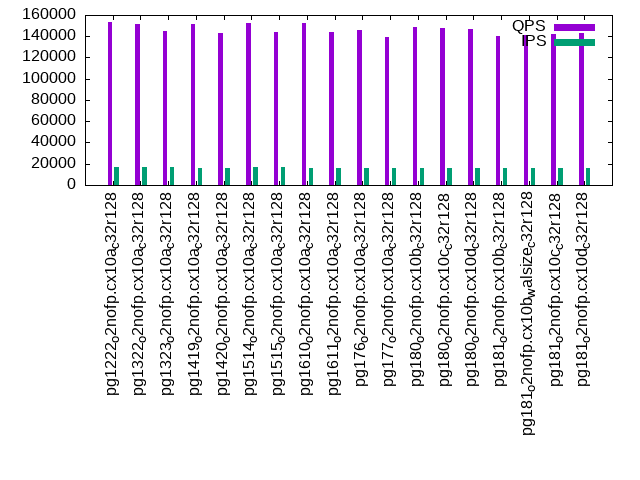
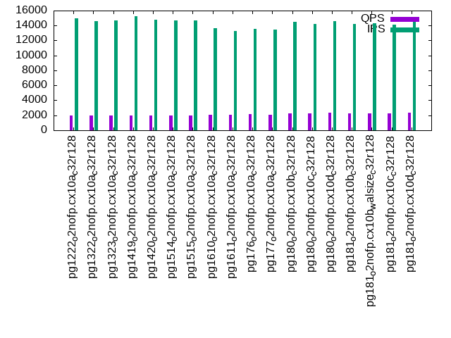

This is a report for the insert benchmark with 4000M docs and 20 client(s). It is generated by scripts (bash, awk, sed) and Tufte might not be impressed. An overview of the insert benchmark is here and a short update is here. Below, by DBMS, I mean DBMS+version.config. An example is my8020.c10b40 where my means MySQL, 8020 is version 8.0.20 and c10b40 is the name for the configuration file.
The test server has 48 cores, 128G RAM and 2 NVMe devices setup with SW RAID. The benchmark was run with 20 clients and there were 1 or 3 connections per client (1 for queries or inserts without rate limits, 1+1 for rate limited inserts+deletes). It uses 12 tables with a table per client. It loads 10M rows per table without secondary indexes, creates 3 secondary indexes per table, then inserts 40m+10m rows per table with a delete per insert to avoid growing the table. It then does 6 read+write tests for 3600s each that do queries as fast as possible with 100,100,500,500,1000,1000 inserts/s and the same for deletes/s per client concurrent with the queries. The database is larger than RAM and most tests are IO-bound except for the range query (qr*) tests that frequently have a cached working set. Clients and the DBMS share one server.
The tested DBMS are:
The numbers are inserts/s for l.i0, l.i1 and l.i2, indexed docs (or rows) /s for l.x and queries/s for qr100, qp100 thru qr1000, qp1000" The values are the average rate over the entire test for inserts (IPS) and queries (QPS). The range of values for IPS and QPS is split into 3 parts: bottom 25%, middle 50%, top 25%. Values in the bottom 25% have a red background, values in the top 25% have a green background and values in the middle have no color. A gray background is used for values that can be ignored because the DBMS did not sustain the target insert rate. Red backgrounds are not used when the minimum value is within 80% of the max value.
| dbms | l.i0 | l.x | l.i1 | l.i2 | qr100 | qp100 | qr500 | qp500 | qr1000 | qp1000 |
|---|---|---|---|---|---|---|---|---|---|---|
| pg1222_o2nofp.cx10a_c32r128 | 2058672 | 2147075 | 22529 | 3184 | 361060 | 6398 | 306152 | 3826 | 153763 | 1989 |
| pg1322_o2nofp.cx10a_c32r128 | 1992032 | 2791347 | 21816 | 2778 | 365514 | 6536 | 306254 | 3837 | 151075 | 1957 |
| pg1323_o2nofp.cx10a_c32r128 | 2025316 | 2735978 | 20450 | 3372 | 343541 | 6540 | 289408 | 3816 | 144708 | 1959 |
| pg1419_o2nofp.cx10a_c32r128 | 1969473 | 2758621 | 22210 | 3141 | 370726 | 6602 | 309620 | 3863 | 151319 | 1992 |
| pg1420_o2nofp.cx10a_c32r128 | 1986097 | 2793296 | 22051 | 2869 | 346912 | 6591 | 289071 | 3847 | 142684 | 1964 |
| pg1514_o2nofp.cx10a_c32r128 | 1983143 | 2633311 | 22618 | 2799 | 371771 | 6424 | 310019 | 3983 | 152278 | 1956 |
| pg1515_o2nofp.cx10a_c32r128 | 1993024 | 2647254 | 22087 | 2896 | 345942 | 6490 | 290091 | 3887 | 144307 | 1945 |
| pg1610_o2nofp.cx10a_c32r128 | 1995012 | 2814919 | 22428 | 2483 | 366855 | 7014 | 305124 | 4222 | 152780 | 2084 |
| pg1611_o2nofp.cx10a_c32r128 | 2002002 | 2791347 | 22057 | 2597 | 343245 | 6901 | 285527 | 4039 | 143551 | 2052 |
| pg176_o2nofp.cx10a_c32r128 | 2019182 | 3361345 | 22554 | 2541 | 368771 | 7137 | 302080 | 4206 | 145592 | 2130 |
| pg177_o2nofp.cx10a_c32r128 | 2027369 | 3341688 | 22415 | 2437 | 344865 | 6972 | 286298 | 3963 | 139108 | 2090 |
| pg180_o2nofp.cx10b_c32r128 | 2117522 | 3454232 | 22637 | 2572 | 366335 | 7212 | 304725 | 4132 | 149143 | 2301 |
| pg180_o2nofp.cx10c_c32r128 | 2055498 | 3327787 | 22334 | 2562 | 363521 | 7250 | 301652 | 3954 | 148174 | 2302 |
| pg180_o2nofp.cx10d_c32r128 | 2082249 | 3633061 | 22896 | 2560 | 360003 | 7034 | 299926 | 4018 | 146620 | 2353 |
| pg181_o2nofp.cx10b_c32r128 | 2073613 | 3319502 | 22516 | 2486 | 341583 | 6905 | 283872 | 4087 | 140474 | 2294 |
| pg181_o2nofp.cx10b_walsize_c32r128 | 2124270 | 3395586 | 22586 | 2683 | 340723 | 6992 | 282274 | 4147 | 140754 | 2297 |
| pg181_o2nofp.cx10c_c32r128 | 2057613 | 3289474 | 22008 | 2594 | 342782 | 7169 | 284684 | 3953 | 141938 | 2280 |
| pg181_o2nofp.cx10d_c32r128 | 2083333 | 3623188 | 22278 | 2431 | 346331 | 6943 | 287695 | 4053 | 143403 | 2325 |
This table has relative throughput, throughput for the DBMS relative to the DBMS in the first line, using the absolute throughput from the previous table. Values less than 0.95 have a yellow background. Values greater than 1.05 have a blue background.
| dbms | l.i0 | l.x | l.i1 | l.i2 | qr100 | qp100 | qr500 | qp500 | qr1000 | qp1000 |
|---|---|---|---|---|---|---|---|---|---|---|
| pg1222_o2nofp.cx10a_c32r128 | 1.00 | 1.00 | 1.00 | 1.00 | 1.00 | 1.00 | 1.00 | 1.00 | 1.00 | 1.00 |
| pg1322_o2nofp.cx10a_c32r128 | 0.97 | 1.30 | 0.97 | 0.87 | 1.01 | 1.02 | 1.00 | 1.00 | 0.98 | 0.98 |
| pg1323_o2nofp.cx10a_c32r128 | 0.98 | 1.27 | 0.91 | 1.06 | 0.95 | 1.02 | 0.95 | 1.00 | 0.94 | 0.98 |
| pg1419_o2nofp.cx10a_c32r128 | 0.96 | 1.28 | 0.99 | 0.99 | 1.03 | 1.03 | 1.01 | 1.01 | 0.98 | 1.00 |
| pg1420_o2nofp.cx10a_c32r128 | 0.96 | 1.30 | 0.98 | 0.90 | 0.96 | 1.03 | 0.94 | 1.01 | 0.93 | 0.99 |
| pg1514_o2nofp.cx10a_c32r128 | 0.96 | 1.23 | 1.00 | 0.88 | 1.03 | 1.00 | 1.01 | 1.04 | 0.99 | 0.98 |
| pg1515_o2nofp.cx10a_c32r128 | 0.97 | 1.23 | 0.98 | 0.91 | 0.96 | 1.01 | 0.95 | 1.02 | 0.94 | 0.98 |
| pg1610_o2nofp.cx10a_c32r128 | 0.97 | 1.31 | 1.00 | 0.78 | 1.02 | 1.10 | 1.00 | 1.10 | 0.99 | 1.05 |
| pg1611_o2nofp.cx10a_c32r128 | 0.97 | 1.30 | 0.98 | 0.82 | 0.95 | 1.08 | 0.93 | 1.06 | 0.93 | 1.03 |
| pg176_o2nofp.cx10a_c32r128 | 0.98 | 1.57 | 1.00 | 0.80 | 1.02 | 1.12 | 0.99 | 1.10 | 0.95 | 1.07 |
| pg177_o2nofp.cx10a_c32r128 | 0.98 | 1.56 | 0.99 | 0.77 | 0.96 | 1.09 | 0.94 | 1.04 | 0.90 | 1.05 |
| pg180_o2nofp.cx10b_c32r128 | 1.03 | 1.61 | 1.00 | 0.81 | 1.01 | 1.13 | 1.00 | 1.08 | 0.97 | 1.16 |
| pg180_o2nofp.cx10c_c32r128 | 1.00 | 1.55 | 0.99 | 0.80 | 1.01 | 1.13 | 0.99 | 1.03 | 0.96 | 1.16 |
| pg180_o2nofp.cx10d_c32r128 | 1.01 | 1.69 | 1.02 | 0.80 | 1.00 | 1.10 | 0.98 | 1.05 | 0.95 | 1.18 |
| pg181_o2nofp.cx10b_c32r128 | 1.01 | 1.55 | 1.00 | 0.78 | 0.95 | 1.08 | 0.93 | 1.07 | 0.91 | 1.15 |
| pg181_o2nofp.cx10b_walsize_c32r128 | 1.03 | 1.58 | 1.00 | 0.84 | 0.94 | 1.09 | 0.92 | 1.08 | 0.92 | 1.15 |
| pg181_o2nofp.cx10c_c32r128 | 1.00 | 1.53 | 0.98 | 0.81 | 0.95 | 1.12 | 0.93 | 1.03 | 0.92 | 1.15 |
| pg181_o2nofp.cx10d_c32r128 | 1.01 | 1.69 | 0.99 | 0.76 | 0.96 | 1.09 | 0.94 | 1.06 | 0.93 | 1.17 |
This lists the average rate of inserts/s for the tests that do inserts concurrent with queries. For such tests the query rate is listed in the table above. The read+write tests are setup so that the insert rate should match the target rate every second. Cells that are not at least 95% of the target have a red background to indicate a failure to satisfy the target.
| dbms | qr100.L1 | qp100.L2 | qr500.L3 | qp500.L4 | qr1000.L5 | qp1000.L6 |
|---|---|---|---|---|---|---|
| pg1222_o2nofp.cx10a_c32r128 | 1988 | 1987 | 9885 | 9317 | 16725 | 15003 |
| pg1322_o2nofp.cx10a_c32r128 | 1987 | 1986 | 9882 | 9431 | 16713 | 14548 |
| pg1323_o2nofp.cx10a_c32r128 | 1987 | 1987 | 9860 | 9343 | 16536 | 14688 |
| pg1419_o2nofp.cx10a_c32r128 | 1987 | 1987 | 9868 | 9360 | 16461 | 15203 |
| pg1420_o2nofp.cx10a_c32r128 | 1987 | 1987 | 9885 | 9353 | 16371 | 14736 |
| pg1514_o2nofp.cx10a_c32r128 | 1987 | 1986 | 9882 | 9402 | 17062 | 14724 |
| pg1515_o2nofp.cx10a_c32r128 | 1987 | 1987 | 9874 | 9409 | 17013 | 14703 |
| pg1610_o2nofp.cx10a_c32r128 | 1987 | 1987 | 9920 | 9574 | 16011 | 13616 |
| pg1611_o2nofp.cx10a_c32r128 | 1987 | 1987 | 9896 | 9426 | 15940 | 13284 |
| pg176_o2nofp.cx10a_c32r128 | 1987 | 1987 | 9898 | 9577 | 15943 | 13539 |
| pg177_o2nofp.cx10a_c32r128 | 1987 | 1987 | 9912 | 9259 | 15731 | 13425 |
| pg180_o2nofp.cx10b_c32r128 | 1987 | 1987 | 9912 | 9464 | 15772 | 14466 |
| pg180_o2nofp.cx10c_c32r128 | 1987 | 1987 | 9912 | 9439 | 15748 | 14255 |
| pg180_o2nofp.cx10d_c32r128 | 1987 | 1987 | 9909 | 9252 | 16039 | 14548 |
| pg181_o2nofp.cx10b_c32r128 | 1987 | 1987 | 9904 | 9501 | 15873 | 14165 |
| pg181_o2nofp.cx10b_walsize_c32r128 | 1987 | 1987 | 9890 | 9574 | 15880 | 14323 |
| pg181_o2nofp.cx10c_c32r128 | 1987 | 1987 | 9901 | 9319 | 15584 | 14098 |
| pg181_o2nofp.cx10d_c32r128 | 1987 | 1987 | 9901 | 9451 | 15738 | 14452 |
| target | 2000 | 2000 | 10000 | 10000 | 20000 | 20000 |
l.i0: load without secondary indexes. Graphs for performance per 1-second interval are here.
Average throughput:
Insert response time histogram: each cell has the percentage of responses that take <= the time in the header and max is the max response time in seconds. For the max column values in the top 25% of the range have a red background and in the bottom 25% of the range have a green background. The red background is not used when the min value is within 80% of the max value.
| dbms | 256us | 1ms | 4ms | 16ms | 64ms | 256ms | 1s | 4s | 16s | gt | max |
|---|---|---|---|---|---|---|---|---|---|---|---|
| pg1222_o2nofp.cx10a_c32r128 | 92.765 | 7.009 | 0.120 | 0.087 | 0.013 | 0.006 | nonzero | 1.959 | |||
| pg1322_o2nofp.cx10a_c32r128 | 89.839 | 9.689 | 0.365 | 0.091 | 0.010 | 0.006 | nonzero | 1.421 | |||
| pg1323_o2nofp.cx10a_c32r128 | 91.437 | 8.272 | 0.180 | 0.094 | 0.010 | 0.006 | nonzero | 1.652 | |||
| pg1419_o2nofp.cx10a_c32r128 | 88.798 | 10.881 | 0.220 | 0.083 | 0.012 | 0.006 | nonzero | 1.616 | |||
| pg1420_o2nofp.cx10a_c32r128 | 89.116 | 10.611 | 0.189 | 0.064 | 0.014 | 0.007 | nonzero | 1.363 | |||
| pg1514_o2nofp.cx10a_c32r128 | 88.843 | 10.908 | 0.149 | 0.076 | 0.016 | 0.007 | nonzero | 1.386 | |||
| pg1515_o2nofp.cx10a_c32r128 | 89.254 | 10.490 | 0.167 | 0.066 | 0.016 | 0.006 | nonzero | 2.379 | |||
| pg1610_o2nofp.cx10a_c32r128 | 89.280 | 10.433 | 0.189 | 0.077 | 0.014 | 0.007 | nonzero | 1.353 | |||
| pg1611_o2nofp.cx10a_c32r128 | 89.419 | 10.364 | 0.133 | 0.062 | 0.016 | 0.006 | nonzero | 2.629 | |||
| pg176_o2nofp.cx10a_c32r128 | 89.743 | 9.916 | 0.243 | 0.077 | 0.014 | 0.006 | nonzero | 1.769 | |||
| pg177_o2nofp.cx10a_c32r128 | 90.038 | 9.704 | 0.171 | 0.063 | 0.017 | 0.006 | 0.727 | ||||
| pg180_o2nofp.cx10b_c32r128 | 92.755 | 6.924 | 0.241 | 0.070 | 0.007 | 0.003 | nonzero | 1.424 | |||
| pg180_o2nofp.cx10c_c32r128 | 92.466 | 7.179 | 0.260 | 0.070 | 0.018 | 0.007 | nonzero | 1.358 | |||
| pg180_o2nofp.cx10d_c32r128 | 93.242 | 6.459 | 0.211 | 0.066 | 0.015 | 0.007 | nonzero | 2.442 | |||
| pg181_o2nofp.cx10b_c32r128 | 92.951 | 6.739 | 0.213 | 0.072 | 0.020 | 0.006 | nonzero | 1.418 | |||
| pg181_o2nofp.cx10b_walsize_c32r128 | 93.127 | 6.571 | 0.224 | 0.065 | 0.009 | 0.004 | nonzero | 1.389 | |||
| pg181_o2nofp.cx10c_c32r128 | 92.487 | 7.142 | 0.280 | 0.067 | 0.017 | 0.006 | nonzero | 1.942 | |||
| pg181_o2nofp.cx10d_c32r128 | 93.260 | 6.456 | 0.195 | 0.065 | 0.019 | 0.005 | nonzero | 2.097 |
Performance metrics for the DBMS listed above. Some are normalized by throughput, others are not. Legend for results is here.
ips qps rps rmbps wps wmbps rpq rkbpq wpi wkbpi csps cpups cspq cpupq dbgb1 dbgb2 rss maxop p50 p99 tag 2058672 0 1862 15.0 11362.7 825.7 0.001 0.007 0.006 0.411 341356 59.1 0.166 14 382.7 478.8 5.3 1.959 110739 41654 pg1222_o2nofp.cx10a_c32r128 1992032 0 1672 13.6 9055.9 807.2 0.001 0.007 0.005 0.415 352141 57.1 0.177 14 382.7 478.8 11.3 1.421 110858 32275 pg1322_o2nofp.cx10a_c32r128 2025316 0 1758 14.2 9083.3 814.2 0.001 0.007 0.004 0.412 349922 58.4 0.173 14 382.7 478.8 9.2 1.652 111080 34561 pg1323_o2nofp.cx10a_c32r128 1969473 0 1720 13.5 8367.4 791.8 0.001 0.007 0.004 0.412 356211 57.3 0.181 14 382.7 478.8 7.1 1.616 108184 32170 pg1419_o2nofp.cx10a_c32r128 1986097 0 1685 13.2 8347.8 793.0 0.001 0.007 0.004 0.409 342492 57.6 0.172 14 382.7 478.8 16.2 1.363 109111 32578 pg1420_o2nofp.cx10a_c32r128 1983143 0 1733 13.6 8320.2 794.3 0.001 0.007 0.004 0.410 371258 57.2 0.187 14 382.7 478.8 16.1 1.386 109182 28370 pg1514_o2nofp.cx10a_c32r128 1993024 0 1651 12.9 8351.0 794.8 0.001 0.007 0.004 0.408 373442 57.1 0.187 14 382.7 478.8 6.9 2.379 109080 28569 pg1515_o2nofp.cx10a_c32r128 1995012 0 1758 13.8 8360.7 800.0 0.001 0.007 0.004 0.411 370635 57.2 0.186 14 382.7 478.8 20.6 1.353 108683 33664 pg1610_o2nofp.cx10a_c32r128 2002002 0 1720 13.5 8413.8 801.9 0.001 0.007 0.004 0.410 367875 57.6 0.184 14 382.7 478.8 16.4 2.629 108782 27770 pg1611_o2nofp.cx10a_c32r128 2019182 0 1692 13.6 8456.9 807.1 0.001 0.007 0.004 0.409 379263 57.1 0.188 14 382.7 478.8 93.2 1.769 110226 25872 pg176_o2nofp.cx10a_c32r128 2027369 0 1723 13.8 8487.2 809.4 0.001 0.007 0.004 0.409 381907 57.5 0.188 14 382.7 478.8 96.9 0.727 109497 35764 pg177_o2nofp.cx10a_c32r128 2117522 0 1751 14.1 8835.5 844.3 0.001 0.007 0.004 0.408 355213 59.1 0.168 13 382.7 478.8 95.5 1.424 114177 49846 pg180_o2nofp.cx10b_c32r128 2055498 0 1766 14.2 8684.8 828.4 0.001 0.007 0.004 0.413 358082 57.5 0.174 13 382.7 478.8 96.8 1.358 113378 32877 pg180_o2nofp.cx10c_c32r128 2082249 0 1789 14.3 8776.0 839.2 0.001 0.007 0.004 0.413 358120 57.8 0.172 13 382.7 478.8 96.6 2.442 113455 31965 pg180_o2nofp.cx10d_c32r128 2073613 0 1742 13.9 8657.6 825.3 0.001 0.007 0.004 0.408 355147 57.7 0.171 13 382.7 478.8 96.6 1.418 113475 34861 pg181_o2nofp.cx10b_c32r128 2124270 0 1791 14.4 8899.2 848.7 0.001 0.007 0.004 0.409 360199 59.2 0.170 13 382.7 478.8 96.7 1.389 114252 52044 pg181_o2nofp.cx10b_walsize_c32r128 2057613 0 1729 13.8 8684.7 825.9 0.001 0.007 0.004 0.411 356204 57.5 0.173 13 382.7 478.8 95.3 1.942 113377 28868 pg181_o2nofp.cx10c_c32r128 2083333 0 1768 14.2 8743.4 832.8 0.001 0.007 0.004 0.409 357920 58.1 0.172 13 382.7 478.8 96.8 2.097 113777 26671 pg181_o2nofp.cx10d_c32r128
Average values from iostat.
r/s rkB/s rrqm/s %rrqm r_await rareq-s w/s wkB/s wrqm/s %wrqm w_await wareq-s d/s dkB/s drqm/s %drqm d_await dareq-s f/s f_await aqu-sz %util 115.6 1099.9 82.24 3.683 0.165 7.078 10177.3 847333 1632.6 11.45 1.856 87.07 0.000 0.000 0.000 0.000 0.000 0.000 0.000 0.000 19.93 93.38 pg1222_o2nofp.cx10a_c32r128 485.3 4559.2 400.7 12.52 0.181 9.271 7963.5 833440 2802.0 19.11 1.796 105.5 0.000 0.000 0.000 0.000 0.000 0.000 0.000 0.000 15.89 93.33 pg1322_o2nofp.cx10a_c32r128 211.9 1750.0 68.21 11.87 0.175 6.902 7903.1 836203 1807.7 15.07 1.702 106.6 0.000 0.000 0.000 0.000 0.000 0.000 0.000 0.000 14.74 92.66 pg1323_o2nofp.cx10a_c32r128 861.9 7092.2 131.8 12.95 0.153 9.139 7749.0 814437 1539.7 14.32 1.922 106.5 0.000 0.000 0.000 0.000 0.000 0.000 0.000 0.000 16.66 93.50 pg1419_o2nofp.cx10a_c32r128 873.5 7267.9 167.3 11.89 0.171 6.833 7708.8 815377 1483.6 13.05 1.962 107.1 0.000 0.000 0.000 0.000 0.000 0.000 0.000 0.000 16.80 93.81 pg1420_o2nofp.cx10a_c32r128 810.9 6522.0 41.89 6.055 0.156 7.383 7643.0 814816 1051.9 10.13 2.096 107.7 0.000 0.000 0.000 0.000 0.000 0.000 0.000 0.000 17.36 93.46 pg1514_o2nofp.cx10a_c32r128 797.5 6373.6 37.95 7.970 0.147 5.597 7701.2 815499 1065.5 10.25 1.786 107.0 0.000 0.000 0.000 0.000 0.000 0.000 0.000 0.000 15.18 93.63 pg1515_o2nofp.cx10a_c32r128 922.6 7515.4 164.6 9.048 0.152 7.404 7745.6 823239 1627.4 14.42 1.987 107.2 0.000 0.000 0.000 0.000 0.000 0.000 0.000 0.000 16.93 93.73 pg1610_o2nofp.cx10a_c32r128 850.3 6796.2 62.01 6.617 0.130 7.044 7749.3 823189 1168.1 11.20 2.108 107.3 0.000 0.000 0.000 0.000 0.000 0.000 0.000 0.000 18.15 94.09 pg1611_o2nofp.cx10a_c32r128 1037.0 8520.4 298.6 10.67 0.141 7.212 7985.7 833698 2275.7 17.19 1.965 105.5 0.000 0.000 0.000 0.000 0.000 0.000 0.000 0.000 17.30 93.69 pg176_o2nofp.cx10a_c32r128 849.5 7022.8 77.74 11.98 0.163 6.721 7811.4 830916 1190.5 11.12 2.171 107.6 0.000 0.000 0.000 0.000 0.000 0.000 0.000 0.000 18.70 93.79 pg177_o2nofp.cx10a_c32r128 975.8 8147.9 216.9 15.36 0.121 6.529 8218.5 869944 1952.3 16.26 1.397 106.8 0.000 0.000 0.000 0.000 0.000 0.000 0.000 0.000 13.18 93.07 pg180_o2nofp.cx10b_c32r128 769.2 6351.3 119.2 8.194 0.162 8.521 8007.2 851602 1515.6 13.49 1.398 107.4 0.000 0.000 0.000 0.000 0.000 0.000 0.000 0.000 12.27 93.27 pg180_o2nofp.cx10c_c32r128 900.0 7399.7 43.68 5.840 0.203 5.893 8027.9 860608 1072.3 9.986 2.018 108.0 0.000 0.000 0.000 0.000 0.000 0.000 0.000 0.000 18.40 93.38 pg180_o2nofp.cx10d_c32r128 844.6 6976.2 78.61 8.431 0.150 6.672 7964.9 847424 1274.8 11.85 2.395 107.5 0.000 0.000 0.000 0.000 0.000 0.000 0.000 0.000 20.92 93.36 pg181_o2nofp.cx10b_c32r128 889.0 7487.8 137.5 9.195 0.140 8.750 8176.0 871935 1452.1 13.00 1.904 107.7 0.000 0.000 0.000 0.000 0.000 0.000 0.000 0.000 17.39 93.67 pg181_o2nofp.cx10b_walsize_c32r128 829.4 6949.7 230.7 11.26 0.147 7.292 8036.0 850488 1836.4 14.66 1.871 106.8 0.000 0.000 0.000 0.000 0.000 0.000 0.000 0.000 16.77 93.56 pg181_o2nofp.cx10c_c32r128 825.5 6805.0 42.51 7.664 0.148 7.031 8003.6 854110 1084.2 10.17 2.439 107.7 0.000 0.000 0.000 0.000 0.000 0.000 0.000 0.000 21.45 93.51 pg181_o2nofp.cx10d_c32r128
l.x: create secondary indexes.
Average throughput:
Performance metrics for the DBMS listed above. Some are normalized by throughput, others are not. Legend for results is here.
ips qps rps rmbps wps wmbps rpq rkbpq wpi wkbpi csps cpups cspq cpupq dbgb1 dbgb2 rss maxop p50 p99 tag 2147075 0 10892 684.1 10874.2 860.0 0.005 0.326 0.005 0.410 180712 18.5 0.084 4 768.8 864.8 50.2 0.076 NA NA pg1222_o2nofp.cx10a_c32r128 2791347 0 14149 889.4 7198.9 796.2 0.005 0.326 0.003 0.292 154017 21.7 0.055 4 768.4 864.5 42.3 0.024 NA NA pg1322_o2nofp.cx10a_c32r128 2735978 0 13859 871.3 7189.3 786.1 0.005 0.326 0.003 0.294 151779 21.5 0.055 4 768.4 864.5 42.4 0.012 NA NA pg1323_o2nofp.cx10a_c32r128 2758621 0 13960 877.5 7139.3 790.5 0.005 0.326 0.003 0.293 152378 21.5 0.055 4 768.4 864.5 41.9 0.020 NA NA pg1419_o2nofp.cx10a_c32r128 2793296 0 14150 889.6 7250.1 802.9 0.005 0.326 0.003 0.294 153521 21.4 0.055 4 768.4 863.6 43.6 0.011 NA NA pg1420_o2nofp.cx10a_c32r128 2633311 0 14601 927.1 7682.3 845.0 0.006 0.361 0.003 0.329 148653 20.3 0.056 4 768.4 864.5 50.4 0.009 NA NA pg1514_o2nofp.cx10a_c32r128 2647254 0 14701 933.5 7686.3 844.8 0.006 0.361 0.003 0.327 147306 20.2 0.056 4 768.4 864.5 52.3 0.009 NA NA pg1515_o2nofp.cx10a_c32r128 2814919 0 14174 895.9 7325.5 807.2 0.005 0.326 0.003 0.294 156305 21.1 0.056 4 768.4 864.5 33.2 0.003 NA NA pg1610_o2nofp.cx10a_c32r128 2791347 0 14091 889.6 7391.2 803.2 0.005 0.326 0.003 0.295 154340 20.9 0.055 4 768.4 864.5 30.7 0.008 NA NA pg1611_o2nofp.cx10a_c32r128 3361345 0 10973 1068.3 8747.4 968.5 0.003 0.325 0.003 0.295 90681 23.4 0.027 3 768.4 863.7 32.7 0.003 NA NA pg176_o2nofp.cx10a_c32r128 3341688 0 10927 1063.8 8618.3 956.0 0.003 0.326 0.003 0.293 87188 23.3 0.026 3 768.4 863.9 31.5 0.133 NA NA pg177_o2nofp.cx10a_c32r128 3454232 0 11305 1100.4 8923.4 990.4 0.003 0.326 0.003 0.294 89741 24.2 0.026 3 768.4 863.7 31.8 0.149 NA NA pg180_o2nofp.cx10b_c32r128 3327787 0 11185 1059.3 8552.0 948.2 0.003 0.326 0.003 0.292 91678 23.4 0.028 3 768.4 863.7 56.0 0.030 NA NA pg180_o2nofp.cx10c_c32r128 3633061 0 12138 1155.6 9057.9 1030.7 0.003 0.326 0.002 0.291 115928 25.8 0.032 3 768.4 863.7 30.5 0.053 NA NA pg180_o2nofp.cx10d_c32r128 3319502 0 10833 1055.0 8557.4 948.8 0.003 0.325 0.003 0.293 87846 23.1 0.026 3 768.4 863.7 21.6 0.003 NA NA pg181_o2nofp.cx10b_c32r128 3395586 0 11108 1081.9 8712.0 969.2 0.003 0.326 0.003 0.292 88899 23.6 0.026 3 768.4 864.5 37.8 0.243 NA NA pg181_o2nofp.cx10b_walsize_c32r128 3289474 0 11062 1046.3 8535.4 942.3 0.003 0.326 0.003 0.293 90724 23.2 0.028 3 768.4 863.7 54.7 0.077 NA NA pg181_o2nofp.cx10c_c32r128 3623188 0 12115 1150.5 9314.7 1040.9 0.003 0.325 0.003 0.294 115387 25.7 0.032 3 768.4 863.7 32.9 0.003 NA NA pg181_o2nofp.cx10d_c32r128
Average values from iostat.
r/s rkB/s rrqm/s %rrqm r_await rareq-s w/s wkB/s wrqm/s %wrqm w_await wareq-s d/s dkB/s drqm/s %drqm d_await dareq-s f/s f_await aqu-sz %util 5368.8 327116 344.1 2.535 0.325 62.67 10372.3 889128 2650.3 14.99 4.077 102.4 0.000 0.000 0.000 0.000 0.000 0.000 0.000 0.000 32.08 94.54 pg1222_o2nofp.cx10a_c32r128 6711.7 426651 50.81 0.373 0.359 64.72 6615.0 817041 1020.4 11.47 6.329 124.1 0.000 0.000 0.000 0.000 0.000 0.000 0.000 0.000 43.41 92.30 pg1322_o2nofp.cx10a_c32r128 6650.9 417855 178.2 1.209 0.354 64.11 6674.8 809798 1740.2 14.49 6.074 122.3 0.000 0.000 0.000 0.000 0.000 0.000 0.000 0.000 41.94 94.00 pg1323_o2nofp.cx10a_c32r128 6821.3 424419 241.1 1.677 0.350 63.81 6683.4 813804 1549.5 13.08 5.762 122.2 0.000 0.000 0.000 0.000 0.000 0.000 0.000 0.000 40.16 92.89 pg1419_o2nofp.cx10a_c32r128 6730.5 429305 82.96 0.576 0.355 64.67 6664.2 824720 1233.5 13.43 6.249 123.8 0.000 0.000 0.000 0.000 0.000 0.000 0.000 0.000 43.56 93.61 pg1420_o2nofp.cx10a_c32r128 7170.8 448821 191.2 1.045 0.374 65.72 7271.5 872069 2096.2 13.28 6.519 122.3 0.000 0.000 0.000 0.000 0.000 0.000 0.000 0.000 51.60 89.30 pg1514_o2nofp.cx10a_c32r128 7372.6 466859 260.7 1.152 0.377 65.90 7234.8 871172 1967.5 13.70 6.566 121.8 0.000 0.000 0.000 0.000 0.000 0.000 0.000 0.000 51.66 89.30 pg1515_o2nofp.cx10a_c32r128 6721.2 427089 127.1 0.928 0.358 65.22 6939.3 829800 1183.9 10.45 6.106 122.1 0.000 0.000 0.000 0.000 0.000 0.000 0.000 0.000 44.02 89.44 pg1610_o2nofp.cx10a_c32r128 6950.4 432685 239.9 1.145 0.356 64.61 7246.6 829694 1938.5 13.52 6.037 119.7 0.000 0.000 0.000 0.000 0.000 0.000 0.000 0.000 44.72 90.72 pg1611_o2nofp.cx10a_c32r128 5314.7 519151 450.5 2.137 0.442 90.04 8390.1 996052 1424.1 9.847 6.096 120.7 0.000 0.000 0.000 0.000 0.000 0.000 0.000 0.000 51.73 94.76 pg176_o2nofp.cx10a_c32r128 5351.0 519017 534.5 1.883 0.447 90.11 8342.3 986718 2235.5 13.37 6.523 120.9 0.000 0.000 0.000 0.000 0.000 0.000 0.000 0.000 54.58 94.45 pg177_o2nofp.cx10a_c32r128 5736.2 539458 640.4 3.464 0.427 89.16 9060.4 1026965 3070.1 14.76 4.947 118.7 0.000 0.000 0.000 0.000 0.000 0.000 0.000 0.000 44.04 93.11 pg180_o2nofp.cx10b_c32r128 5474.1 519559 392.2 1.788 0.443 88.11 8365.8 979093 2214.8 12.17 6.134 120.1 0.000 0.000 0.000 0.000 0.000 0.000 0.000 0.000 51.17 91.69 pg180_o2nofp.cx10c_c32r128 5855.1 552756 326.3 1.242 0.428 85.05 8743.5 1062558 2100.1 10.94 6.126 122.3 0.000 0.000 0.000 0.000 0.000 0.000 0.000 0.000 56.92 95.42 pg180_o2nofp.cx10d_c32r128 5349.4 516377 525.7 2.601 0.441 89.35 8682.5 981762 2424.2 13.03 6.206 119.2 0.000 0.000 0.000 0.000 0.000 0.000 0.000 0.000 52.44 93.69 pg181_o2nofp.cx10b_c32r128 5398.3 521237 498.3 2.059 0.423 89.75 8617.6 1002432 2586.6 12.59 5.559 120.2 0.000 0.000 0.000 0.000 0.000 0.000 0.000 0.000 47.15 92.28 pg181_o2nofp.cx10b_walsize_c32r128 5428.0 520230 304.5 1.541 0.448 88.19 8209.9 972038 2102.6 12.09 6.467 121.3 0.000 0.000 0.000 0.000 0.000 0.000 0.000 0.000 52.45 92.56 pg181_o2nofp.cx10c_c32r128 6079.5 573231 344.5 1.351 0.446 85.72 8954.8 1073777 2318.9 13.70 6.444 121.6 0.000 0.000 0.000 0.000 0.000 0.000 0.000 0.000 60.85 95.99 pg181_o2nofp.cx10d_c32r128
l.i1: continue load after secondary indexes created with 50 inserts per transaction. Graphs for performance per 1-second interval are here.
Average throughput:
Insert response time histogram: each cell has the percentage of responses that take <= the time in the header and max is the max response time in seconds. For the max column values in the top 25% of the range have a red background and in the bottom 25% of the range have a green background. The red background is not used when the min value is within 80% of the max value.
| dbms | 256us | 1ms | 4ms | 16ms | 64ms | 256ms | 1s | 4s | 16s | gt | max |
|---|---|---|---|---|---|---|---|---|---|---|---|
| pg1222_o2nofp.cx10a_c32r128 | 22.876 | 57.736 | 19.178 | 0.085 | 0.124 | 0.001 | 5.877 | ||||
| pg1322_o2nofp.cx10a_c32r128 | 21.680 | 58.004 | 20.108 | 0.099 | 0.108 | nonzero | 5.144 | ||||
| pg1323_o2nofp.cx10a_c32r128 | 19.451 | 55.797 | 24.538 | 0.118 | 0.095 | nonzero | 5.523 | ||||
| pg1419_o2nofp.cx10a_c32r128 | 19.318 | 61.664 | 18.770 | 0.112 | 0.136 | nonzero | 5.394 | ||||
| pg1420_o2nofp.cx10a_c32r128 | 19.997 | 59.692 | 20.104 | 0.095 | 0.111 | nonzero | 4.978 | ||||
| pg1514_o2nofp.cx10a_c32r128 | 18.674 | 62.708 | 18.392 | 0.113 | 0.113 | 0.001 | 4.659 | ||||
| pg1515_o2nofp.cx10a_c32r128 | 19.375 | 60.516 | 19.873 | 0.117 | 0.118 | 3.629 | |||||
| pg1610_o2nofp.cx10a_c32r128 | 18.500 | 62.408 | 18.899 | 0.083 | 0.111 | nonzero | 4.024 | ||||
| pg1611_o2nofp.cx10a_c32r128 | 18.921 | 61.478 | 19.413 | 0.075 | 0.112 | 0.001 | 6.370 | ||||
| pg176_o2nofp.cx10a_c32r128 | 18.395 | 63.000 | 18.416 | 0.091 | 0.097 | 3.771 | |||||
| pg177_o2nofp.cx10a_c32r128 | 18.034 | 62.821 | 18.962 | 0.068 | 0.115 | 3.726 | |||||
| pg180_o2nofp.cx10b_c32r128 | 18.998 | 62.949 | 17.860 | 0.073 | 0.120 | nonzero | 4.078 | ||||
| pg180_o2nofp.cx10c_c32r128 | 17.196 | 63.710 | 18.912 | 0.076 | 0.105 | 0.002 | 6.355 | ||||
| pg180_o2nofp.cx10d_c32r128 | 18.093 | 64.273 | 17.464 | 0.061 | 0.109 | 3.213 | |||||
| pg181_o2nofp.cx10b_c32r128 | 17.824 | 63.748 | 18.247 | 0.071 | 0.109 | 3.704 | |||||
| pg181_o2nofp.cx10b_walsize_c32r128 | 17.842 | 64.357 | 17.606 | 0.074 | 0.120 | nonzero | 4.779 | ||||
| pg181_o2nofp.cx10c_c32r128 | 17.001 | 63.191 | 19.610 | 0.088 | 0.108 | nonzero | 0.001 | 19.504 | |||
| pg181_o2nofp.cx10d_c32r128 | 17.507 | 63.031 | 19.288 | 0.075 | 0.099 | 3.354 |
Delete response time histogram: each cell has the percentage of responses that take <= the time in the header and max is the max response time in seconds. For the max column values in the top 25% of the range have a red background and in the bottom 25% of the range have a green background. The red background is not used when the min value is within 80% of the max value.
| dbms | 256us | 1ms | 4ms | 16ms | 64ms | 256ms | 1s | 4s | 16s | gt | max |
|---|---|---|---|---|---|---|---|---|---|---|---|
| pg1222_o2nofp.cx10a_c32r128 | 2.680 | 10.086 | 30.731 | 51.763 | 4.662 | 0.026 | 0.052 | 3.195 | |||
| pg1322_o2nofp.cx10a_c32r128 | 2.267 | 9.621 | 30.028 | 52.205 | 5.790 | 0.035 | 0.055 | 2.483 | |||
| pg1323_o2nofp.cx10a_c32r128 | 2.370 | 12.834 | 30.928 | 47.000 | 6.764 | 0.055 | 0.049 | 2.995 | |||
| pg1419_o2nofp.cx10a_c32r128 | 2.614 | 9.950 | 30.476 | 53.104 | 3.760 | 0.038 | 0.058 | 3.882 | |||
| pg1420_o2nofp.cx10a_c32r128 | 2.325 | 9.038 | 25.230 | 57.952 | 5.355 | 0.039 | 0.060 | 2.373 | |||
| pg1514_o2nofp.cx10a_c32r128 | 2.540 | 10.011 | 29.701 | 53.742 | 3.910 | 0.036 | 0.060 | 3.351 | |||
| pg1515_o2nofp.cx10a_c32r128 | 2.531 | 9.403 | 23.180 | 59.318 | 5.462 | 0.046 | 0.060 | 2.908 | |||
| pg1610_o2nofp.cx10a_c32r128 | 2.543 | 8.597 | 26.093 | 57.978 | 4.700 | 0.037 | 0.052 | 2.460 | |||
| pg1611_o2nofp.cx10a_c32r128 | 2.223 | 7.785 | 21.627 | 62.077 | 6.188 | 0.034 | 0.065 | 3.093 | |||
| pg176_o2nofp.cx10a_c32r128 | 2.476 | 9.092 | 22.367 | 60.738 | 5.235 | 0.041 | 0.051 | 3.424 | |||
| pg177_o2nofp.cx10a_c32r128 | 2.448 | 8.465 | 22.136 | 61.393 | 5.470 | 0.023 | 0.066 | 2.375 | |||
| pg180_o2nofp.cx10b_c32r128 | 2.489 | 8.647 | 20.642 | 62.623 | 5.508 | 0.028 | 0.063 | 3.157 | |||
| pg180_o2nofp.cx10c_c32r128 | 2.367 | 8.545 | 26.804 | 56.959 | 5.238 | 0.032 | 0.056 | 2.594 | |||
| pg180_o2nofp.cx10d_c32r128 | 2.507 | 9.125 | 26.948 | 56.747 | 4.599 | 0.024 | 0.050 | 2.550 | |||
| pg181_o2nofp.cx10b_c32r128 | 2.378 | 8.485 | 25.995 | 57.834 | 5.218 | 0.032 | 0.057 | 2.344 | |||
| pg181_o2nofp.cx10b_walsize_c32r128 | 2.329 | 8.576 | 25.010 | 58.859 | 5.135 | 0.031 | 0.059 | 2.480 | |||
| pg181_o2nofp.cx10c_c32r128 | 2.385 | 8.878 | 26.008 | 56.908 | 5.722 | 0.041 | 0.057 | 2.448 | |||
| pg181_o2nofp.cx10d_c32r128 | 2.490 | 8.927 | 26.165 | 56.917 | 5.413 | 0.035 | 0.053 | 2.599 |
Performance metrics for the DBMS listed above. Some are normalized by throughput, others are not. Legend for results is here.
ips qps rps rmbps wps wmbps rpq rkbpq wpi wkbpi csps cpups cspq cpupq dbgb1 dbgb2 rss maxop p50 p99 tag 22529 0 28467 225.7 32764.7 717.3 1.264 10.258 1.454 32.602 81793 29.8 3.631 635 781.9 879.1 83.4 5.877 1049 0 pg1222_o2nofp.cx10a_c32r128 21816 0 27796 230.1 32458.1 719.3 1.274 10.802 1.488 33.764 79564 29.6 3.647 651 781.5 910.2 3.3 5.144 1049 0 pg1322_o2nofp.cx10a_c32r128 20450 0 26684 250.7 31136.4 703.6 1.305 12.555 1.523 35.233 76294 27.8 3.731 653 781.3 941.0 3.3 5.523 949 0 pg1323_o2nofp.cx10a_c32r128 22210 0 28040 223.5 32637.6 727.7 1.262 10.306 1.470 33.552 81593 28.9 3.674 625 781.5 917.1 1.8 5.394 1099 0 pg1419_o2nofp.cx10a_c32r128 22051 0 27883 223.1 32376.4 723.4 1.264 10.363 1.468 33.593 79608 30.8 3.610 670 781.5 918.6 1.8 4.978 1050 0 pg1420_o2nofp.cx10a_c32r128 22618 0 28538 227.1 33160.9 731.3 1.262 10.282 1.466 33.111 82925 28.9 3.666 613 781.5 934.1 1.8 4.659 1099 0 pg1514_o2nofp.cx10a_c32r128 22087 0 28008 224.5 32052.8 721.4 1.268 10.406 1.451 33.445 81204 31.5 3.677 685 781.5 907.1 1.8 3.629 1049 0 pg1515_o2nofp.cx10a_c32r128 22428 0 28387 226.4 32633.5 727.4 1.266 10.337 1.455 33.212 79091 30.1 3.526 644 781.5 877.6 2.5 4.024 1099 0 pg1610_o2nofp.cx10a_c32r128 22057 0 28003 224.0 32258.8 718.8 1.270 10.401 1.463 33.371 77491 32.1 3.513 699 781.5 877.6 2.1 6.370 1099 0 pg1611_o2nofp.cx10a_c32r128 22554 0 28601 229.3 33500.0 736.5 1.268 10.409 1.485 33.437 79346 30.5 3.518 649 781.5 880.1 85.3 3.771 1099 0 pg176_o2nofp.cx10a_c32r128 22415 0 28352 226.2 32701.9 727.1 1.265 10.335 1.459 33.218 78485 31.0 3.501 664 781.5 877.6 76.8 3.726 1099 0 pg177_o2nofp.cx10a_c32r128 22637 0 28697 229.5 33466.2 742.0 1.268 10.383 1.478 33.566 80347 32.0 3.549 679 781.5 918.4 81.8 4.078 1099 0 pg180_o2nofp.cx10b_c32r128 22334 0 28234 224.9 32716.9 724.6 1.264 10.309 1.465 33.222 78347 29.9 3.508 643 781.5 877.6 78.7 6.355 1099 0 pg180_o2nofp.cx10c_c32r128 22896 0 28886 229.4 33706.6 737.7 1.262 10.259 1.472 32.993 80409 29.6 3.512 621 781.5 877.6 80.9 3.213 1099 0 pg180_o2nofp.cx10d_c32r128 22516 0 28523 226.9 33601.6 731.6 1.267 10.317 1.492 33.272 78927 31.0 3.505 661 781.5 877.6 82.1 3.704 1099 0 pg181_o2nofp.cx10b_c32r128 22586 0 28624 228.8 33310.0 738.6 1.267 10.375 1.475 33.487 79814 31.1 3.534 661 781.5 924.1 79.1 4.779 1099 0 pg181_o2nofp.cx10b_walsize_c32r128 22008 0 27866 222.3 32318.1 713.3 1.266 10.342 1.468 33.191 77106 29.7 3.503 648 781.5 877.6 78.7 19.504 1049 0 pg181_o2nofp.cx10c_c32r128 22278 0 28260 226.4 32991.6 726.5 1.269 10.405 1.481 33.393 78450 29.9 3.521 644 781.5 877.6 83.9 3.354 1099 0 pg181_o2nofp.cx10d_c32r128
Average values from iostat.
r/s rkB/s rrqm/s %rrqm r_await rareq-s w/s wkB/s wrqm/s %wrqm w_await wareq-s d/s dkB/s drqm/s %drqm d_await dareq-s f/s f_await aqu-sz %util 15812.7 124189 1579.0 9.669 0.108 7.825 40251.1 772968 2136.6 5.426 0.218 21.54 0.000 0.000 0.000 0.000 0.000 0.000 0.000 0.000 10.62 89.41 pg1222_o2nofp.cx10a_c32r128 15354.3 125888 1501.4 9.272 0.114 8.300 39492.6 773960 2307.5 6.131 0.251 22.06 0.000 0.000 0.000 0.000 0.000 0.000 0.000 0.000 11.94 89.22 pg1322_o2nofp.cx10a_c32r128 14932.9 137064 1696.7 9.893 0.119 9.337 37535.1 757474 2846.2 6.917 0.265 22.37 0.000 0.000 0.000 0.000 0.000 0.000 0.000 0.000 11.94 87.92 pg1323_o2nofp.cx10a_c32r128 15866.3 124812 1623.2 9.445 0.112 7.839 40641.7 785878 2174.7 5.592 0.249 21.87 0.000 0.000 0.000 0.000 0.000 0.000 0.000 0.000 12.04 89.03 pg1419_o2nofp.cx10a_c32r128 15546.5 123175 1483.2 9.251 0.113 7.913 39927.3 778170 1809.4 4.668 0.273 22.10 0.000 0.000 0.000 0.000 0.000 0.000 0.000 0.000 12.86 89.86 pg1420_o2nofp.cx10a_c32r128 16102.8 127423 1863.5 9.838 0.112 7.888 40827.2 791321 2943.0 6.537 0.238 21.77 0.000 0.000 0.000 0.000 0.000 0.000 0.000 0.000 11.74 89.33 pg1514_o2nofp.cx10a_c32r128 15707.9 124159 1525.1 9.085 0.114 7.919 39699.2 777437 2038.6 5.001 0.271 21.17 0.000 0.000 0.000 0.000 0.000 0.000 0.000 0.000 12.80 89.52 pg1515_o2nofp.cx10a_c32r128 15637.6 124480 1531.2 9.392 0.111 7.948 39530.8 781317 2218.2 5.888 0.251 22.64 0.000 0.000 0.000 0.000 0.000 0.000 0.000 0.000 11.90 88.82 pg1610_o2nofp.cx10a_c32r128 15347.6 122745 1513.3 9.471 0.113 7.997 39282.4 771126 1749.0 4.689 0.267 22.23 0.000 0.000 0.000 0.000 0.000 0.000 0.000 0.000 12.58 88.99 pg1611_o2nofp.cx10a_c32r128 15717.2 126120 1635.2 9.516 0.113 8.011 39867.3 791586 2992.6 7.229 0.250 22.39 0.000 0.000 0.000 0.000 0.000 0.000 0.000 0.000 11.93 89.64 pg176_o2nofp.cx10a_c32r128 15476.4 123347 1479.7 9.248 0.114 7.958 39647.4 779361 1749.0 4.711 0.279 22.23 0.000 0.000 0.000 0.000 0.000 0.000 0.000 0.000 13.07 89.35 pg177_o2nofp.cx10a_c32r128 15901.8 126305 1626.5 9.428 0.108 7.940 40830.5 797633 2086.5 5.210 0.208 21.14 0.000 0.000 0.000 0.000 0.000 0.000 0.000 0.000 10.39 88.58 pg180_o2nofp.cx10b_c32r128 15522.3 123713 1573.4 9.486 0.112 7.950 39013.5 777273 2532.1 6.634 0.233 22.55 0.000 0.000 0.000 0.000 0.000 0.000 0.000 0.000 11.16 88.08 pg180_o2nofp.cx10c_c32r128 15926.9 126732 1691.1 9.568 0.113 7.931 40321.4 792865 2748.3 6.480 0.238 22.10 0.000 0.000 0.000 0.000 0.000 0.000 0.000 0.000 11.64 89.43 pg180_o2nofp.cx10d_c32r128 15591.5 123926 1498.2 9.120 0.113 7.935 39940.0 783728 2307.6 5.788 0.263 21.47 0.000 0.000 0.000 0.000 0.000 0.000 0.000 0.000 12.57 89.46 pg181_o2nofp.cx10b_c32r128 15781.1 125765 1578.6 9.420 0.109 7.958 40664.8 792423 1670.1 4.308 0.220 21.28 0.000 0.000 0.000 0.000 0.000 0.000 0.000 0.000 10.91 89.07 pg181_o2nofp.cx10b_walsize_c32r128 15121.6 121113 1544.6 9.481 0.113 8.028 38251.0 764430 2559.7 6.682 0.275 22.63 0.000 0.000 0.000 0.000 0.000 0.000 0.000 0.000 12.48 88.01 pg181_o2nofp.cx10c_c32r128 15526.6 124650 1590.8 9.496 0.114 8.007 39278.7 778922 2466.1 6.348 0.273 22.25 0.000 0.000 0.000 0.000 0.000 0.000 0.000 0.000 12.67 89.19 pg181_o2nofp.cx10d_c32r128
l.i2: continue load after secondary indexes created with 5 inserts per transaction. Graphs for performance per 1-second interval are here.
Average throughput:
Insert response time histogram: each cell has the percentage of responses that take <= the time in the header and max is the max response time in seconds. For the max column values in the top 25% of the range have a red background and in the bottom 25% of the range have a green background. The red background is not used when the min value is within 80% of the max value.
| dbms | 256us | 1ms | 4ms | 16ms | 64ms | 256ms | 1s | 4s | 16s | gt | max |
|---|---|---|---|---|---|---|---|---|---|---|---|
| pg1222_o2nofp.cx10a_c32r128 | nonzero | 38.455 | 60.817 | 0.262 | 0.277 | 0.045 | 0.101 | 0.043 | nonzero | 4.410 | |
| pg1322_o2nofp.cx10a_c32r128 | 0.096 | 37.650 | 61.575 | 0.259 | 0.335 | 0.023 | 0.041 | 0.022 | 3.693 | ||
| pg1323_o2nofp.cx10a_c32r128 | 0.124 | 42.876 | 55.647 | 0.329 | 0.931 | 0.033 | 0.050 | 0.010 | nonzero | 4.482 | |
| pg1419_o2nofp.cx10a_c32r128 | 0.100 | 34.270 | 64.865 | 0.307 | 0.318 | 0.034 | 0.072 | 0.033 | nonzero | 5.278 | |
| pg1420_o2nofp.cx10a_c32r128 | 0.004 | 31.347 | 67.951 | 0.308 | 0.219 | 0.042 | 0.099 | 0.030 | nonzero | 5.714 | |
| pg1514_o2nofp.cx10a_c32r128 | 0.166 | 31.732 | 66.862 | 0.410 | 0.700 | 0.035 | 0.066 | 0.028 | nonzero | 5.723 | |
| pg1515_o2nofp.cx10a_c32r128 | 0.198 | 37.098 | 61.732 | 0.330 | 0.548 | 0.025 | 0.048 | 0.021 | nonzero | 4.810 | |
| pg1610_o2nofp.cx10a_c32r128 | 0.139 | 34.588 | 64.730 | 0.066 | 0.377 | 0.026 | 0.054 | 0.019 | 0.001 | 5.782 | |
| pg1611_o2nofp.cx10a_c32r128 | 0.057 | 36.232 | 63.293 | 0.047 | 0.266 | 0.023 | 0.058 | 0.023 | nonzero | 4.646 | |
| pg176_o2nofp.cx10a_c32r128 | 0.194 | 39.296 | 59.798 | 0.087 | 0.547 | 0.020 | 0.038 | 0.021 | 0.001 | 5.914 | |
| pg177_o2nofp.cx10a_c32r128 | 0.042 | 33.708 | 65.620 | 0.115 | 0.383 | 0.031 | 0.069 | 0.032 | nonzero | 5.933 | |
| pg180_o2nofp.cx10b_c32r128 | 0.088 | 37.304 | 62.059 | 0.137 | 0.309 | 0.025 | 0.051 | 0.026 | nonzero | 4.508 | |
| pg180_o2nofp.cx10c_c32r128 | 0.019 | 36.044 | 63.278 | 0.133 | 0.383 | 0.033 | 0.070 | 0.039 | nonzero | 4.730 | |
| pg180_o2nofp.cx10d_c32r128 | 0.014 | 36.189 | 63.165 | 0.137 | 0.354 | 0.031 | 0.074 | 0.034 | 0.001 | 6.884 | |
| pg181_o2nofp.cx10b_c32r128 | 0.030 | 38.329 | 61.337 | 0.048 | 0.168 | 0.022 | 0.049 | 0.018 | 3.923 | ||
| pg181_o2nofp.cx10b_walsize_c32r128 | nonzero | 36.815 | 62.893 | 0.063 | 0.122 | 0.026 | 0.058 | 0.023 | nonzero | 4.672 | |
| pg181_o2nofp.cx10c_c32r128 | 0.143 | 37.895 | 61.155 | 0.125 | 0.613 | 0.017 | 0.029 | 0.022 | 0.001 | 6.938 | |
| pg181_o2nofp.cx10d_c32r128 | nonzero | 37.618 | 62.173 | 0.024 | 0.089 | 0.023 | 0.052 | 0.020 | 3.749 |
Delete response time histogram: each cell has the percentage of responses that take <= the time in the header and max is the max response time in seconds. For the max column values in the top 25% of the range have a red background and in the bottom 25% of the range have a green background. The red background is not used when the min value is within 80% of the max value.
| dbms | 256us | 1ms | 4ms | 16ms | 64ms | 256ms | 1s | 4s | 16s | gt | max |
|---|---|---|---|---|---|---|---|---|---|---|---|
| pg1222_o2nofp.cx10a_c32r128 | 8.443 | 91.553 | 0.002 | 0.002 | 0.001 | 2.114 | |||||
| pg1322_o2nofp.cx10a_c32r128 | 0.261 | 2.529 | 3.344 | 10.676 | 83.186 | 0.002 | 0.001 | nonzero | 2.152 | ||
| pg1323_o2nofp.cx10a_c32r128 | 0.067 | 2.597 | 15.046 | 26.014 | 56.266 | 0.003 | 0.006 | nonzero | 1.422 | ||
| pg1419_o2nofp.cx10a_c32r128 | 0.072 | 1.562 | 2.116 | 2.969 | 93.276 | 0.002 | 0.001 | 0.001 | 2.898 | ||
| pg1420_o2nofp.cx10a_c32r128 | 0.044 | 1.157 | 0.017 | 6.782 | 91.995 | 0.003 | 0.002 | nonzero | 2.767 | ||
| pg1514_o2nofp.cx10a_c32r128 | 0.379 | 6.266 | 3.613 | 0.630 | 89.108 | 0.003 | 0.001 | nonzero | 3.339 | ||
| pg1515_o2nofp.cx10a_c32r128 | 0.179 | 4.950 | 5.544 | 2.556 | 86.764 | 0.003 | 0.003 | nonzero | 3.166 | ||
| pg1610_o2nofp.cx10a_c32r128 | 0.169 | 3.402 | 2.578 | 0.215 | 93.630 | 0.004 | 0.002 | nonzero | nonzero | 4.004 | |
| pg1611_o2nofp.cx10a_c32r128 | 0.109 | 2.408 | 1.236 | 0.112 | 96.130 | 0.004 | 0.001 | nonzero | 2.276 | ||
| pg176_o2nofp.cx10a_c32r128 | 0.263 | 4.544 | 5.428 | 0.091 | 89.668 | 0.003 | 0.002 | nonzero | 2.706 | ||
| pg177_o2nofp.cx10a_c32r128 | 0.186 | 2.335 | 1.438 | 0.208 | 95.830 | 0.002 | 0.001 | 0.001 | 3.436 | ||
| pg180_o2nofp.cx10b_c32r128 | 0.201 | 3.386 | 0.853 | 0.186 | 95.368 | 0.003 | 0.002 | nonzero | 2.062 | ||
| pg180_o2nofp.cx10c_c32r128 | 0.181 | 2.468 | 0.029 | 0.174 | 97.142 | 0.003 | 0.002 | 0.001 | 2.253 | ||
| pg180_o2nofp.cx10d_c32r128 | 0.188 | 2.439 | 1.807 | 0.180 | 95.379 | 0.004 | 0.003 | nonzero | 2.608 | ||
| pg181_o2nofp.cx10b_c32r128 | 0.015 | 0.842 | 2.794 | 0.429 | 95.915 | 0.003 | 0.001 | 0.001 | 2.399 | ||
| pg181_o2nofp.cx10b_walsize_c32r128 | 0.823 | 99.174 | 0.002 | 0.001 | nonzero | 2.369 | |||||
| pg181_o2nofp.cx10c_c32r128 | 0.183 | 6.141 | 6.328 | 0.144 | 87.194 | 0.007 | 0.003 | 0.001 | nonzero | 4.334 | |
| pg181_o2nofp.cx10d_c32r128 | 0.077 | 99.921 | 0.001 | 0.001 | nonzero | 3.110 |
Performance metrics for the DBMS listed above. Some are normalized by throughput, others are not. Legend for results is here.
ips qps rps rmbps wps wmbps rpq rkbpq wpi wkbpi csps cpups cspq cpupq dbgb1 dbgb2 rss maxop p50 p99 tag 3184 0 3917 31.2 6237.0 97.9 1.230 10.023 1.959 31.497 26400 31.5 8.292 4749 785.2 881.3 84.1 4.410 265 0 pg1222_o2nofp.cx10a_c32r128 2778 0 3512 36.3 5208.7 85.1 1.264 13.398 1.875 31.363 23041 29.6 8.295 5115 784.7 880.7 7.7 3.693 235 55 pg1322_o2nofp.cx10a_c32r128 3372 0 4102 43.9 6308.6 107.1 1.216 13.334 1.871 32.520 27038 23.9 8.018 3402 784.2 880.2 7.8 4.482 265 125 pg1323_o2nofp.cx10a_c32r128 3141 0 3870 33.7 5811.0 90.9 1.232 10.983 1.850 29.622 26191 30.9 8.339 4723 784.8 880.9 3.5 5.278 145 65 pg1419_o2nofp.cx10a_c32r128 2869 0 3582 31.3 5623.7 86.7 1.249 11.171 1.960 30.939 24162 29.2 8.423 4886 784.9 880.9 3.7 5.714 135 70 pg1420_o2nofp.cx10a_c32r128 2799 0 3750 43.2 6025.8 97.2 1.340 15.811 2.153 35.575 23345 24.8 8.341 4253 784.8 880.8 39.7 5.723 135 90 pg1514_o2nofp.cx10a_c32r128 2896 0 3650 37.3 5703.6 90.9 1.260 13.201 1.969 32.157 23768 26.4 8.207 4376 784.8 880.8 35.5 4.810 145 80 pg1515_o2nofp.cx10a_c32r128 2483 0 3142 29.6 4995.0 80.1 1.265 12.223 2.012 33.019 20403 27.8 8.217 5374 784.8 880.8 34.8 5.782 225 55 pg1610_o2nofp.cx10a_c32r128 2597 0 3292 31.1 5103.3 82.1 1.267 12.269 1.965 32.371 21414 29.4 8.244 5433 784.8 880.9 3.9 4.646 125 80 pg1611_o2nofp.cx10a_c32r128 2541 0 3293 33.3 5113.4 82.2 1.296 13.428 2.012 33.108 19238 26.4 7.570 4987 784.7 880.8 86.8 5.914 120 80 pg176_o2nofp.cx10a_c32r128 2437 0 3185 32.7 5175.5 82.1 1.307 13.725 2.124 34.513 18779 25.4 7.707 5004 784.8 880.9 80.9 5.933 215 40 pg177_o2nofp.cx10a_c32r128 2572 0 3376 32.7 5223.0 82.4 1.313 13.026 2.031 32.806 19506 27.3 7.584 5095 784.8 880.9 86.5 4.508 135 55 pg180_o2nofp.cx10b_c32r128 2562 0 3373 33.3 5462.2 87.4 1.317 13.327 2.132 34.928 20171 26.8 7.873 5021 784.8 880.9 79.8 4.730 130 70 pg180_o2nofp.cx10c_c32r128 2560 0 3428 36.4 5457.1 89.4 1.339 14.569 2.132 35.752 20528 27.4 8.019 5138 784.8 880.8 82.3 6.884 230 0 pg180_o2nofp.cx10d_c32r128 2486 0 3070 26.4 4602.2 73.3 1.235 10.872 1.851 30.206 18816 30.5 7.570 5890 784.8 880.8 72.4 3.923 115 100 pg181_o2nofp.cx10b_c32r128 2683 0 3285 26.1 5053.7 78.0 1.224 9.981 1.884 29.756 20372 30.9 7.594 5529 784.8 880.9 81.9 4.672 225 45 pg181_o2nofp.cx10b_walsize_c32r128 2594 0 3406 35.9 5245.8 86.6 1.313 14.161 2.023 34.178 20079 26.7 7.742 4941 784.6 880.6 80.5 6.938 130 100 pg181_o2nofp.cx10c_c32r128 2431 0 2975 23.6 4550.7 72.7 1.224 9.963 1.872 30.626 18533 33.3 7.624 6576 784.9 880.9 77.7 3.749 120 100 pg181_o2nofp.cx10d_c32r128
Average values from iostat.
r/s rkB/s rrqm/s %rrqm r_await rareq-s w/s wkB/s wrqm/s %wrqm w_await wareq-s d/s dkB/s drqm/s %drqm d_await dareq-s f/s f_await aqu-sz %util 1012.6 7792.4 75.02 5.857 0.083 7.892 7413.3 105641 170.8 2.045 0.044 14.79 0.000 0.000 0.000 0.000 0.000 0.000 0.000 0.000 0.480 66.88 pg1222_o2nofp.cx10a_c32r128 890.8 11996.2 64.18 5.874 0.086 9.592 6189.5 91718.6 172.8 2.062 0.047 16.07 0.000 0.000 0.000 0.000 0.000 0.000 0.000 0.000 0.449 63.40 pg1322_o2nofp.cx10a_c32r128 1316.3 15888.4 110.9 8.296 0.087 8.866 7630.6 115673 185.1 2.569 0.050 15.42 0.000 0.000 0.000 0.000 0.000 0.000 0.000 0.000 0.806 60.61 pg1323_o2nofp.cx10a_c32r128 1024.5 9596.7 80.78 7.335 0.083 8.131 7165.3 99152.1 179.8 2.119 0.051 14.49 0.000 0.000 0.000 0.000 0.000 0.000 0.000 0.000 0.477 67.07 pg1419_o2nofp.cx10a_c32r128 936.8 8922.3 65.87 7.427 0.084 8.307 6836.5 94266.2 174.3 2.658 0.048 14.69 0.000 0.000 0.000 0.000 0.000 0.000 0.000 0.000 0.438 63.63 pg1420_o2nofp.cx10a_c32r128 1200.4 17479.6 88.78 10.98 0.089 9.812 7287.0 105185 148.4 2.110 0.054 14.50 0.000 0.000 0.000 0.000 0.000 0.000 0.000 0.000 0.653 57.04 pg1514_o2nofp.cx10a_c32r128 1043.1 12992.7 82.08 8.519 0.086 8.870 6932.6 98680.9 164.5 2.488 0.053 15.26 0.000 0.000 0.000 0.000 0.000 0.000 0.000 0.000 0.554 60.09 pg1515_o2nofp.cx10a_c32r128 816.5 9138.7 79.72 10.83 0.084 8.511 6007.7 86737.6 176.5 3.526 0.048 15.47 0.000 0.000 0.000 0.000 0.000 0.000 0.000 0.000 0.434 56.61 pg1610_o2nofp.cx10a_c32r128 842.1 9521.0 88.64 12.10 0.085 8.508 6260.4 89281.1 145.7 2.284 0.051 15.41 0.000 0.000 0.000 0.000 0.000 0.000 0.000 0.000 0.459 61.59 pg1611_o2nofp.cx10a_c32r128 920.7 11455.1 90.36 12.95 0.085 8.535 6211.3 89148.9 158.9 2.527 0.052 14.73 0.000 0.000 0.000 0.000 0.000 0.000 0.000 0.000 0.484 57.03 pg176_o2nofp.cx10a_c32r128 911.6 11670.3 80.42 13.00 0.086 9.054 6300.8 89003.3 107.6 1.753 0.051 15.40 0.000 0.000 0.000 0.000 0.000 0.000 0.000 0.000 0.486 55.75 pg177_o2nofp.cx10a_c32r128 913.6 10676.7 77.86 10.63 0.084 8.564 6255.3 89331.2 208.4 3.279 0.049 15.13 0.000 0.000 0.000 0.000 0.000 0.000 0.000 0.000 0.467 58.15 pg180_o2nofp.cx10b_c32r128 958.6 11044.0 88.14 12.45 0.085 8.331 6683.1 94852.9 132.2 1.768 0.057 14.65 0.000 0.000 0.000 0.000 0.000 0.000 0.000 0.000 0.534 58.62 pg180_o2nofp.cx10c_c32r128 978.2 12608.6 83.26 11.99 0.086 8.545 6588.5 96723.8 172.7 2.919 0.053 15.97 0.000 0.000 0.000 0.000 0.000 0.000 0.000 0.000 0.572 56.79 pg180_o2nofp.cx10d_c32r128 707.7 6592.0 71.94 9.446 0.082 8.051 5601.2 79593.7 144.3 3.055 0.053 16.23 0.000 0.000 0.000 0.000 0.000 0.000 0.000 0.000 0.372 60.42 pg181_o2nofp.cx10b_c32r128 775.0 5986.9 72.67 9.118 0.081 7.830 6095.1 84646.0 164.8 2.419 0.043 14.74 0.000 0.000 0.000 0.000 0.000 0.000 0.000 0.000 0.346 61.94 pg181_o2nofp.cx10b_walsize_c32r128 973.3 12900.4 99.29 11.52 0.086 8.687 6325.3 93626.4 167.6 2.814 0.051 16.18 0.000 0.000 0.000 0.000 0.000 0.000 0.000 0.000 0.554 56.66 pg181_o2nofp.cx10c_c32r128 631.5 4864.1 68.77 8.391 0.081 7.791 5422.0 78566.4 165.3 2.706 0.045 16.36 0.000 0.000 0.000 0.000 0.000 0.000 0.000 0.000 0.329 59.36 pg181_o2nofp.cx10d_c32r128
qr100.L1: range queries with 100 insert/s per client. Graphs for performance per 1-second interval are here.
Average throughput:
Query response time histogram: each cell has the percentage of responses that take <= the time in the header and max is the max response time in seconds. For max values in the top 25% of the range have a red background and in the bottom 25% of the range have a green background. The red background is not used when the min value is within 80% of the max value.
| dbms | 256us | 1ms | 4ms | 16ms | 64ms | 256ms | 1s | 4s | 16s | gt | max |
|---|---|---|---|---|---|---|---|---|---|---|---|
| pg1222_o2nofp.cx10a_c32r128 | 99.995 | 0.004 | 0.001 | nonzero | nonzero | nonzero | nonzero | 0.601 | |||
| pg1322_o2nofp.cx10a_c32r128 | 99.995 | 0.004 | 0.001 | nonzero | nonzero | nonzero | nonzero | 0.930 | |||
| pg1323_o2nofp.cx10a_c32r128 | 99.995 | 0.005 | 0.001 | nonzero | nonzero | nonzero | nonzero | 0.732 | |||
| pg1419_o2nofp.cx10a_c32r128 | 99.996 | 0.004 | 0.001 | nonzero | nonzero | nonzero | nonzero | 0.772 | |||
| pg1420_o2nofp.cx10a_c32r128 | 99.995 | 0.004 | 0.001 | nonzero | nonzero | nonzero | nonzero | 0.271 | |||
| pg1514_o2nofp.cx10a_c32r128 | 99.995 | 0.004 | 0.001 | nonzero | nonzero | nonzero | nonzero | 0.258 | |||
| pg1515_o2nofp.cx10a_c32r128 | 99.995 | 0.004 | 0.001 | nonzero | nonzero | 0.083 | |||||
| pg1610_o2nofp.cx10a_c32r128 | 99.996 | 0.004 | 0.001 | nonzero | nonzero | nonzero | nonzero | 0.331 | |||
| pg1611_o2nofp.cx10a_c32r128 | 99.995 | 0.004 | 0.001 | nonzero | nonzero | nonzero | nonzero | 0.804 | |||
| pg176_o2nofp.cx10a_c32r128 | 99.996 | 0.003 | 0.001 | nonzero | nonzero | nonzero | 0.120 | ||||
| pg177_o2nofp.cx10a_c32r128 | 99.995 | 0.004 | 0.001 | nonzero | nonzero | nonzero | nonzero | 0.353 | |||
| pg180_o2nofp.cx10b_c32r128 | 99.996 | 0.004 | 0.001 | nonzero | nonzero | nonzero | nonzero | nonzero | 1.121 | ||
| pg180_o2nofp.cx10c_c32r128 | 99.996 | 0.004 | 0.001 | nonzero | nonzero | nonzero | nonzero | 0.553 | |||
| pg180_o2nofp.cx10d_c32r128 | 99.995 | 0.004 | 0.001 | nonzero | nonzero | nonzero | nonzero | 0.590 | |||
| pg181_o2nofp.cx10b_c32r128 | 99.995 | 0.004 | 0.001 | nonzero | nonzero | nonzero | nonzero | 0.809 | |||
| pg181_o2nofp.cx10b_walsize_c32r128 | 99.995 | 0.004 | 0.001 | nonzero | nonzero | nonzero | nonzero | 0.707 | |||
| pg181_o2nofp.cx10c_c32r128 | 99.995 | 0.004 | 0.001 | nonzero | nonzero | nonzero | nonzero | 0.487 | |||
| pg181_o2nofp.cx10d_c32r128 | 99.996 | 0.004 | 0.001 | nonzero | nonzero | nonzero | nonzero | 0.440 |
Insert response time histogram: each cell has the percentage of responses that take <= the time in the header and max is the max response time in seconds. For max values in the top 25% of the range have a red background and in the bottom 25% of the range have a green background. The red background is not used when the min value is within 80% of the max value.
| dbms | 256us | 1ms | 4ms | 16ms | 64ms | 256ms | 1s | 4s | 16s | gt | max |
|---|---|---|---|---|---|---|---|---|---|---|---|
| pg1222_o2nofp.cx10a_c32r128 | 90.944 | 8.803 | 0.120 | 0.125 | 0.008 | 1.349 | |||||
| pg1322_o2nofp.cx10a_c32r128 | 92.420 | 7.408 | 0.121 | 0.051 | 0.995 | ||||||
| pg1323_o2nofp.cx10a_c32r128 | 93.187 | 6.615 | 0.068 | 0.130 | 0.998 | ||||||
| pg1419_o2nofp.cx10a_c32r128 | 92.553 | 7.304 | 0.063 | 0.079 | 0.849 | ||||||
| pg1420_o2nofp.cx10a_c32r128 | 91.556 | 8.307 | 0.081 | 0.056 | 0.744 | ||||||
| pg1514_o2nofp.cx10a_c32r128 | 92.240 | 7.575 | 0.112 | 0.067 | 0.006 | 1.107 | |||||
| pg1515_o2nofp.cx10a_c32r128 | 90.610 | 9.242 | 0.109 | 0.038 | 0.627 | ||||||
| pg1610_o2nofp.cx10a_c32r128 | 99.094 | 0.834 | 0.042 | 0.028 | 0.001 | 1.152 | |||||
| pg1611_o2nofp.cx10a_c32r128 | 98.945 | 0.947 | 0.050 | 0.058 | 0.996 | ||||||
| pg176_o2nofp.cx10a_c32r128 | 99.123 | 0.814 | 0.054 | 0.009 | 0.644 | ||||||
| pg177_o2nofp.cx10a_c32r128 | 98.469 | 1.416 | 0.048 | 0.061 | 0.006 | 1.116 | |||||
| pg180_o2nofp.cx10b_c32r128 | 98.308 | 1.601 | 0.037 | 0.053 | 0.001 | 1.162 | |||||
| pg180_o2nofp.cx10c_c32r128 | 98.117 | 1.804 | 0.037 | 0.040 | 0.001 | 1.215 | |||||
| pg180_o2nofp.cx10d_c32r128 | 98.885 | 0.987 | 0.078 | 0.048 | 0.002 | 1.397 | |||||
| pg181_o2nofp.cx10b_c32r128 | 98.326 | 1.520 | 0.099 | 0.053 | 0.001 | 1.394 | |||||
| pg181_o2nofp.cx10b_walsize_c32r128 | 98.865 | 1.010 | 0.046 | 0.078 | 0.852 | ||||||
| pg181_o2nofp.cx10c_c32r128 | 98.185 | 1.650 | 0.080 | 0.083 | 0.002 | 1.296 | |||||
| pg181_o2nofp.cx10d_c32r128 | 98.636 | 1.160 | 0.065 | 0.125 | 0.013 | 1.329 |
Delete response time histogram: each cell has the percentage of responses that take <= the time in the header and max is the max response time in seconds. For max values in the top 25% of the range have a red background and in the bottom 25% of the range have a green background. The red background is not used when the min value is within 80% of the max value.
| dbms | 256us | 1ms | 4ms | 16ms | 64ms | 256ms | 1s | 4s | 16s | gt | max |
|---|---|---|---|---|---|---|---|---|---|---|---|
| pg1222_o2nofp.cx10a_c32r128 | 24.111 | 74.769 | 1.113 | 0.002 | 0.003 | 0.001 | 0.457 | ||||
| pg1322_o2nofp.cx10a_c32r128 | 22.029 | 77.260 | 0.699 | 0.003 | 0.008 | 0.001 | 0.568 | ||||
| pg1323_o2nofp.cx10a_c32r128 | 21.687 | 75.902 | 2.405 | 0.001 | 0.006 | 0.765 | |||||
| pg1419_o2nofp.cx10a_c32r128 | 24.397 | 74.740 | 0.862 | 0.001 | 0.285 | ||||||
| pg1420_o2nofp.cx10a_c32r128 | 21.057 | 76.553 | 2.385 | 0.001 | 0.001 | 0.003 | 0.430 | ||||
| pg1514_o2nofp.cx10a_c32r128 | 25.471 | 74.063 | 0.459 | 0.002 | 0.003 | 0.001 | 0.281 | ||||
| pg1515_o2nofp.cx10a_c32r128 | 23.320 | 74.820 | 1.855 | 0.001 | 0.004 | 0.197 | |||||
| pg1610_o2nofp.cx10a_c32r128 | 26.331 | 73.395 | 0.272 | 0.002 | 0.017 | ||||||
| pg1611_o2nofp.cx10a_c32r128 | 21.185 | 75.297 | 3.516 | 0.001 | 0.001 | 0.220 | |||||
| pg176_o2nofp.cx10a_c32r128 | 22.652 | 73.422 | 3.923 | 0.001 | 0.001 | 0.115 | |||||
| pg177_o2nofp.cx10a_c32r128 | 21.790 | 73.509 | 4.698 | 0.002 | 0.001 | 0.001 | 0.385 | ||||
| pg180_o2nofp.cx10b_c32r128 | 23.008 | 74.472 | 2.516 | 0.001 | 0.001 | 0.002 | 0.514 | ||||
| pg180_o2nofp.cx10c_c32r128 | 24.249 | 74.261 | 1.483 | 0.003 | 0.001 | 0.002 | 0.863 | ||||
| pg180_o2nofp.cx10d_c32r128 | 24.741 | 74.556 | 0.700 | 0.001 | 0.001 | 0.001 | 0.437 | ||||
| pg181_o2nofp.cx10b_c32r128 | 22.555 | 74.951 | 2.487 | 0.003 | 0.004 | 0.198 | |||||
| pg181_o2nofp.cx10b_walsize_c32r128 | 21.919 | 74.367 | 3.712 | 0.001 | 0.001 | 0.728 | |||||
| pg181_o2nofp.cx10c_c32r128 | 23.441 | 74.815 | 1.743 | 0.001 | 0.121 | ||||||
| pg181_o2nofp.cx10d_c32r128 | 24.175 | 74.822 | 0.997 | 0.003 | 0.001 | 0.001 | 0.467 |
Performance metrics for the DBMS listed above. Some are normalized by throughput, others are not. Legend for results is here.
ips qps rps rmbps wps wmbps rpq rkbpq wpi wkbpi csps cpups cspq cpupq dbgb1 dbgb2 rss maxop p50 p99 tag 1988 361060 2612 21.0 2501.3 46.3 0.007 0.059 1.258 23.854 1379050 43.8 3.819 58 785.8 881.9 96.8 0.601 18332 17613 pg1222_o2nofp.cx10a_c32r128 1987 365514 2601 20.9 2570.3 47.0 0.007 0.059 1.293 24.223 1396107 43.8 3.820 58 785.1 881.2 94.1 0.930 18195 17501 pg1322_o2nofp.cx10a_c32r128 1987 343541 2595 21.0 2572.3 47.0 0.008 0.062 1.294 24.203 1312310 43.7 3.820 61 784.5 880.5 95.2 0.732 17245 16558 pg1323_o2nofp.cx10a_c32r128 1987 370726 2602 20.9 2574.1 46.9 0.007 0.058 1.296 24.177 1414625 43.8 3.816 57 785.0 881.1 94.6 0.772 18668 17901 pg1419_o2nofp.cx10a_c32r128 1987 346912 2605 20.9 2577.2 47.0 0.008 0.062 1.297 24.193 1325098 43.7 3.820 60 785.1 881.1 95.7 0.271 17197 16414 pg1420_o2nofp.cx10a_c32r128 1987 371771 2596 20.9 2543.7 46.7 0.007 0.057 1.280 24.083 1419999 43.8 3.820 57 785.0 881.0 94.6 0.258 18716 17901 pg1514_o2nofp.cx10a_c32r128 1987 345942 2598 20.9 2558.8 46.9 0.008 0.062 1.288 24.148 1321464 43.7 3.820 61 785.1 881.1 96.2 0.083 17571 16798 pg1515_o2nofp.cx10a_c32r128 1987 366855 2683 21.6 2675.9 47.6 0.007 0.060 1.346 24.526 1400860 43.7 3.819 57 785.0 881.0 93.9 0.331 18476 17694 pg1610_o2nofp.cx10a_c32r128 1987 343245 2683 21.5 2663.9 47.5 0.008 0.064 1.340 24.471 1310599 43.6 3.818 61 785.1 881.1 94.3 0.804 17373 16612 pg1611_o2nofp.cx10a_c32r128 1987 368771 2677 21.5 2689.1 47.7 0.007 0.060 1.354 24.578 1406387 43.7 3.814 57 785.0 881.0 95.3 0.120 18604 17789 pg176_o2nofp.cx10a_c32r128 1987 344865 2687 21.6 2697.4 47.8 0.008 0.064 1.357 24.630 1316668 43.6 3.818 61 785.0 881.1 95.1 0.353 17165 16318 pg177_o2nofp.cx10a_c32r128 1987 366335 2623 21.1 2296.1 45.0 0.007 0.059 1.155 23.172 1398663 43.7 3.818 57 785.0 881.1 95.4 1.121 18322 17485 pg180_o2nofp.cx10b_c32r128 1987 363521 2624 21.0 2322.1 45.2 0.007 0.059 1.168 23.299 1388388 43.7 3.819 58 785.3 881.4 95.3 0.553 18204 17389 pg180_o2nofp.cx10c_c32r128 1987 360003 2623 21.1 2333.7 45.2 0.007 0.060 1.174 23.298 1374832 43.7 3.819 58 785.0 881.1 94.4 0.590 18321 17485 pg180_o2nofp.cx10d_c32r128 1987 341583 2628 21.1 2411.8 45.8 0.008 0.063 1.214 23.592 1304597 43.6 3.819 61 785.0 881.0 96.1 0.809 16932 16111 pg181_o2nofp.cx10b_c32r128 1987 340723 2622 21.1 2309.4 45.0 0.008 0.063 1.162 23.213 1299807 43.6 3.815 61 785.1 881.1 96.2 0.707 17277 16462 pg181_o2nofp.cx10b_walsize_c32r128 1987 342782 2612 20.9 2293.9 45.0 0.008 0.062 1.155 23.185 1308081 43.5 3.816 61 785.1 881.1 95.6 0.487 17219 16410 pg181_o2nofp.cx10c_c32r128 1987 346331 2624 21.1 2405.3 45.7 0.008 0.062 1.211 23.572 1321426 43.6 3.815 60 785.2 881.2 96.0 0.440 17485 16709 pg181_o2nofp.cx10d_c32r128
Average values from iostat.
r/s rkB/s rrqm/s %rrqm r_await rareq-s w/s wkB/s wrqm/s %wrqm w_await wareq-s d/s dkB/s drqm/s %drqm d_await dareq-s f/s f_await aqu-sz %util 1314.3 10391.9 76.62 4.669 0.094 7.912 3243.1 51636.0 322.1 19.13 0.072 28.73 0.000 0.000 0.000 0.000 0.000 0.000 0.000 0.000 0.299 17.62 pg1222_o2nofp.cx10a_c32r128 1290.7 10350.5 93.33 6.332 0.095 8.020 3290.5 51789.4 197.6 11.66 0.071 24.66 0.000 0.000 0.000 0.000 0.000 0.000 0.000 0.000 0.294 17.06 pg1322_o2nofp.cx10a_c32r128 1263.8 10166.1 93.35 6.405 0.095 8.050 3287.9 51949.9 253.5 14.44 0.073 24.85 0.000 0.000 0.000 0.000 0.000 0.000 0.000 0.000 0.292 17.54 pg1323_o2nofp.cx10a_c32r128 1298.7 10371.7 89.86 6.028 0.095 7.992 3306.8 51808.5 217.6 13.25 0.073 24.62 0.000 0.000 0.000 0.000 0.000 0.000 0.000 0.000 0.297 17.18 pg1419_o2nofp.cx10a_c32r128 1300.8 10360.6 83.97 5.584 0.096 7.970 3268.1 51887.2 274.0 15.55 0.077 26.97 0.000 0.000 0.000 0.000 0.000 0.000 0.000 0.000 0.305 17.34 pg1420_o2nofp.cx10a_c32r128 1269.3 10143.9 95.14 6.479 0.095 7.991 3321.1 51711.3 193.0 12.23 0.075 23.58 0.000 0.000 0.000 0.000 0.000 0.000 0.000 0.000 0.300 17.63 pg1514_o2nofp.cx10a_c32r128 1299.5 10314.8 87.97 5.807 0.095 7.946 3294.2 52086.9 296.8 15.81 0.070 27.44 0.000 0.000 0.000 0.000 0.000 0.000 0.000 0.000 0.299 17.11 pg1515_o2nofp.cx10a_c32r128 1308.2 10537.3 83.50 5.829 0.093 8.050 3334.8 51995.8 160.2 9.612 0.073 22.29 0.000 0.000 0.000 0.000 0.000 0.000 0.000 0.000 0.281 16.94 pg1610_o2nofp.cx10a_c32r128 1286.9 10347.7 84.70 5.948 0.094 8.035 3316.7 52028.4 201.4 11.62 0.082 22.92 0.000 0.000 0.000 0.000 0.000 0.000 0.000 0.000 0.311 16.93 pg1611_o2nofp.cx10a_c32r128 1271.3 10191.6 67.32 4.705 0.094 8.016 3270.4 52195.0 265.5 16.69 0.074 26.59 0.000 0.000 0.000 0.000 0.000 0.000 0.000 0.000 0.271 17.19 pg176_o2nofp.cx10a_c32r128 1288.4 10397.1 80.72 5.461 0.095 8.067 3306.6 52247.6 226.7 14.08 0.079 24.56 0.000 0.000 0.000 0.000 0.000 0.000 0.000 0.000 0.287 17.15 pg177_o2nofp.cx10a_c32r128 1283.9 10353.3 94.42 6.162 0.096 8.068 2999.1 49930.5 270.2 16.10 0.075 26.73 0.000 0.000 0.000 0.000 0.000 0.000 0.000 0.000 0.282 15.98 pg180_o2nofp.cx10b_c32r128 1279.0 10250.2 91.21 6.074 0.096 8.016 3016.9 50142.6 293.1 17.64 0.097 27.93 0.000 0.000 0.000 0.000 0.000 0.000 0.000 0.000 0.357 18.39 pg180_o2nofp.cx10c_c32r128 1308.6 10508.6 101.0 6.725 0.093 8.033 3096.9 50236.1 224.5 11.35 0.076 23.96 0.000 0.000 0.000 0.000 0.000 0.000 0.000 0.000 0.293 16.31 pg180_o2nofp.cx10d_c32r128 1276.6 10288.3 94.64 6.422 0.094 8.065 3124.9 50794.4 297.3 17.03 0.112 26.86 0.000 0.000 0.000 0.000 0.000 0.000 0.000 0.000 0.375 19.33 pg181_o2nofp.cx10b_c32r128 1287.4 10261.8 89.99 6.020 0.094 7.974 3079.4 50309.6 280.5 16.48 0.074 26.65 0.000 0.000 0.000 0.000 0.000 0.000 0.000 0.000 0.294 16.37 pg181_o2nofp.cx10b_walsize_c32r128 1257.4 10064.9 94.45 6.638 0.094 8.009 2999.2 50145.6 318.4 17.37 0.074 27.09 0.000 0.000 0.000 0.000 0.000 0.000 0.000 0.000 0.278 17.03 pg181_o2nofp.cx10c_c32r128 1294.2 10389.3 100.2 6.755 0.092 8.031 3192.3 50993.9 263.9 12.24 0.077 24.68 0.000 0.000 0.000 0.000 0.000 0.000 0.000 0.000 0.302 17.53 pg181_o2nofp.cx10d_c32r128
qp100.L2: point queries with 100 insert/s per client. Graphs for performance per 1-second interval are here.
Average throughput:
Query response time histogram: each cell has the percentage of responses that take <= the time in the header and max is the max response time in seconds. For max values in the top 25% of the range have a red background and in the bottom 25% of the range have a green background. The red background is not used when the min value is within 80% of the max value.
| dbms | 256us | 1ms | 4ms | 16ms | 64ms | 256ms | 1s | 4s | 16s | gt | max |
|---|---|---|---|---|---|---|---|---|---|---|---|
| pg1222_o2nofp.cx10a_c32r128 | nonzero | 2.390 | 93.810 | 0.707 | 2.958 | 0.075 | 0.043 | 0.017 | 0.002 | 6.091 | |
| pg1322_o2nofp.cx10a_c32r128 | nonzero | 2.410 | 93.860 | 0.659 | 2.939 | 0.074 | 0.042 | 0.014 | 0.002 | 6.907 | |
| pg1323_o2nofp.cx10a_c32r128 | 2.231 | 94.087 | 0.624 | 2.916 | 0.079 | 0.048 | 0.015 | 0.001 | 5.458 | ||
| pg1419_o2nofp.cx10a_c32r128 | nonzero | 2.394 | 93.938 | 0.613 | 2.923 | 0.076 | 0.042 | 0.013 | 0.001 | 5.692 | |
| pg1420_o2nofp.cx10a_c32r128 | nonzero | 2.313 | 94.083 | 0.620 | 2.841 | 0.075 | 0.051 | 0.016 | 0.001 | 4.923 | |
| pg1514_o2nofp.cx10a_c32r128 | nonzero | 2.371 | 93.956 | 0.651 | 2.887 | 0.074 | 0.044 | 0.014 | 0.002 | 6.078 | |
| pg1515_o2nofp.cx10a_c32r128 | nonzero | 2.234 | 94.105 | 0.661 | 2.853 | 0.077 | 0.052 | 0.015 | 0.001 | 5.773 | |
| pg1610_o2nofp.cx10a_c32r128 | nonzero | 2.592 | 94.177 | 0.195 | 2.901 | 0.082 | 0.043 | 0.008 | 0.001 | 6.514 | |
| pg1611_o2nofp.cx10a_c32r128 | nonzero | 2.328 | 94.392 | 0.230 | 2.915 | 0.082 | 0.042 | 0.010 | 0.001 | 5.460 | |
| pg176_o2nofp.cx10a_c32r128 | 2.475 | 94.287 | 0.196 | 2.920 | 0.078 | 0.035 | 0.009 | 0.001 | 6.439 | ||
| pg177_o2nofp.cx10a_c32r128 | nonzero | 2.230 | 94.436 | 0.242 | 2.976 | 0.073 | 0.032 | 0.011 | 0.001 | 6.693 | |
| pg180_o2nofp.cx10b_c32r128 | nonzero | 2.288 | 94.373 | 0.227 | 3.003 | 0.073 | 0.030 | 0.006 | 0.001 | 5.566 | |
| pg180_o2nofp.cx10c_c32r128 | 2.244 | 94.279 | 0.259 | 3.119 | 0.068 | 0.024 | 0.006 | 0.001 | 6.200 | ||
| pg180_o2nofp.cx10d_c32r128 | nonzero | 2.284 | 94.383 | 0.231 | 2.986 | 0.074 | 0.033 | 0.009 | 0.001 | 6.093 | |
| pg181_o2nofp.cx10b_c32r128 | nonzero | 2.137 | 94.545 | 0.249 | 2.937 | 0.082 | 0.039 | 0.010 | 0.001 | 5.375 | |
| pg181_o2nofp.cx10b_walsize_c32r128 | nonzero | 2.166 | 94.487 | 0.263 | 2.964 | 0.076 | 0.033 | 0.009 | 0.001 | 6.062 | |
| pg181_o2nofp.cx10c_c32r128 | nonzero | 2.045 | 94.468 | 0.264 | 3.122 | 0.071 | 0.023 | 0.006 | 0.001 | 6.218 | |
| pg181_o2nofp.cx10d_c32r128 | nonzero | 2.101 | 94.547 | 0.214 | 3.013 | 0.082 | 0.036 | 0.007 | 0.001 | 5.919 |
Insert response time histogram: each cell has the percentage of responses that take <= the time in the header and max is the max response time in seconds. For max values in the top 25% of the range have a red background and in the bottom 25% of the range have a green background. The red background is not used when the min value is within 80% of the max value.
| dbms | 256us | 1ms | 4ms | 16ms | 64ms | 256ms | 1s | 4s | 16s | gt | max |
|---|---|---|---|---|---|---|---|---|---|---|---|
| pg1222_o2nofp.cx10a_c32r128 | 63.540 | 33.156 | 1.148 | 0.955 | 1.124 | 0.078 | 6.055 | ||||
| pg1322_o2nofp.cx10a_c32r128 | 64.547 | 32.360 | 1.065 | 0.849 | 1.042 | 0.137 | 6.827 | ||||
| pg1323_o2nofp.cx10a_c32r128 | 64.952 | 31.942 | 1.122 | 0.978 | 0.974 | 0.032 | 5.215 | ||||
| pg1419_o2nofp.cx10a_c32r128 | 66.610 | 30.438 | 0.997 | 0.899 | 0.965 | 0.092 | 5.442 | ||||
| pg1420_o2nofp.cx10a_c32r128 | 62.825 | 34.117 | 1.115 | 1.003 | 0.910 | 0.030 | 4.594 | ||||
| pg1514_o2nofp.cx10a_c32r128 | 63.598 | 33.169 | 1.148 | 0.812 | 1.124 | 0.149 | 5.674 | ||||
| pg1515_o2nofp.cx10a_c32r128 | 63.890 | 32.699 | 1.188 | 1.133 | 1.023 | 0.067 | 5.127 | ||||
| pg1610_o2nofp.cx10a_c32r128 | 64.739 | 32.881 | 0.955 | 0.663 | 0.718 | 0.044 | 5.727 | ||||
| pg1611_o2nofp.cx10a_c32r128 | 66.511 | 31.162 | 0.985 | 0.651 | 0.669 | 0.021 | 4.779 | ||||
| pg176_o2nofp.cx10a_c32r128 | 67.088 | 30.661 | 0.992 | 0.583 | 0.660 | 0.015 | 5.755 | ||||
| pg177_o2nofp.cx10a_c32r128 | 66.153 | 31.394 | 0.919 | 0.739 | 0.776 | 0.019 | 6.736 | ||||
| pg180_o2nofp.cx10b_c32r128 | 68.346 | 29.679 | 0.902 | 0.489 | 0.520 | 0.064 | 5.349 | ||||
| pg180_o2nofp.cx10c_c32r128 | 68.323 | 29.872 | 0.802 | 0.447 | 0.538 | 0.018 | 5.591 | ||||
| pg180_o2nofp.cx10d_c32r128 | 68.007 | 29.828 | 0.866 | 0.565 | 0.683 | 0.051 | 5.393 | ||||
| pg181_o2nofp.cx10b_c32r128 | 64.983 | 32.685 | 0.991 | 0.615 | 0.699 | 0.027 | 5.303 | ||||
| pg181_o2nofp.cx10b_walsize_c32r128 | 66.676 | 31.023 | 0.926 | 0.565 | 0.768 | 0.043 | 5.749 | ||||
| pg181_o2nofp.cx10c_c32r128 | 69.276 | 28.893 | 0.758 | 0.481 | 0.565 | 0.028 | 6.058 | ||||
| pg181_o2nofp.cx10d_c32r128 | 69.384 | 28.605 | 0.936 | 0.526 | 0.508 | 0.041 | 5.396 |
Delete response time histogram: each cell has the percentage of responses that take <= the time in the header and max is the max response time in seconds. For max values in the top 25% of the range have a red background and in the bottom 25% of the range have a green background. The red background is not used when the min value is within 80% of the max value.
| dbms | 256us | 1ms | 4ms | 16ms | 64ms | 256ms | 1s | 4s | 16s | gt | max |
|---|---|---|---|---|---|---|---|---|---|---|---|
| pg1222_o2nofp.cx10a_c32r128 | 55.915 | 39.570 | 4.401 | 0.028 | 0.033 | 0.051 | 0.001 | 4.255 | |||
| pg1322_o2nofp.cx10a_c32r128 | 51.863 | 43.421 | 4.585 | 0.032 | 0.035 | 0.058 | 0.006 | 6.770 | |||
| pg1323_o2nofp.cx10a_c32r128 | 50.146 | 45.094 | 4.665 | 0.019 | 0.040 | 0.036 | 0.001 | 4.470 | |||
| pg1419_o2nofp.cx10a_c32r128 | 53.555 | 41.629 | 4.694 | 0.015 | 0.042 | 0.063 | 0.002 | 4.824 | |||
| pg1420_o2nofp.cx10a_c32r128 | 46.623 | 48.293 | 4.974 | 0.017 | 0.051 | 0.040 | 0.001 | 4.540 | |||
| pg1514_o2nofp.cx10a_c32r128 | 54.540 | 40.295 | 5.023 | 0.014 | 0.053 | 0.067 | 0.009 | 5.273 | |||
| pg1515_o2nofp.cx10a_c32r128 | 53.537 | 41.418 | 4.903 | 0.022 | 0.080 | 0.037 | 0.003 | 4.915 | |||
| pg1610_o2nofp.cx10a_c32r128 | 56.227 | 38.877 | 4.844 | 0.010 | 0.014 | 0.026 | 0.001 | 4.049 | |||
| pg1611_o2nofp.cx10a_c32r128 | 43.539 | 51.183 | 5.243 | 0.014 | 0.013 | 0.008 | 3.417 | ||||
| pg176_o2nofp.cx10a_c32r128 | 45.489 | 49.943 | 4.527 | 0.011 | 0.011 | 0.019 | 2.771 | ||||
| pg177_o2nofp.cx10a_c32r128 | 43.327 | 52.190 | 4.435 | 0.007 | 0.019 | 0.022 | 3.640 | ||||
| pg180_o2nofp.cx10b_c32r128 | 49.385 | 45.971 | 4.584 | 0.009 | 0.030 | 0.020 | 0.001 | 5.240 | |||
| pg180_o2nofp.cx10c_c32r128 | 49.812 | 45.991 | 4.137 | 0.011 | 0.039 | 0.010 | 3.650 | ||||
| pg180_o2nofp.cx10d_c32r128 | 52.559 | 43.315 | 4.075 | 0.010 | 0.026 | 0.013 | 0.001 | 4.247 | |||
| pg181_o2nofp.cx10b_c32r128 | 47.122 | 48.034 | 4.805 | 0.009 | 0.014 | 0.015 | 0.001 | 4.221 | |||
| pg181_o2nofp.cx10b_walsize_c32r128 | 51.346 | 44.204 | 4.409 | 0.005 | 0.023 | 0.013 | 3.958 | ||||
| pg181_o2nofp.cx10c_c32r128 | 48.905 | 46.415 | 4.635 | 0.004 | 0.017 | 0.024 | 0.001 | 5.660 | |||
| pg181_o2nofp.cx10d_c32r128 | 53.492 | 41.804 | 4.658 | 0.013 | 0.015 | 0.017 | 0.001 | 5.177 |
Performance metrics for the DBMS listed above. Some are normalized by throughput, others are not. Legend for results is here.
ips qps rps rmbps wps wmbps rpq rkbpq wpi wkbpi csps cpups cspq cpupq dbgb1 dbgb2 rss maxop p50 p99 tag 1987 6398 90413 708.9 5391.8 66.9 14.131 113.456 2.714 34.476 202195 20.8 31.601 1560 786.5 882.5 88.0 6.091 368 0 pg1222_o2nofp.cx10a_c32r128 1986 6536 92289 724.0 5339.2 66.7 14.119 113.418 2.689 34.377 206207 21.0 31.547 1542 785.6 881.7 25.4 6.907 368 0 pg1322_o2nofp.cx10a_c32r128 1987 6540 92252 723.6 5342.0 66.6 14.107 113.299 2.688 34.316 206193 21.2 31.530 1556 784.8 880.9 28.4 5.458 368 0 pg1323_o2nofp.cx10a_c32r128 1987 6602 93076 730.1 5324.2 66.4 14.099 113.256 2.679 34.237 208116 21.2 31.525 1541 785.2 881.2 87.8 5.692 368 0 pg1419_o2nofp.cx10a_c32r128 1987 6591 92930 729.1 5319.8 66.5 14.099 113.281 2.677 34.276 207581 20.9 31.495 1522 785.3 881.4 88.1 4.923 368 0 pg1420_o2nofp.cx10a_c32r128 1986 6424 90772 712.0 5332.5 66.6 14.131 113.506 2.685 34.314 202613 20.5 31.541 1532 785.1 881.2 87.5 6.078 368 0 pg1514_o2nofp.cx10a_c32r128 1987 6490 91586 718.3 5314.7 66.4 14.113 113.347 2.674 34.236 204566 20.5 31.523 1516 785.4 881.4 87.7 5.773 368 0 pg1515_o2nofp.cx10a_c32r128 1987 7014 98512 772.8 5248.2 65.9 14.046 112.825 2.641 33.934 219619 22.2 31.314 1519 785.1 881.2 88.1 6.514 384 0 pg1610_o2nofp.cx10a_c32r128 1987 6901 97024 761.0 5259.9 66.0 14.060 112.923 2.647 33.991 216372 22.3 31.356 1551 785.3 881.3 87.9 5.460 384 0 pg1611_o2nofp.cx10a_c32r128 1987 7137 100158 785.6 5272.4 66.0 14.034 112.727 2.654 34.015 223250 22.5 31.282 1513 785.2 881.2 8.7 6.439 384 0 pg176_o2nofp.cx10a_c32r128 1987 6972 97991 768.6 5233.2 65.7 14.055 112.885 2.634 33.883 218411 22.5 31.327 1549 785.2 881.3 88.3 6.693 384 0 pg177_o2nofp.cx10a_c32r128 1987 7212 101152 793.4 5581.6 68.5 14.025 112.649 2.809 35.294 225451 23.3 31.259 1551 785.2 881.2 86.8 5.566 384 0 pg180_o2nofp.cx10b_c32r128 1987 7250 101612 796.7 5564.9 68.4 14.016 112.533 2.800 35.256 226973 23.8 31.308 1576 785.8 881.9 87.0 6.200 384 0 pg180_o2nofp.cx10c_c32r128 1987 7034 98780 775.0 5559.0 68.4 14.043 112.817 2.797 35.236 220441 22.6 31.339 1542 785.2 881.3 8.5 6.093 384 0 pg180_o2nofp.cx10d_c32r128 1987 6905 97068 761.3 5479.1 67.6 14.058 112.905 2.757 34.838 216543 22.5 31.362 1564 785.1 881.2 86.7 5.375 384 0 pg181_o2nofp.cx10b_c32r128 1987 6992 98213 770.3 5545.6 68.2 14.047 112.813 2.791 35.159 219152 22.6 31.344 1552 785.3 881.3 8.8 6.062 384 0 pg181_o2nofp.cx10b_walsize_c32r128 1987 7169 100579 788.5 5587.3 68.6 14.029 112.624 2.812 35.353 224389 23.8 31.299 1593 785.6 881.6 5.4 6.218 384 0 pg181_o2nofp.cx10c_c32r128 1987 6943 97591 765.3 5504.4 67.8 14.056 112.877 2.771 34.931 217593 23.3 31.340 1611 785.5 881.6 7.8 5.919 384 0 pg181_o2nofp.cx10d_c32r128
Average values from iostat.
r/s rkB/s rrqm/s %rrqm r_await rareq-s w/s wkB/s wrqm/s %wrqm w_await wareq-s d/s dkB/s drqm/s %drqm d_await dareq-s f/s f_await aqu-sz %util 43527.2 349536 404.4 0.951 0.080 8.030 5987.7 80925.8 2514.8 32.02 0.083 15.05 0.000 0.000 0.000 0.000 0.000 0.000 0.000 0.000 4.013 76.26 pg1222_o2nofp.cx10a_c32r128 44419.3 356854 384.1 0.930 0.080 8.048 5927.7 80434.3 2457.7 31.83 0.075 15.11 0.000 0.000 0.000 0.000 0.000 0.000 0.000 0.000 4.052 77.15 pg1322_o2nofp.cx10a_c32r128 44407.7 356714 357.8 0.847 0.080 8.032 5887.3 79706.5 2334.4 30.82 0.068 14.86 0.000 0.000 0.000 0.000 0.000 0.000 0.000 0.000 4.004 77.74 pg1323_o2nofp.cx10a_c32r128 44809.3 359928 362.9 0.853 0.080 8.032 5922.4 79745.5 2331.0 30.81 0.077 14.94 0.000 0.000 0.000 0.000 0.000 0.000 0.000 0.000 4.061 77.59 pg1419_o2nofp.cx10a_c32r128 44687.3 359015 338.1 0.786 0.080 8.034 5870.9 78986.9 2168.9 29.23 0.070 14.74 0.000 0.000 0.000 0.000 0.000 0.000 0.000 0.000 4.042 78.63 pg1420_o2nofp.cx10a_c32r128 43767.4 351562 375.9 0.925 0.081 8.032 5953.7 79870.3 2310.6 30.46 0.080 15.00 0.000 0.000 0.000 0.000 0.000 0.000 0.000 0.000 4.018 75.88 pg1514_o2nofp.cx10a_c32r128 44040.1 353706 362.2 0.858 0.080 8.031 5910.9 79501.8 2272.3 30.38 0.070 14.95 0.000 0.000 0.000 0.000 0.000 0.000 0.000 0.000 4.001 77.60 pg1515_o2nofp.cx10a_c32r128 47582.1 382383 501.3 1.087 0.080 8.035 6037.8 82285.2 2924.8 35.49 0.082 15.09 0.000 0.000 0.000 0.000 0.000 0.000 0.000 0.000 4.340 80.46 pg1610_o2nofp.cx10a_c32r128 46877.8 376717 514.3 1.123 0.080 8.036 6065.7 82625.7 2965.1 35.89 0.074 15.21 0.000 0.000 0.000 0.000 0.000 0.000 0.000 0.000 4.261 80.08 pg1611_o2nofp.cx10a_c32r128 48452.0 389392 522.4 1.108 0.080 8.036 6077.0 82733.7 2987.0 35.49 0.081 14.89 0.000 0.000 0.000 0.000 0.000 0.000 0.000 0.000 4.395 80.45 pg176_o2nofp.cx10a_c32r128 47476.3 381503 571.6 1.234 0.080 8.035 6175.7 83284.8 3052.4 35.81 0.082 14.83 0.000 0.000 0.000 0.000 0.000 0.000 0.000 0.000 4.355 79.66 pg177_o2nofp.cx10a_c32r128 48947.0 393249 548.3 1.152 0.080 8.046 6526.6 86148.0 3063.8 35.89 0.080 14.79 0.000 0.000 0.000 0.000 0.000 0.000 0.000 0.000 4.525 81.45 pg180_o2nofp.cx10b_c32r128 49216.7 395376 626.8 1.308 0.080 8.032 6561.4 87544.3 3376.9 37.97 0.092 14.94 0.000 0.000 0.000 0.000 0.000 0.000 0.000 0.000 4.589 81.53 pg180_o2nofp.cx10c_c32r128 47783.2 383953 538.9 1.171 0.080 8.034 6511.7 85872.1 3011.6 35.87 0.085 14.96 0.000 0.000 0.000 0.000 0.000 0.000 0.000 0.000 4.453 80.30 pg180_o2nofp.cx10d_c32r128 46889.6 376711 530.0 1.173 0.080 8.033 6397.0 84650.4 2940.7 35.17 0.083 14.80 0.000 0.000 0.000 0.000 0.000 0.000 0.000 0.000 4.379 80.29 pg181_o2nofp.cx10b_c32r128 47493.4 381521 534.6 1.164 0.080 8.032 6513.9 85430.1 2922.7 35.01 0.081 15.11 0.000 0.000 0.000 0.000 0.000 0.000 0.000 0.000 4.431 80.11 pg181_o2nofp.cx10b_walsize_c32r128 48706.3 391286 626.9 1.319 0.080 8.032 6589.8 87960.3 3429.7 38.37 0.081 14.97 0.000 0.000 0.000 0.000 0.000 0.000 0.000 0.000 4.520 81.39 pg181_o2nofp.cx10c_c32r128 47174.7 379007 515.4 1.129 0.080 8.033 6337.8 84782.8 3016.5 36.04 0.075 14.96 0.000 0.000 0.000 0.000 0.000 0.000 0.000 0.000 4.322 80.51 pg181_o2nofp.cx10d_c32r128
qr500.L3: range queries with 500 insert/s per client. Graphs for performance per 1-second interval are here.
Average throughput:
Query response time histogram: each cell has the percentage of responses that take <= the time in the header and max is the max response time in seconds. For max values in the top 25% of the range have a red background and in the bottom 25% of the range have a green background. The red background is not used when the min value is within 80% of the max value.
| dbms | 256us | 1ms | 4ms | 16ms | 64ms | 256ms | 1s | 4s | 16s | gt | max |
|---|---|---|---|---|---|---|---|---|---|---|---|
| pg1222_o2nofp.cx10a_c32r128 | 99.969 | 0.025 | 0.004 | 0.001 | 0.001 | nonzero | nonzero | nonzero | 3.220 | ||
| pg1322_o2nofp.cx10a_c32r128 | 99.967 | 0.026 | 0.005 | 0.001 | 0.001 | nonzero | nonzero | nonzero | 2.941 | ||
| pg1323_o2nofp.cx10a_c32r128 | 99.964 | 0.029 | 0.005 | 0.001 | 0.001 | nonzero | nonzero | nonzero | 3.037 | ||
| pg1419_o2nofp.cx10a_c32r128 | 99.963 | 0.028 | 0.005 | 0.002 | 0.002 | nonzero | nonzero | nonzero | nonzero | 4.499 | |
| pg1420_o2nofp.cx10a_c32r128 | 99.962 | 0.031 | 0.005 | 0.001 | 0.002 | nonzero | nonzero | nonzero | 3.641 | ||
| pg1514_o2nofp.cx10a_c32r128 | 99.970 | 0.024 | 0.004 | 0.001 | 0.001 | nonzero | nonzero | nonzero | 3.183 | ||
| pg1515_o2nofp.cx10a_c32r128 | 99.961 | 0.031 | 0.005 | 0.001 | 0.002 | nonzero | nonzero | nonzero | nonzero | 5.466 | |
| pg1610_o2nofp.cx10a_c32r128 | 99.972 | 0.022 | 0.004 | 0.001 | 0.001 | nonzero | nonzero | nonzero | 2.031 | ||
| pg1611_o2nofp.cx10a_c32r128 | 99.966 | 0.027 | 0.004 | 0.001 | 0.001 | nonzero | nonzero | nonzero | 2.717 | ||
| pg176_o2nofp.cx10a_c32r128 | 99.970 | 0.023 | 0.004 | 0.001 | 0.001 | nonzero | nonzero | nonzero | 2.669 | ||
| pg177_o2nofp.cx10a_c32r128 | 99.968 | 0.025 | 0.005 | 0.001 | 0.001 | nonzero | nonzero | nonzero | 3.332 | ||
| pg180_o2nofp.cx10b_c32r128 | 99.973 | 0.021 | 0.004 | 0.001 | 0.001 | nonzero | nonzero | nonzero | 2.170 | ||
| pg180_o2nofp.cx10c_c32r128 | 99.971 | 0.022 | 0.004 | 0.001 | 0.001 | nonzero | nonzero | nonzero | 2.700 | ||
| pg180_o2nofp.cx10d_c32r128 | 99.971 | 0.022 | 0.004 | 0.001 | 0.001 | nonzero | nonzero | nonzero | 2.611 | ||
| pg181_o2nofp.cx10b_c32r128 | 99.967 | 0.026 | 0.005 | 0.001 | 0.001 | nonzero | nonzero | nonzero | 3.403 | ||
| pg181_o2nofp.cx10b_walsize_c32r128 | 99.966 | 0.027 | 0.005 | 0.001 | 0.001 | nonzero | nonzero | nonzero | 2.784 | ||
| pg181_o2nofp.cx10c_c32r128 | 99.967 | 0.027 | 0.004 | 0.001 | 0.001 | nonzero | nonzero | nonzero | 2.757 | ||
| pg181_o2nofp.cx10d_c32r128 | 99.966 | 0.026 | 0.005 | 0.001 | 0.002 | nonzero | nonzero | nonzero | 2.805 |
Insert response time histogram: each cell has the percentage of responses that take <= the time in the header and max is the max response time in seconds. For max values in the top 25% of the range have a red background and in the bottom 25% of the range have a green background. The red background is not used when the min value is within 80% of the max value.
| dbms | 256us | 1ms | 4ms | 16ms | 64ms | 256ms | 1s | 4s | 16s | gt | max |
|---|---|---|---|---|---|---|---|---|---|---|---|
| pg1222_o2nofp.cx10a_c32r128 | 78.547 | 20.351 | 0.635 | 0.330 | 0.135 | 0.002 | 4.488 | ||||
| pg1322_o2nofp.cx10a_c32r128 | 76.313 | 22.533 | 0.732 | 0.287 | 0.135 | 3.702 | |||||
| pg1323_o2nofp.cx10a_c32r128 | 76.439 | 22.467 | 0.641 | 0.311 | 0.140 | 0.002 | 4.559 | ||||
| pg1419_o2nofp.cx10a_c32r128 | 72.942 | 25.737 | 0.894 | 0.288 | 0.137 | 0.002 | 4.938 | ||||
| pg1420_o2nofp.cx10a_c32r128 | 75.705 | 23.059 | 0.763 | 0.351 | 0.122 | 3.748 | |||||
| pg1514_o2nofp.cx10a_c32r128 | 78.534 | 20.434 | 0.565 | 0.342 | 0.122 | 0.003 | 5.262 | ||||
| pg1515_o2nofp.cx10a_c32r128 | 74.761 | 24.048 | 0.721 | 0.347 | 0.119 | 0.004 | 5.558 | ||||
| pg1610_o2nofp.cx10a_c32r128 | 84.114 | 15.129 | 0.468 | 0.238 | 0.051 | 3.032 | |||||
| pg1611_o2nofp.cx10a_c32r128 | 82.143 | 17.000 | 0.562 | 0.223 | 0.069 | 0.002 | 4.831 | ||||
| pg176_o2nofp.cx10a_c32r128 | 82.382 | 16.811 | 0.509 | 0.207 | 0.091 | 3.383 | |||||
| pg177_o2nofp.cx10a_c32r128 | 83.535 | 15.676 | 0.474 | 0.244 | 0.071 | 3.722 | |||||
| pg180_o2nofp.cx10b_c32r128 | 83.580 | 15.677 | 0.457 | 0.228 | 0.058 | 3.544 | |||||
| pg180_o2nofp.cx10c_c32r128 | 83.596 | 15.676 | 0.462 | 0.212 | 0.055 | 3.886 | |||||
| pg180_o2nofp.cx10d_c32r128 | 83.298 | 15.938 | 0.470 | 0.236 | 0.058 | 3.705 | |||||
| pg181_o2nofp.cx10b_c32r128 | 82.975 | 16.299 | 0.459 | 0.218 | 0.046 | 0.003 | 6.631 | ||||
| pg181_o2nofp.cx10b_walsize_c32r128 | 82.354 | 16.879 | 0.479 | 0.207 | 0.076 | 0.005 | 4.655 | ||||
| pg181_o2nofp.cx10c_c32r128 | 83.987 | 15.216 | 0.493 | 0.241 | 0.062 | 3.642 | |||||
| pg181_o2nofp.cx10d_c32r128 | 82.028 | 17.134 | 0.533 | 0.216 | 0.089 | 3.595 |
Delete response time histogram: each cell has the percentage of responses that take <= the time in the header and max is the max response time in seconds. For max values in the top 25% of the range have a red background and in the bottom 25% of the range have a green background. The red background is not used when the min value is within 80% of the max value.
| dbms | 256us | 1ms | 4ms | 16ms | 64ms | 256ms | 1s | 4s | 16s | gt | max |
|---|---|---|---|---|---|---|---|---|---|---|---|
| pg1222_o2nofp.cx10a_c32r128 | 5.695 | 88.957 | 5.302 | 0.020 | 0.016 | 0.010 | nonzero | 4.088 | |||
| pg1322_o2nofp.cx10a_c32r128 | 0.200 | 92.752 | 6.988 | 0.031 | 0.017 | 0.013 | 2.848 | ||||
| pg1323_o2nofp.cx10a_c32r128 | 1.280 | 92.331 | 6.337 | 0.025 | 0.015 | 0.011 | 3.848 | ||||
| pg1419_o2nofp.cx10a_c32r128 | 5.454 | 87.417 | 7.071 | 0.034 | 0.009 | 0.014 | 3.168 | ||||
| pg1420_o2nofp.cx10a_c32r128 | 0.125 | 89.337 | 10.470 | 0.037 | 0.023 | 0.009 | 3.728 | ||||
| pg1514_o2nofp.cx10a_c32r128 | 5.333 | 86.645 | 7.967 | 0.021 | 0.022 | 0.010 | nonzero | 4.871 | |||
| pg1515_o2nofp.cx10a_c32r128 | 3.510 | 85.061 | 11.365 | 0.032 | 0.021 | 0.011 | 0.001 | 4.973 | |||
| pg1610_o2nofp.cx10a_c32r128 | 4.972 | 81.875 | 13.131 | 0.016 | 0.006 | 0.001 | 1.738 | ||||
| pg1611_o2nofp.cx10a_c32r128 | 0.053 | 84.997 | 14.920 | 0.020 | 0.005 | 0.004 | 3.536 | ||||
| pg176_o2nofp.cx10a_c32r128 | 2.488 | 81.502 | 15.977 | 0.024 | 0.004 | 0.004 | 2.845 | ||||
| pg177_o2nofp.cx10a_c32r128 | 1.987 | 85.642 | 12.347 | 0.019 | 0.004 | 0.002 | 2.526 | ||||
| pg180_o2nofp.cx10b_c32r128 | 3.517 | 87.230 | 9.234 | 0.011 | 0.004 | 0.003 | 3.348 | ||||
| pg180_o2nofp.cx10c_c32r128 | 4.166 | 85.529 | 10.283 | 0.016 | 0.004 | 0.002 | 3.425 | ||||
| pg180_o2nofp.cx10d_c32r128 | 3.983 | 84.447 | 11.545 | 0.016 | 0.007 | 0.003 | 3.043 | ||||
| pg181_o2nofp.cx10b_c32r128 | 2.172 | 85.362 | 12.447 | 0.014 | 0.004 | 0.002 | nonzero | 5.657 | |||
| pg181_o2nofp.cx10b_walsize_c32r128 | 2.224 | 85.872 | 11.880 | 0.018 | 0.004 | 0.001 | 2.632 | ||||
| pg181_o2nofp.cx10c_c32r128 | 3.404 | 84.649 | 11.923 | 0.016 | 0.005 | 0.004 | 3.219 | ||||
| pg181_o2nofp.cx10d_c32r128 | 3.762 | 86.086 | 10.125 | 0.021 | 0.004 | 0.003 | 2.937 |
Performance metrics for the DBMS listed above. Some are normalized by throughput, others are not. Legend for results is here.
ips qps rps rmbps wps wmbps rpq rkbpq wpi wkbpi csps cpups cspq cpupq dbgb1 dbgb2 rss maxop p50 p99 tag 9885 306152 13172 105.5 16057.9 257.6 0.043 0.353 1.625 26.683 1143574 51.5 3.735 81 789.6 885.7 89.2 3.220 15453 13222 pg1222_o2nofp.cx10a_c32r128 9882 306254 13150 105.6 16039.1 257.0 0.043 0.353 1.623 26.628 1139959 52.0 3.722 82 788.2 884.2 88.1 2.941 15229 12961 pg1322_o2nofp.cx10a_c32r128 9860 289408 13131 105.4 16016.6 256.5 0.045 0.373 1.624 26.633 1079837 51.7 3.731 86 787.4 883.4 89.0 3.037 14502 12450 pg1323_o2nofp.cx10a_c32r128 9868 309620 13147 106.1 15947.3 255.9 0.042 0.351 1.616 26.550 1148816 51.8 3.710 80 786.4 882.4 89.2 4.499 15583 13122 pg1419_o2nofp.cx10a_c32r128 9885 289071 13180 106.3 15994.1 256.5 0.046 0.376 1.618 26.570 1075179 52.3 3.719 87 786.6 882.6 88.7 3.641 14496 12137 pg1420_o2nofp.cx10a_c32r128 9882 310019 13176 106.2 15978.8 256.4 0.042 0.351 1.617 26.569 1158186 52.0 3.736 81 786.7 882.8 89.2 3.183 15599 13250 pg1514_o2nofp.cx10a_c32r128 9874 290091 13157 106.0 15970.4 256.3 0.045 0.374 1.617 26.576 1076201 52.2 3.710 86 786.9 882.9 88.4 5.466 14694 12391 pg1515_o2nofp.cx10a_c32r128 9920 305124 13220 106.7 16051.3 257.4 0.043 0.358 1.618 26.567 1132458 52.7 3.711 83 786.3 882.4 85.5 2.031 15173 12834 pg1610_o2nofp.cx10a_c32r128 9896 285527 13186 106.4 16001.0 256.7 0.046 0.382 1.617 26.560 1054556 52.9 3.693 89 786.4 882.5 86.2 2.717 14400 12418 pg1611_o2nofp.cx10a_c32r128 9898 302080 13204 106.5 16029.9 257.0 0.044 0.361 1.619 26.583 1114446 52.9 3.689 84 786.3 882.3 86.6 2.669 15087 12882 pg176_o2nofp.cx10a_c32r128 9912 286298 13218 106.7 16032.6 257.3 0.046 0.382 1.618 26.577 1060941 52.6 3.706 88 786.2 882.3 86.6 3.332 14336 12387 pg177_o2nofp.cx10a_c32r128 9912 304725 13223 106.7 16041.6 257.2 0.043 0.359 1.618 26.572 1131403 52.3 3.713 82 786.3 882.4 85.6 2.170 15407 13248 pg180_o2nofp.cx10b_c32r128 9912 301652 13208 106.0 16040.6 257.6 0.044 0.360 1.618 26.617 1118653 52.4 3.708 83 788.3 884.3 86.2 2.700 15238 13122 pg180_o2nofp.cx10c_c32r128 9909 299926 13202 106.4 16014.9 256.9 0.044 0.363 1.616 26.545 1112489 52.4 3.709 84 786.6 882.7 85.7 2.611 14976 12898 pg180_o2nofp.cx10d_c32r128 9904 283872 13202 106.5 16030.1 256.9 0.047 0.384 1.619 26.566 1051452 52.6 3.704 89 786.2 882.3 85.9 3.403 14209 12115 pg181_o2nofp.cx10b_c32r128 9890 282274 13187 106.5 15999.8 256.5 0.047 0.386 1.618 26.561 1043130 52.6 3.695 89 786.3 882.3 84.6 2.784 14224 12274 pg181_o2nofp.cx10b_walsize_c32r128 9901 284684 13187 105.8 16026.2 257.4 0.046 0.381 1.619 26.625 1057007 52.2 3.713 88 788.2 884.3 87.4 2.757 14240 12258 pg181_o2nofp.cx10c_c32r128 9901 287695 13198 106.4 16023.6 257.2 0.046 0.379 1.618 26.604 1065057 52.4 3.702 87 787.3 883.3 86.0 2.805 14448 12419 pg181_o2nofp.cx10d_c32r128
Average values from iostat.
r/s rkB/s rrqm/s %rrqm r_await rareq-s w/s wkB/s wrqm/s %wrqm w_await wareq-s d/s dkB/s drqm/s %drqm d_await dareq-s f/s f_await aqu-sz %util 5749.2 46061.6 216.4 3.455 0.097 8.001 17633.3 274481 1109.7 7.139 0.050 17.41 0.000 0.000 0.000 0.000 0.000 0.000 0.000 0.000 1.282 66.67 pg1222_o2nofp.cx10a_c32r128 5932.1 47350.7 252.9 3.937 0.098 7.971 17918.6 275170 1132.9 7.441 0.051 17.26 0.000 0.000 0.000 0.000 0.000 0.000 0.000 0.000 1.343 64.96 pg1322_o2nofp.cx10a_c32r128 5836.8 46604.2 228.5 3.602 0.098 7.978 17935.4 274264 999.1 6.497 0.049 17.02 0.000 0.000 0.000 0.000 0.000 0.000 0.000 0.000 1.323 67.13 pg1323_o2nofp.cx10a_c32r128 6213.8 49779.2 310.6 4.640 0.100 8.002 17799.1 274444 1262.0 8.303 0.052 17.42 0.000 0.000 0.000 0.000 0.000 0.000 0.000 0.000 1.392 59.77 pg1419_o2nofp.cx10a_c32r128 5937.7 47469.9 273.7 4.262 0.098 7.984 18012.4 275356 1165.9 7.415 0.051 17.00 0.000 0.000 0.000 0.000 0.000 0.000 0.000 0.000 1.361 65.85 pg1420_o2nofp.cx10a_c32r128 5864.8 46880.8 244.5 3.705 0.095 7.986 18085.7 274934 993.3 6.181 0.050 16.74 0.000 0.000 0.000 0.000 0.000 0.000 0.000 0.000 1.335 67.43 pg1514_o2nofp.cx10a_c32r128 6110.5 48800.0 272.1 4.051 0.098 7.977 18040.0 274886 1054.2 6.698 0.051 17.03 0.000 0.000 0.000 0.000 0.000 0.000 0.000 0.000 1.378 61.77 pg1515_o2nofp.cx10a_c32r128 5791.1 46312.0 308.9 5.030 0.093 7.988 18904.8 278024 769.3 5.294 0.055 16.56 0.000 0.000 0.000 0.000 0.000 0.000 0.000 0.000 1.424 73.35 pg1610_o2nofp.cx10a_c32r128 6036.6 48304.5 335.2 5.183 0.096 7.994 18690.3 276869 824.9 5.669 0.055 16.90 0.000 0.000 0.000 0.000 0.000 0.000 0.000 0.000 1.446 66.29 pg1611_o2nofp.cx10a_c32r128 5950.0 47589.7 318.1 4.919 0.096 7.989 18759.0 276883 714.1 4.604 0.055 16.41 0.000 0.000 0.000 0.000 0.000 0.000 0.000 0.000 1.441 67.41 pg176_o2nofp.cx10a_c32r128 5913.7 47332.3 305.3 4.753 0.093 7.994 18830.7 277362 689.9 4.669 0.055 16.38 0.000 0.000 0.000 0.000 0.000 0.000 0.000 0.000 1.436 70.81 pg177_o2nofp.cx10a_c32r128 5960.7 47680.9 317.0 4.779 0.094 7.988 18905.3 277470 664.6 4.645 0.055 16.38 0.000 0.000 0.000 0.000 0.000 0.000 0.000 0.000 1.448 69.09 pg180_o2nofp.cx10b_c32r128 5956.7 47473.4 312.4 4.780 0.095 7.957 18788.5 277579 695.1 4.726 0.055 16.48 0.000 0.000 0.000 0.000 0.000 0.000 0.000 0.000 1.435 67.49 pg180_o2nofp.cx10c_c32r128 5845.5 46731.7 312.9 4.867 0.095 7.985 18811.8 276906 672.4 4.566 0.055 16.34 0.000 0.000 0.000 0.000 0.000 0.000 0.000 0.000 1.430 69.38 pg180_o2nofp.cx10d_c32r128 5945.0 47600.9 313.9 4.791 0.095 7.986 18699.9 276841 771.4 5.177 0.058 16.62 0.000 0.000 0.000 0.000 0.000 0.000 0.000 0.000 1.460 67.11 pg181_o2nofp.cx10b_c32r128 6114.9 48899.4 331.7 5.016 0.096 7.985 18819.3 276801 711.3 4.966 0.056 16.49 0.000 0.000 0.000 0.000 0.000 0.000 0.000 0.000 1.474 64.83 pg181_o2nofp.cx10b_walsize_c32r128 5927.7 47480.2 295.6 4.567 0.094 8.001 18372.4 276257 816.7 5.219 0.052 16.74 0.000 0.000 0.000 0.000 0.000 0.000 0.000 0.000 1.365 67.83 pg181_o2nofp.cx10c_c32r128 6156.8 49160.6 331.5 4.993 0.096 7.973 18832.0 277484 715.7 4.751 0.061 16.44 0.000 0.000 0.000 0.000 0.000 0.000 0.000 0.000 1.505 64.40 pg181_o2nofp.cx10d_c32r128
qp500.L4: point queries with 500 insert/s per client. Graphs for performance per 1-second interval are here.
Average throughput:
Query response time histogram: each cell has the percentage of responses that take <= the time in the header and max is the max response time in seconds. For max values in the top 25% of the range have a red background and in the bottom 25% of the range have a green background. The red background is not used when the min value is within 80% of the max value.
| dbms | 256us | 1ms | 4ms | 16ms | 64ms | 256ms | 1s | 4s | 16s | gt | max |
|---|---|---|---|---|---|---|---|---|---|---|---|
| pg1222_o2nofp.cx10a_c32r128 | 0.102 | 90.621 | 3.499 | 5.647 | 0.085 | 0.026 | 0.014 | 0.005 | 9.381 | ||
| pg1322_o2nofp.cx10a_c32r128 | 0.102 | 90.527 | 3.544 | 5.692 | 0.089 | 0.024 | 0.018 | 0.004 | 10.725 | ||
| pg1323_o2nofp.cx10a_c32r128 | 0.092 | 90.557 | 3.534 | 5.690 | 0.084 | 0.023 | 0.013 | 0.006 | 8.396 | ||
| pg1419_o2nofp.cx10a_c32r128 | 0.105 | 90.896 | 3.235 | 5.639 | 0.081 | 0.024 | 0.014 | 0.006 | 11.079 | ||
| pg1420_o2nofp.cx10a_c32r128 | 0.096 | 90.822 | 3.337 | 5.616 | 0.083 | 0.026 | 0.014 | 0.005 | 11.496 | ||
| pg1514_o2nofp.cx10a_c32r128 | 0.112 | 91.242 | 3.004 | 5.522 | 0.081 | 0.022 | 0.012 | 0.005 | 10.087 | ||
| pg1515_o2nofp.cx10a_c32r128 | 0.096 | 90.690 | 3.465 | 5.623 | 0.086 | 0.022 | 0.014 | 0.004 | 11.402 | ||
| pg1610_o2nofp.cx10a_c32r128 | 0.121 | 92.539 | 1.631 | 5.603 | 0.068 | 0.026 | 0.011 | 0.002 | 10.127 | ||
| pg1611_o2nofp.cx10a_c32r128 | 0.104 | 92.040 | 2.072 | 5.673 | 0.070 | 0.023 | 0.013 | 0.004 | 9.823 | ||
| pg176_o2nofp.cx10a_c32r128 | 0.119 | 92.338 | 1.790 | 5.649 | 0.067 | 0.021 | 0.014 | 0.002 | 10.812 | ||
| pg177_o2nofp.cx10a_c32r128 | 0.104 | 91.970 | 2.130 | 5.688 | 0.069 | 0.020 | 0.012 | 0.006 | 10.202 | ||
| pg180_o2nofp.cx10b_c32r128 | 0.111 | 92.172 | 1.957 | 5.660 | 0.064 | 0.022 | 0.011 | 0.004 | 10.570 | ||
| pg180_o2nofp.cx10c_c32r128 | 0.091 | 91.395 | 2.507 | 5.884 | 0.077 | 0.028 | 0.013 | 0.004 | 10.031 | ||
| pg180_o2nofp.cx10d_c32r128 | 0.110 | 92.140 | 1.989 | 5.647 | 0.072 | 0.025 | 0.010 | 0.006 | 10.599 | ||
| pg181_o2nofp.cx10b_c32r128 | 0.093 | 91.885 | 2.185 | 5.728 | 0.070 | 0.023 | 0.012 | 0.004 | 8.719 | ||
| pg181_o2nofp.cx10b_walsize_c32r128 | 0.095 | 91.995 | 2.086 | 5.710 | 0.070 | 0.028 | 0.011 | 0.003 | 7.598 | ||
| pg181_o2nofp.cx10c_c32r128 | 0.081 | 91.670 | 2.293 | 5.842 | 0.073 | 0.024 | 0.010 | 0.007 | 10.467 | ||
| pg181_o2nofp.cx10d_c32r128 | 0.095 | 92.020 | 2.062 | 5.716 | 0.070 | 0.022 | 0.012 | 0.004 | 10.839 |
Insert response time histogram: each cell has the percentage of responses that take <= the time in the header and max is the max response time in seconds. For max values in the top 25% of the range have a red background and in the bottom 25% of the range have a green background. The red background is not used when the min value is within 80% of the max value.
| dbms | 256us | 1ms | 4ms | 16ms | 64ms | 256ms | 1s | 4s | 16s | gt | max |
|---|---|---|---|---|---|---|---|---|---|---|---|
| pg1222_o2nofp.cx10a_c32r128 | 25.300 | 69.276 | 4.678 | 0.377 | 0.269 | 0.099 | 9.354 | ||||
| pg1322_o2nofp.cx10a_c32r128 | 26.526 | 67.885 | 4.869 | 0.329 | 0.324 | 0.066 | 10.684 | ||||
| pg1323_o2nofp.cx10a_c32r128 | 25.881 | 68.584 | 4.873 | 0.316 | 0.243 | 0.103 | 8.380 | ||||
| pg1419_o2nofp.cx10a_c32r128 | 28.380 | 66.885 | 4.031 | 0.350 | 0.258 | 0.097 | 11.053 | ||||
| pg1420_o2nofp.cx10a_c32r128 | 27.020 | 67.582 | 4.651 | 0.387 | 0.263 | 0.098 | 11.714 | ||||
| pg1514_o2nofp.cx10a_c32r128 | 28.446 | 66.756 | 4.178 | 0.324 | 0.205 | 0.091 | 10.092 | ||||
| pg1515_o2nofp.cx10a_c32r128 | 25.948 | 68.565 | 4.821 | 0.332 | 0.257 | 0.077 | 11.244 | ||||
| pg1610_o2nofp.cx10a_c32r128 | 31.939 | 64.983 | 2.445 | 0.377 | 0.209 | 0.047 | 10.457 | ||||
| pg1611_o2nofp.cx10a_c32r128 | 27.979 | 68.340 | 3.030 | 0.315 | 0.260 | 0.076 | 9.649 | ||||
| pg176_o2nofp.cx10a_c32r128 | 32.089 | 64.590 | 2.703 | 0.312 | 0.261 | 0.045 | 10.599 | ||||
| pg177_o2nofp.cx10a_c32r128 | 27.721 | 68.431 | 3.201 | 0.289 | 0.239 | 0.120 | 11.004 | ||||
| pg180_o2nofp.cx10b_c32r128 | 29.429 | 67.215 | 2.783 | 0.294 | 0.200 | 0.079 | 10.506 | ||||
| pg180_o2nofp.cx10c_c32r128 | 25.069 | 71.167 | 3.019 | 0.425 | 0.241 | 0.079 | 10.319 | ||||
| pg180_o2nofp.cx10d_c32r128 | 28.848 | 67.719 | 2.737 | 0.381 | 0.199 | 0.116 | 11.342 | ||||
| pg181_o2nofp.cx10b_c32r128 | 28.193 | 68.421 | 2.743 | 0.338 | 0.241 | 0.064 | 8.867 | ||||
| pg181_o2nofp.cx10b_walsize_c32r128 | 27.966 | 68.560 | 2.808 | 0.376 | 0.232 | 0.056 | 7.572 | ||||
| pg181_o2nofp.cx10c_c32r128 | 27.724 | 68.904 | 2.729 | 0.331 | 0.188 | 0.124 | 10.545 | ||||
| pg181_o2nofp.cx10d_c32r128 | 29.054 | 67.571 | 2.769 | 0.300 | 0.228 | 0.079 | 10.611 |
Delete response time histogram: each cell has the percentage of responses that take <= the time in the header and max is the max response time in seconds. For max values in the top 25% of the range have a red background and in the bottom 25% of the range have a green background. The red background is not used when the min value is within 80% of the max value.
| dbms | 256us | 1ms | 4ms | 16ms | 64ms | 256ms | 1s | 4s | 16s | gt | max |
|---|---|---|---|---|---|---|---|---|---|---|---|
| pg1222_o2nofp.cx10a_c32r128 | 49.879 | 49.646 | 0.201 | 0.194 | 0.066 | 0.014 | 8.869 | ||||
| pg1322_o2nofp.cx10a_c32r128 | 36.439 | 63.102 | 0.222 | 0.153 | 0.078 | 0.007 | 7.772 | ||||
| pg1323_o2nofp.cx10a_c32r128 | 41.408 | 58.147 | 0.210 | 0.142 | 0.060 | 0.033 | 7.632 | ||||
| pg1419_o2nofp.cx10a_c32r128 | 49.238 | 50.353 | 0.172 | 0.169 | 0.055 | 0.013 | 9.709 | ||||
| pg1420_o2nofp.cx10a_c32r128 | 37.732 | 61.764 | 0.221 | 0.192 | 0.072 | 0.018 | 8.708 | ||||
| pg1514_o2nofp.cx10a_c32r128 | 42.808 | 56.816 | 0.180 | 0.137 | 0.045 | 0.014 | 8.179 | ||||
| pg1515_o2nofp.cx10a_c32r128 | 43.819 | 55.768 | 0.198 | 0.146 | 0.063 | 0.005 | 9.184 | ||||
| pg1610_o2nofp.cx10a_c32r128 | 37.089 | 62.513 | 0.201 | 0.143 | 0.048 | 0.006 | 8.829 | ||||
| pg1611_o2nofp.cx10a_c32r128 | 28.759 | 70.805 | 0.213 | 0.143 | 0.067 | 0.012 | 7.183 | ||||
| pg176_o2nofp.cx10a_c32r128 | 26.841 | 72.761 | 0.216 | 0.118 | 0.058 | 0.006 | 8.708 | ||||
| pg177_o2nofp.cx10a_c32r128 | 26.146 | 73.442 | 0.203 | 0.137 | 0.058 | 0.014 | 7.882 | ||||
| pg180_o2nofp.cx10b_c32r128 | 34.108 | 65.541 | 0.192 | 0.111 | 0.041 | 0.007 | 9.835 | ||||
| pg180_o2nofp.cx10c_c32r128 | 34.318 | 65.180 | 0.258 | 0.182 | 0.048 | 0.014 | 7.584 | ||||
| pg180_o2nofp.cx10d_c32r128 | 33.650 | 65.880 | 0.240 | 0.166 | 0.046 | 0.018 | 9.680 | ||||
| pg181_o2nofp.cx10b_c32r128 | 34.238 | 65.364 | 0.188 | 0.147 | 0.050 | 0.013 | 7.340 | ||||
| pg181_o2nofp.cx10b_walsize_c32r128 | 33.687 | 65.828 | 0.238 | 0.171 | 0.068 | 0.007 | 7.054 | ||||
| pg181_o2nofp.cx10c_c32r128 | 35.540 | 64.051 | 0.207 | 0.136 | 0.046 | 0.019 | 8.642 | ||||
| pg181_o2nofp.cx10d_c32r128 | 35.630 | 64.031 | 0.167 | 0.111 | 0.057 | 0.005 | 9.458 |
Performance metrics for the DBMS listed above. Some are normalized by throughput, others are not. Legend for results is here.
ips qps rps rmbps wps wmbps rpq rkbpq wpi wkbpi csps cpups cspq cpupq dbgb1 dbgb2 rss maxop p50 p99 tag 9317 3826 73438 576.2 20030.0 277.3 19.195 154.209 2.150 30.479 177481 37.4 46.389 4692 792.8 888.9 89.2 9.381 208 0 pg1222_o2nofp.cx10a_c32r128 9431 3837 73887 579.7 20201.4 280.8 19.257 154.709 2.142 30.488 178177 38.2 46.438 4779 791.3 887.4 49.8 10.725 208 0 pg1322_o2nofp.cx10a_c32r128 9343 3816 73424 576.1 20036.5 278.5 19.241 154.602 2.144 30.523 177091 38.1 46.409 4793 790.7 886.7 50.1 8.396 208 0 pg1323_o2nofp.cx10a_c32r128 9360 3863 74081 581.3 19978.3 278.5 19.179 154.100 2.134 30.464 177375 37.6 45.920 4672 789.4 885.5 48.6 11.079 208 0 pg1419_o2nofp.cx10a_c32r128 9353 3847 73805 579.1 20040.8 278.8 19.187 154.164 2.143 30.529 176749 38.1 45.948 4754 789.7 885.8 48.1 11.496 208 0 pg1420_o2nofp.cx10a_c32r128 9402 3983 75809 594.9 20101.0 280.6 19.035 152.951 2.138 30.563 180082 38.1 45.217 4592 789.7 885.8 48.8 10.087 224 0 pg1514_o2nofp.cx10a_c32r128 9409 3887 74532 584.8 20031.5 279.9 19.175 154.067 2.129 30.461 179013 38.2 46.054 4717 789.9 886.0 48.0 11.402 208 0 pg1515_o2nofp.cx10a_c32r128 9574 4222 79549 624.1 20573.1 285.7 18.840 151.360 2.149 30.559 185867 40.1 44.019 4559 789.4 885.4 39.7 10.127 224 0 pg1610_o2nofp.cx10a_c32r128 9426 4039 76654 601.4 20116.2 280.6 18.978 152.472 2.134 30.479 179943 39.7 44.550 4718 789.5 885.5 41.5 9.823 224 0 pg1611_o2nofp.cx10a_c32r128 9577 4206 79292 622.1 20516.7 285.5 18.854 151.479 2.142 30.522 184585 40.3 43.889 4599 789.3 885.4 38.4 10.812 224 0 pg176_o2nofp.cx10a_c32r128 9259 3963 75210 590.1 19729.9 275.5 18.978 152.475 2.131 30.473 176203 39.0 44.463 4724 789.2 885.2 33.5 10.202 224 0 pg177_o2nofp.cx10a_c32r128 9464 4132 78023 612.2 20213.7 281.8 18.883 151.720 2.136 30.496 182152 39.7 44.084 4612 789.2 885.3 39.2 10.570 224 0 pg180_o2nofp.cx10b_c32r128 9439 3954 75498 592.3 20200.2 281.0 19.095 153.408 2.140 30.489 179566 39.5 45.416 4795 791.3 887.4 39.5 10.031 224 0 pg180_o2nofp.cx10c_c32r128 9252 4018 76031 596.5 19971.9 276.9 18.922 152.026 2.159 30.642 177711 38.5 44.228 4599 789.7 885.7 37.2 10.599 224 0 pg180_o2nofp.cx10d_c32r128 9501 4087 77495 608.2 20343.0 283.3 18.962 152.379 2.141 30.535 182461 39.6 44.645 4651 789.3 885.3 38.2 8.719 224 0 pg181_o2nofp.cx10b_c32r128 9574 4147 78496 615.9 20475.6 285.3 18.927 152.055 2.139 30.518 184933 40.0 44.590 4629 789.3 885.3 37.2 7.598 224 0 pg181_o2nofp.cx10b_walsize_c32r128 9319 3953 75311 590.8 19940.4 277.7 19.052 153.055 2.140 30.519 178725 39.0 45.213 4736 791.3 887.4 35.5 10.467 224 0 pg181_o2nofp.cx10c_c32r128 9451 4053 76901 603.3 20175.1 281.4 18.975 152.437 2.135 30.486 179509 39.6 44.294 4690 790.4 886.5 40.9 10.839 224 0 pg181_o2nofp.cx10d_c32r128
Average values from iostat.
r/s rkB/s rrqm/s %rrqm r_await rareq-s w/s wkB/s wrqm/s %wrqm w_await wareq-s d/s dkB/s drqm/s %drqm d_await dareq-s f/s f_await aqu-sz %util 38320.8 301104 2007.4 5.045 0.104 7.866 27433.4 331665 4525.2 15.89 0.148 12.85 0.000 0.000 0.000 0.000 0.000 0.000 0.000 0.000 8.368 74.25 pg1222_o2nofp.cx10a_c32r128 38539.2 303078 2106.3 5.264 0.104 7.848 27680.7 336305 4712.3 16.37 0.148 12.95 0.000 0.000 0.000 0.000 0.000 0.000 0.000 0.000 8.499 74.95 pg1322_o2nofp.cx10a_c32r128 38299.2 301242 2098.1 5.371 0.105 7.909 27570.2 333670 4590.2 16.11 0.146 12.87 0.000 0.000 0.000 0.000 0.000 0.000 0.000 0.000 8.421 74.68 pg1323_o2nofp.cx10a_c32r128 38368.2 302674 2069.4 5.242 0.104 7.933 26909.9 332006 4784.8 16.97 0.146 13.20 0.000 0.000 0.000 0.000 0.000 0.000 0.000 0.000 8.294 73.66 pg1419_o2nofp.cx10a_c32r128 38303.6 302033 2035.0 5.252 0.105 7.828 26722.9 331752 4874.4 17.48 0.145 13.22 0.000 0.000 0.000 0.000 0.000 0.000 0.000 0.000 8.294 73.93 pg1420_o2nofp.cx10a_c32r128 39007.5 308116 1935.4 4.784 0.103 7.897 26310.5 330849 4668.9 16.98 0.142 13.42 0.000 0.000 0.000 0.000 0.000 0.000 0.000 0.000 8.201 74.22 pg1514_o2nofp.cx10a_c32r128 38723.7 304796 2035.8 5.053 0.104 7.877 27264.0 333805 4567.3 16.19 0.146 13.01 0.000 0.000 0.000 0.000 0.000 0.000 0.000 0.000 8.412 74.64 pg1515_o2nofp.cx10a_c32r128 41663.9 331197 3145.3 7.154 0.106 7.952 28654.7 353870 7258.6 22.13 0.157 13.10 0.000 0.000 0.000 0.000 0.000 0.000 0.000 0.000 9.283 73.60 pg1610_o2nofp.cx10a_c32r128 40426.9 320540 3183.6 7.393 0.107 7.951 29390.8 350863 6617.0 20.16 0.160 12.77 0.000 0.000 0.000 0.000 0.000 0.000 0.000 0.000 9.391 72.95 pg1611_o2nofp.cx10a_c32r128 41601.4 330373 3085.5 7.019 0.106 7.927 29027.6 353394 6764.6 20.66 0.157 12.91 0.000 0.000 0.000 0.000 0.000 0.000 0.000 0.000 9.316 74.06 pg176_o2nofp.cx10a_c32r128 39764.5 314631 3037.8 7.276 0.108 7.939 29321.5 343923 5854.3 18.33 0.160 12.51 0.000 0.000 0.000 0.000 0.000 0.000 0.000 0.000 9.262 71.80 pg177_o2nofp.cx10a_c32r128 41008.7 325138 3080.8 7.063 0.106 7.906 29209.8 350292 6429.7 19.95 0.160 12.81 0.000 0.000 0.000 0.000 0.000 0.000 0.000 0.000 9.327 73.50 pg180_o2nofp.cx10b_c32r128 40587.5 319613 3356.8 7.740 0.107 7.888 32398.6 357818 5312.3 15.52 0.165 11.69 0.000 0.000 0.000 0.000 0.000 0.000 0.000 0.000 10.00 73.74 pg180_o2nofp.cx10c_c32r128 40137.2 318151 3100.9 7.357 0.106 7.950 28865.6 345708 6659.5 20.43 0.161 12.63 0.000 0.000 0.000 0.000 0.000 0.000 0.000 0.000 9.237 72.30 pg180_o2nofp.cx10d_c32r128 41127.6 325135 3180.8 7.272 0.107 7.902 30235.2 355101 6358.5 18.89 0.163 12.35 0.000 0.000 0.000 0.000 0.000 0.000 0.000 0.000 9.632 74.02 pg181_o2nofp.cx10b_c32r128 41686.0 329355 3241.6 7.317 0.106 7.885 30922.2 358697 6182.7 18.25 0.162 12.19 0.000 0.000 0.000 0.000 0.000 0.000 0.000 0.000 9.791 74.53 pg181_o2nofp.cx10b_walsize_c32r128 40324.9 317890 3273.8 7.618 0.107 7.892 30971.6 352690 6040.4 17.94 0.166 12.20 0.000 0.000 0.000 0.000 0.000 0.000 0.000 0.000 9.734 72.80 pg181_o2nofp.cx10c_c32r128 40553.7 321602 3102.8 7.201 0.106 7.932 28954.8 350132 6726.7 20.42 0.162 12.73 0.000 0.000 0.000 0.000 0.000 0.000 0.000 0.000 9.312 73.08 pg181_o2nofp.cx10d_c32r128
qr1000.L5: range queries with 1000 insert/s per client. Graphs for performance per 1-second interval are here.
Average throughput:
Query response time histogram: each cell has the percentage of responses that take <= the time in the header and max is the max response time in seconds. For max values in the top 25% of the range have a red background and in the bottom 25% of the range have a green background. The red background is not used when the min value is within 80% of the max value.
| dbms | 256us | 1ms | 4ms | 16ms | 64ms | 256ms | 1s | 4s | 16s | gt | max |
|---|---|---|---|---|---|---|---|---|---|---|---|
| pg1222_o2nofp.cx10a_c32r128 | 98.619 | 1.158 | 0.092 | 0.091 | 0.039 | 0.001 | nonzero | nonzero | nonzero | 5.984 | |
| pg1322_o2nofp.cx10a_c32r128 | 98.480 | 1.290 | 0.095 | 0.093 | 0.039 | 0.001 | nonzero | nonzero | 3.389 | ||
| pg1323_o2nofp.cx10a_c32r128 | 98.398 | 1.364 | 0.098 | 0.097 | 0.042 | 0.001 | nonzero | nonzero | 2.348 | ||
| pg1419_o2nofp.cx10a_c32r128 | 98.513 | 1.258 | 0.095 | 0.093 | 0.040 | 0.001 | nonzero | nonzero | nonzero | 4.390 | |
| pg1420_o2nofp.cx10a_c32r128 | 98.252 | 1.501 | 0.103 | 0.101 | 0.042 | 0.001 | nonzero | nonzero | nonzero | 11.111 | |
| pg1514_o2nofp.cx10a_c32r128 | 98.456 | 1.315 | 0.095 | 0.092 | 0.041 | 0.001 | nonzero | nonzero | nonzero | 6.202 | |
| pg1515_o2nofp.cx10a_c32r128 | 98.332 | 1.423 | 0.103 | 0.099 | 0.041 | 0.001 | nonzero | nonzero | 2.121 | ||
| pg1610_o2nofp.cx10a_c32r128 | 98.946 | 0.888 | 0.049 | 0.072 | 0.044 | 0.002 | nonzero | nonzero | nonzero | 4.735 | |
| pg1611_o2nofp.cx10a_c32r128 | 98.767 | 1.052 | 0.053 | 0.079 | 0.047 | 0.002 | nonzero | nonzero | 2.651 | ||
| pg176_o2nofp.cx10a_c32r128 | 98.762 | 1.057 | 0.052 | 0.078 | 0.048 | 0.002 | nonzero | nonzero | 2.122 | ||
| pg177_o2nofp.cx10a_c32r128 | 98.683 | 1.130 | 0.054 | 0.081 | 0.050 | 0.002 | nonzero | nonzero | 2.434 | ||
| pg180_o2nofp.cx10b_c32r128 | 98.907 | 0.923 | 0.049 | 0.073 | 0.045 | 0.002 | nonzero | nonzero | nonzero | 4.279 | |
| pg180_o2nofp.cx10c_c32r128 | 98.883 | 0.943 | 0.050 | 0.075 | 0.047 | 0.002 | nonzero | nonzero | nonzero | 7.683 | |
| pg180_o2nofp.cx10d_c32r128 | 98.836 | 0.987 | 0.051 | 0.076 | 0.048 | 0.002 | nonzero | nonzero | 1.982 | ||
| pg181_o2nofp.cx10b_c32r128 | 98.764 | 1.054 | 0.053 | 0.080 | 0.047 | 0.002 | nonzero | nonzero | 2.005 | ||
| pg181_o2nofp.cx10b_walsize_c32r128 | 98.761 | 1.057 | 0.052 | 0.079 | 0.048 | 0.002 | nonzero | nonzero | 2.325 | ||
| pg181_o2nofp.cx10c_c32r128 | 98.814 | 1.008 | 0.051 | 0.077 | 0.047 | 0.002 | nonzero | nonzero | 2.623 | ||
| pg181_o2nofp.cx10d_c32r128 | 98.816 | 1.006 | 0.051 | 0.077 | 0.047 | 0.002 | nonzero | nonzero | 2.013 |
Insert response time histogram: each cell has the percentage of responses that take <= the time in the header and max is the max response time in seconds. For max values in the top 25% of the range have a red background and in the bottom 25% of the range have a green background. The red background is not used when the min value is within 80% of the max value.
| dbms | 256us | 1ms | 4ms | 16ms | 64ms | 256ms | 1s | 4s | 16s | gt | max |
|---|---|---|---|---|---|---|---|---|---|---|---|
| pg1222_o2nofp.cx10a_c32r128 | 25.531 | 45.646 | 28.459 | 0.220 | 0.134 | 0.011 | 13.090 | ||||
| pg1322_o2nofp.cx10a_c32r128 | 26.388 | 44.524 | 28.697 | 0.251 | 0.135 | 0.004 | 9.936 | ||||
| pg1323_o2nofp.cx10a_c32r128 | 25.638 | 44.639 | 29.347 | 0.225 | 0.144 | 0.008 | 11.768 | ||||
| pg1419_o2nofp.cx10a_c32r128 | 21.745 | 45.689 | 32.189 | 0.220 | 0.154 | 0.004 | 5.880 | ||||
| pg1420_o2nofp.cx10a_c32r128 | 20.565 | 46.403 | 32.653 | 0.208 | 0.164 | 0.007 | 13.108 | ||||
| pg1514_o2nofp.cx10a_c32r128 | 26.303 | 45.128 | 28.213 | 0.220 | 0.129 | 0.007 | 9.579 | ||||
| pg1515_o2nofp.cx10a_c32r128 | 24.201 | 46.435 | 29.025 | 0.200 | 0.135 | 0.004 | 8.609 | ||||
| pg1610_o2nofp.cx10a_c32r128 | 21.822 | 43.407 | 34.330 | 0.278 | 0.159 | 0.005 | 6.305 | ||||
| pg1611_o2nofp.cx10a_c32r128 | 21.138 | 42.966 | 35.432 | 0.332 | 0.129 | 0.003 | 6.886 | ||||
| pg176_o2nofp.cx10a_c32r128 | 21.650 | 42.813 | 35.072 | 0.340 | 0.126 | 3.714 | |||||
| pg177_o2nofp.cx10a_c32r128 | 20.535 | 43.295 | 35.678 | 0.340 | 0.147 | 0.004 | 9.128 | ||||
| pg180_o2nofp.cx10b_c32r128 | 20.860 | 43.188 | 35.444 | 0.349 | 0.153 | 0.007 | 7.788 | ||||
| pg180_o2nofp.cx10c_c32r128 | 20.670 | 42.886 | 35.930 | 0.380 | 0.129 | 0.005 | 10.998 | ||||
| pg180_o2nofp.cx10d_c32r128 | 21.266 | 43.345 | 34.928 | 0.320 | 0.139 | 0.003 | 5.741 | ||||
| pg181_o2nofp.cx10b_c32r128 | 20.430 | 43.824 | 35.294 | 0.293 | 0.157 | 0.003 | 6.156 | ||||
| pg181_o2nofp.cx10b_walsize_c32r128 | 20.537 | 43.239 | 35.746 | 0.331 | 0.146 | 0.001 | 4.682 | ||||
| pg181_o2nofp.cx10c_c32r128 | 21.044 | 42.850 | 35.550 | 0.402 | 0.147 | 0.007 | 12.792 | ||||
| pg181_o2nofp.cx10d_c32r128 | 20.679 | 43.058 | 35.763 | 0.365 | 0.131 | 0.003 | 12.794 |
Delete response time histogram: each cell has the percentage of responses that take <= the time in the header and max is the max response time in seconds. For max values in the top 25% of the range have a red background and in the bottom 25% of the range have a green background. The red background is not used when the min value is within 80% of the max value.
| dbms | 256us | 1ms | 4ms | 16ms | 64ms | 256ms | 1s | 4s | 16s | gt | max |
|---|---|---|---|---|---|---|---|---|---|---|---|
| pg1222_o2nofp.cx10a_c32r128 | 0.031 | 84.292 | 15.540 | 0.056 | 0.081 | nonzero | 4.190 | ||||
| pg1322_o2nofp.cx10a_c32r128 | 0.017 | 82.432 | 17.372 | 0.096 | 0.082 | nonzero | 4.797 | ||||
| pg1323_o2nofp.cx10a_c32r128 | 0.021 | 82.453 | 17.362 | 0.078 | 0.086 | nonzero | 7.195 | ||||
| pg1419_o2nofp.cx10a_c32r128 | 0.021 | 84.378 | 15.440 | 0.071 | 0.091 | nonzero | 4.414 | ||||
| pg1420_o2nofp.cx10a_c32r128 | 0.008 | 82.757 | 17.077 | 0.070 | 0.088 | nonzero | 4.057 | ||||
| pg1514_o2nofp.cx10a_c32r128 | 0.007 | 84.054 | 15.779 | 0.086 | 0.074 | nonzero | 7.814 | ||||
| pg1515_o2nofp.cx10a_c32r128 | 0.008 | 84.357 | 15.485 | 0.064 | 0.086 | nonzero | 5.142 | ||||
| pg1610_o2nofp.cx10a_c32r128 | 81.362 | 18.471 | 0.077 | 0.090 | nonzero | 4.921 | |||||
| pg1611_o2nofp.cx10a_c32r128 | 0.003 | 79.918 | 19.906 | 0.099 | 0.074 | nonzero | 6.141 | ||||
| pg176_o2nofp.cx10a_c32r128 | 78.764 | 21.074 | 0.086 | 0.077 | 2.164 | ||||||
| pg177_o2nofp.cx10a_c32r128 | nonzero | 79.211 | 20.618 | 0.082 | 0.089 | 2.692 | |||||
| pg180_o2nofp.cx10b_c32r128 | 0.007 | nonzero | 0.001 | 80.533 | 19.287 | 0.091 | 0.081 | nonzero | 4.903 | ||
| pg180_o2nofp.cx10c_c32r128 | 0.001 | 80.201 | 19.625 | 0.094 | 0.080 | 2.018 | |||||
| pg180_o2nofp.cx10d_c32r128 | 0.001 | 80.201 | 19.636 | 0.076 | 0.086 | 2.687 | |||||
| pg181_o2nofp.cx10b_c32r128 | 0.001 | 80.854 | 18.986 | 0.060 | 0.098 | nonzero | 4.137 | ||||
| pg181_o2nofp.cx10b_walsize_c32r128 | 0.006 | 80.225 | 19.618 | 0.065 | 0.086 | 2.370 | |||||
| pg181_o2nofp.cx10c_c32r128 | 0.020 | 0.022 | 0.005 | 80.331 | 19.449 | 0.090 | 0.083 | nonzero | 10.709 | ||
| pg181_o2nofp.cx10d_c32r128 | 0.019 | 0.088 | 0.010 | 80.340 | 19.372 | 0.090 | 0.081 | nonzero | 4.195 |
Performance metrics for the DBMS listed above. Some are normalized by throughput, others are not. Legend for results is here.
ips qps rps rmbps wps wmbps rpq rkbpq wpi wkbpi csps cpups cspq cpupq dbgb1 dbgb2 rss maxop p50 p99 tag 16725 153763 22162 176.7 26085.6 545.8 0.144 1.177 1.560 33.416 452179 70.8 2.941 221 803.6 936.8 85.8 5.984 7819 575 pg1222_o2nofp.cx10a_c32r128 16713 151075 22144 176.5 25872.0 546.5 0.147 1.196 1.548 33.484 434764 72.3 2.878 230 802.2 941.6 86.1 3.389 7708 543 pg1322_o2nofp.cx10a_c32r128 16536 144708 21919 174.6 25758.2 542.8 0.151 1.236 1.558 33.614 421741 71.6 2.914 237 801.9 897.9 86.4 2.348 7495 416 pg1323_o2nofp.cx10a_c32r128 16461 151319 21798 173.7 25546.9 543.8 0.144 1.176 1.552 33.827 441605 71.8 2.918 228 800.2 896.2 84.1 4.390 7737 384 pg1419_o2nofp.cx10a_c32r128 16371 142684 21678 172.8 25379.1 541.9 0.152 1.240 1.550 33.893 413941 72.7 2.901 245 800.5 939.8 82.2 11.111 7304 479 pg1420_o2nofp.cx10a_c32r128 17062 152278 22607 180.2 26175.0 555.8 0.148 1.212 1.534 33.359 441290 72.3 2.898 228 800.5 900.8 86.3 6.202 7739 985 pg1514_o2nofp.cx10a_c32r128 17013 144307 22550 179.7 26157.2 557.7 0.156 1.275 1.537 33.568 418861 72.3 2.903 240 800.7 896.8 85.8 2.121 7383 527 pg1515_o2nofp.cx10a_c32r128 16011 152780 21217 169.1 24716.1 528.3 0.139 1.133 1.544 33.786 427688 73.2 2.799 230 800.2 940.8 79.8 4.735 7910 384 pg1610_o2nofp.cx10a_c32r128 15940 143551 21127 168.3 24629.8 526.2 0.147 1.201 1.545 33.802 398119 74.1 2.773 248 800.2 937.4 81.6 2.651 7416 1087 pg1611_o2nofp.cx10a_c32r128 15943 145592 21120 168.3 24875.8 525.2 0.145 1.184 1.560 33.735 402981 73.8 2.768 243 800.1 896.2 79.5 2.122 7591 591 pg176_o2nofp.cx10a_c32r128 15731 139108 20851 166.1 24376.8 519.3 0.150 1.223 1.550 33.803 387623 73.4 2.787 253 799.9 896.0 82.1 2.434 7259 681 pg177_o2nofp.cx10a_c32r128 15772 149143 20957 169.2 24511.4 524.9 0.141 1.162 1.554 34.078 418741 72.8 2.808 234 800.0 896.1 81.7 4.279 7735 607 pg180_o2nofp.cx10b_c32r128 15748 148174 20870 166.3 24384.8 518.9 0.141 1.149 1.548 33.739 415305 73.0 2.803 236 802.1 903.3 77.2 7.683 7671 751 pg180_o2nofp.cx10c_c32r128 16039 146620 21325 171.9 24928.0 531.3 0.145 1.201 1.554 33.922 411576 73.1 2.807 239 800.4 896.5 82.0 1.982 7608 703 pg180_o2nofp.cx10d_c32r128 15873 140474 21089 170.1 25054.6 530.0 0.150 1.240 1.578 34.193 395970 72.7 2.819 248 800.1 945.2 79.0 2.005 7272 608 pg181_o2nofp.cx10b_c32r128 15880 140754 21050 167.7 24557.1 523.8 0.150 1.220 1.546 33.775 395808 73.1 2.812 249 800.1 896.1 79.1 2.325 7272 687 pg181_o2nofp.cx10b_walsize_c32r128 15584 141938 20794 170.2 24487.0 522.6 0.146 1.228 1.571 34.336 402486 72.8 2.836 246 802.2 898.3 79.9 2.623 7336 879 pg181_o2nofp.cx10c_c32r128 15738 143403 20977 171.6 24707.5 526.7 0.146 1.225 1.570 34.272 404293 73.0 2.819 244 801.2 897.3 77.8 2.013 7436 1007 pg181_o2nofp.cx10d_c32r128
Average values from iostat.
r/s rkB/s rrqm/s %rrqm r_await rareq-s w/s wkB/s wrqm/s %wrqm w_await wareq-s d/s dkB/s drqm/s %drqm d_await dareq-s f/s f_await aqu-sz %util 10491.7 83455.7 178.8 1.318 0.100 7.929 28205.3 572020 1172.4 4.713 0.138 21.82 0.000 0.000 0.000 0.000 0.000 0.000 0.000 0.000 5.285 86.88 pg1222_o2nofp.cx10a_c32r128 10551.5 83729.1 231.7 1.799 0.100 7.917 28407.2 574043 1073.7 4.420 0.142 21.69 0.000 0.000 0.000 0.000 0.000 0.000 0.000 0.000 5.456 87.19 pg1322_o2nofp.cx10a_c32r128 10463.1 82987.8 232.0 1.886 0.100 7.910 28240.0 570279 1126.0 4.672 0.140 21.77 0.000 0.000 0.000 0.000 0.000 0.000 0.000 0.000 5.377 86.99 pg1323_o2nofp.cx10a_c32r128 11121.0 87021.0 642.1 5.505 0.103 7.796 30256.6 579867 1055.3 3.739 0.150 20.41 0.000 0.000 0.000 0.000 0.000 0.000 0.000 0.000 6.010 87.09 pg1419_o2nofp.cx10a_c32r128 11145.9 87037.5 637.6 5.398 0.103 7.771 30200.7 578267 1033.4 3.811 0.153 20.45 0.000 0.000 0.000 0.000 0.000 0.000 0.000 0.000 6.057 86.87 pg1420_o2nofp.cx10a_c32r128 10738.4 85297.0 211.7 1.616 0.101 7.943 28672.7 583307 1044.0 3.967 0.141 22.05 0.000 0.000 0.000 0.000 0.000 0.000 0.000 0.000 5.507 86.93 pg1514_o2nofp.cx10a_c32r128 10771.8 85473.4 240.1 1.862 0.102 7.908 28896.4 585794 939.6 3.543 0.143 21.85 0.000 0.000 0.000 0.000 0.000 0.000 0.000 0.000 5.554 87.54 pg1515_o2nofp.cx10a_c32r128 11087.2 87472.0 1048.8 8.776 0.106 7.862 30593.8 568705 1067.2 3.742 0.154 19.70 0.000 0.000 0.000 0.000 0.000 0.000 0.000 0.000 6.160 86.68 pg1610_o2nofp.cx10a_c32r128 11018.4 87010.2 1048.5 8.873 0.106 7.868 30472.1 566400 1061.7 3.702 0.152 19.70 0.000 0.000 0.000 0.000 0.000 0.000 0.000 0.000 6.111 87.44 pg1611_o2nofp.cx10a_c32r128 10956.2 86484.6 1008.2 8.605 0.106 7.863 30262.6 564922 1374.4 4.690 0.150 19.75 0.000 0.000 0.000 0.000 0.000 0.000 0.000 0.000 6.008 87.22 pg176_o2nofp.cx10a_c32r128 10804.2 85341.4 987.1 8.597 0.106 7.865 29863.7 557988 1077.6 3.806 0.149 19.83 0.000 0.000 0.000 0.000 0.000 0.000 0.000 0.000 5.895 87.01 pg177_o2nofp.cx10a_c32r128 10901.4 87244.7 1011.3 8.524 0.107 8.006 30106.0 564088 1061.4 3.756 0.155 19.91 0.000 0.000 0.000 0.000 0.000 0.000 0.000 0.000 6.102 86.64 pg180_o2nofp.cx10b_c32r128 10804.3 85422.8 1007.4 8.636 0.105 7.884 29829.6 557694 1150.5 4.101 0.151 19.81 0.000 0.000 0.000 0.000 0.000 0.000 0.000 0.000 5.942 86.70 pg180_o2nofp.cx10c_c32r128 11080.0 88599.8 1006.8 8.399 0.106 7.978 30416.8 571079 1264.9 4.385 0.158 19.91 0.000 0.000 0.000 0.000 0.000 0.000 0.000 0.000 6.278 87.33 pg180_o2nofp.cx10d_c32r128 11004.8 88080.2 1014.5 8.521 0.107 8.058 30383.7 569672 1405.3 4.758 0.153 19.83 0.000 0.000 0.000 0.000 0.000 0.000 0.000 0.000 6.116 87.42 pg181_o2nofp.cx10b_c32r128 10917.3 86217.5 999.9 8.516 0.107 7.867 30124.1 562865 1066.1 3.714 0.151 19.81 0.000 0.000 0.000 0.000 0.000 0.000 0.000 0.000 6.011 87.21 pg181_o2nofp.cx10b_walsize_c32r128 10761.9 87381.6 987.1 8.435 0.107 8.163 29679.9 560932 1265.1 4.471 0.166 20.09 0.000 0.000 0.000 0.000 0.000 0.000 0.000 0.000 6.015 86.73 pg181_o2nofp.cx10c_c32r128 10881.5 88376.4 993.7 8.506 0.108 8.142 29927.3 565627 1349.7 4.712 0.154 20.09 0.000 0.000 0.000 0.000 0.000 0.000 0.000 0.000 6.035 86.79 pg181_o2nofp.cx10d_c32r128
qp1000.L6: point queries with 1000 insert/s per client. Graphs for performance per 1-second interval are here.
Average throughput:
Query response time histogram: each cell has the percentage of responses that take <= the time in the header and max is the max response time in seconds. For max values in the top 25% of the range have a red background and in the bottom 25% of the range have a green background. The red background is not used when the min value is within 80% of the max value.
| dbms | 256us | 1ms | 4ms | 16ms | 64ms | 256ms | 1s | 4s | 16s | gt | max |
|---|---|---|---|---|---|---|---|---|---|---|---|
| pg1222_o2nofp.cx10a_c32r128 | 0.002 | 63.080 | 24.033 | 11.303 | 1.490 | 0.075 | 0.015 | 0.003 | 12.000 | ||
| pg1322_o2nofp.cx10a_c32r128 | 0.002 | 63.332 | 23.710 | 11.255 | 1.617 | 0.062 | 0.017 | 0.005 | 13.326 | ||
| pg1323_o2nofp.cx10a_c32r128 | 0.002 | 62.795 | 24.281 | 11.166 | 1.664 | 0.071 | 0.018 | 0.004 | 9.960 | ||
| pg1419_o2nofp.cx10a_c32r128 | 0.001 | 61.992 | 25.004 | 11.436 | 1.478 | 0.069 | 0.018 | 0.002 | 10.847 | ||
| pg1420_o2nofp.cx10a_c32r128 | 0.002 | 62.379 | 24.622 | 11.393 | 1.519 | 0.067 | 0.015 | 0.003 | 12.315 | ||
| pg1514_o2nofp.cx10a_c32r128 | 0.001 | 63.506 | 23.474 | 11.303 | 1.624 | 0.068 | 0.020 | 0.003 | 9.953 | ||
| pg1515_o2nofp.cx10a_c32r128 | 0.002 | 63.008 | 23.851 | 11.494 | 1.556 | 0.064 | 0.022 | 0.003 | 11.475 | ||
| pg1610_o2nofp.cx10a_c32r128 | 0.007 | 64.025 | 23.275 | 11.324 | 1.288 | 0.065 | 0.013 | 0.003 | 9.866 | ||
| pg1611_o2nofp.cx10a_c32r128 | 0.007 | 64.221 | 23.025 | 11.336 | 1.325 | 0.068 | 0.015 | 0.003 | 11.372 | ||
| pg176_o2nofp.cx10a_c32r128 | 0.011 | 65.523 | 22.111 | 11.043 | 1.228 | 0.068 | 0.014 | 0.002 | 10.010 | ||
| pg177_o2nofp.cx10a_c32r128 | 0.008 | 64.568 | 22.830 | 11.232 | 1.282 | 0.066 | 0.011 | 0.003 | 11.953 | ||
| pg180_o2nofp.cx10b_c32r128 | 0.005 | 65.538 | 23.170 | 10.601 | 0.608 | 0.065 | 0.012 | 0.001 | 10.495 | ||
| pg180_o2nofp.cx10c_c32r128 | 0.006 | 66.014 | 22.319 | 10.967 | 0.612 | 0.072 | 0.008 | 0.001 | 5.181 | ||
| pg180_o2nofp.cx10d_c32r128 | 0.007 | 66.382 | 22.408 | 10.520 | 0.607 | 0.065 | 0.010 | 0.001 | 11.245 | ||
| pg181_o2nofp.cx10b_c32r128 | 0.006 | 65.821 | 22.667 | 10.842 | 0.584 | 0.067 | 0.011 | 0.001 | 12.076 | ||
| pg181_o2nofp.cx10b_walsize_c32r128 | 0.005 | 65.296 | 23.011 | 11.006 | 0.612 | 0.060 | 0.009 | 0.001 | 10.801 | ||
| pg181_o2nofp.cx10c_c32r128 | 0.007 | 66.174 | 22.132 | 11.005 | 0.597 | 0.072 | 0.010 | 0.002 | 11.247 | ||
| pg181_o2nofp.cx10d_c32r128 | 0.007 | 65.818 | 22.987 | 10.480 | 0.629 | 0.066 | 0.012 | 0.001 | 7.076 |
Insert response time histogram: each cell has the percentage of responses that take <= the time in the header and max is the max response time in seconds. For max values in the top 25% of the range have a red background and in the bottom 25% of the range have a green background. The red background is not used when the min value is within 80% of the max value.
| dbms | 256us | 1ms | 4ms | 16ms | 64ms | 256ms | 1s | 4s | 16s | gt | max |
|---|---|---|---|---|---|---|---|---|---|---|---|
| pg1222_o2nofp.cx10a_c32r128 | 7.144 | 51.841 | 40.211 | 0.667 | 0.119 | 0.017 | 11.950 | ||||
| pg1322_o2nofp.cx10a_c32r128 | 7.622 | 50.964 | 40.606 | 0.647 | 0.130 | 0.031 | 13.344 | ||||
| pg1323_o2nofp.cx10a_c32r128 | 7.466 | 51.256 | 40.444 | 0.676 | 0.134 | 0.024 | 9.914 | ||||
| pg1419_o2nofp.cx10a_c32r128 | 6.657 | 52.326 | 40.242 | 0.631 | 0.132 | 0.012 | 10.768 | ||||
| pg1420_o2nofp.cx10a_c32r128 | 6.950 | 52.015 | 40.232 | 0.666 | 0.118 | 0.020 | 12.569 | ||||
| pg1514_o2nofp.cx10a_c32r128 | 7.331 | 50.689 | 41.138 | 0.660 | 0.162 | 0.020 | 10.752 | ||||
| pg1515_o2nofp.cx10a_c32r128 | 7.477 | 50.868 | 40.823 | 0.647 | 0.166 | 0.019 | 13.275 | ||||
| pg1610_o2nofp.cx10a_c32r128 | 5.859 | 45.057 | 48.048 | 0.901 | 0.116 | 0.019 | 9.998 | ||||
| pg1611_o2nofp.cx10a_c32r128 | 6.307 | 44.745 | 47.798 | 0.993 | 0.136 | 0.021 | 11.650 | ||||
| pg176_o2nofp.cx10a_c32r128 | 6.742 | 45.497 | 46.663 | 0.954 | 0.130 | 0.014 | 8.547 | ||||
| pg177_o2nofp.cx10a_c32r128 | 6.408 | 45.447 | 47.038 | 0.973 | 0.111 | 0.022 | 12.420 | ||||
| pg180_o2nofp.cx10b_c32r128 | 5.191 | 50.380 | 43.514 | 0.779 | 0.125 | 0.011 | 10.572 | ||||
| pg180_o2nofp.cx10c_c32r128 | 5.423 | 49.150 | 44.421 | 0.906 | 0.094 | 0.006 | 5.199 | ||||
| pg180_o2nofp.cx10d_c32r128 | 5.740 | 51.178 | 42.151 | 0.819 | 0.107 | 0.006 | 11.124 | ||||
| pg181_o2nofp.cx10b_c32r128 | 5.345 | 49.892 | 43.808 | 0.812 | 0.131 | 0.012 | 12.151 | ||||
| pg181_o2nofp.cx10b_walsize_c32r128 | 5.351 | 49.993 | 43.762 | 0.793 | 0.095 | 0.005 | 10.770 | ||||
| pg181_o2nofp.cx10c_c32r128 | 5.619 | 50.103 | 43.221 | 0.935 | 0.106 | 0.015 | 11.326 | ||||
| pg181_o2nofp.cx10d_c32r128 | 5.579 | 50.611 | 42.876 | 0.807 | 0.122 | 0.006 | 7.170 |
Delete response time histogram: each cell has the percentage of responses that take <= the time in the header and max is the max response time in seconds. For max values in the top 25% of the range have a red background and in the bottom 25% of the range have a green background. The red background is not used when the min value is within 80% of the max value.
| dbms | 256us | 1ms | 4ms | 16ms | 64ms | 256ms | 1s | 4s | 16s | gt | max |
|---|---|---|---|---|---|---|---|---|---|---|---|
| pg1222_o2nofp.cx10a_c32r128 | 0.106 | 5.309 | 8.460 | 70.922 | 14.873 | 0.280 | 0.049 | nonzero | 9.445 | ||
| pg1322_o2nofp.cx10a_c32r128 | 0.170 | 5.545 | 8.554 | 67.815 | 17.589 | 0.236 | 0.080 | 0.010 | 12.183 | ||
| pg1323_o2nofp.cx10a_c32r128 | 0.078 | 4.985 | 8.578 | 68.570 | 17.408 | 0.302 | 0.077 | 0.002 | 8.510 | ||
| pg1419_o2nofp.cx10a_c32r128 | 0.108 | 6.560 | 8.238 | 71.026 | 13.735 | 0.255 | 0.077 | nonzero | 9.468 | ||
| pg1420_o2nofp.cx10a_c32r128 | 0.103 | 6.472 | 8.232 | 69.054 | 15.795 | 0.281 | 0.062 | nonzero | 9.740 | ||
| pg1514_o2nofp.cx10a_c32r128 | 0.131 | 6.481 | 8.143 | 69.532 | 15.373 | 0.255 | 0.085 | nonzero | 10.730 | ||
| pg1515_o2nofp.cx10a_c32r128 | 0.125 | 7.064 | 8.238 | 68.970 | 15.271 | 0.247 | 0.084 | 0.001 | 11.155 | ||
| pg1610_o2nofp.cx10a_c32r128 | 0.876 | 8.774 | 16.587 | 61.596 | 11.871 | 0.238 | 0.058 | nonzero | 6.745 | ||
| pg1611_o2nofp.cx10a_c32r128 | 0.752 | 8.794 | 16.202 | 60.969 | 12.933 | 0.280 | 0.068 | 0.001 | 10.843 | ||
| pg176_o2nofp.cx10a_c32r128 | 0.695 | 8.115 | 17.531 | 60.149 | 13.168 | 0.278 | 0.064 | 0.001 | 8.312 | ||
| pg177_o2nofp.cx10a_c32r128 | 0.686 | 7.954 | 17.505 | 60.474 | 13.049 | 0.278 | 0.053 | 0.001 | 10.503 | ||
| pg180_o2nofp.cx10b_c32r128 | 0.272 | 9.556 | 27.622 | 55.121 | 7.143 | 0.234 | 0.050 | nonzero | 10.500 | ||
| pg180_o2nofp.cx10c_c32r128 | 0.372 | 9.899 | 26.436 | 54.989 | 8.010 | 0.260 | 0.033 | 0.001 | 5.199 | ||
| pg180_o2nofp.cx10d_c32r128 | 0.355 | 9.739 | 26.753 | 54.832 | 8.038 | 0.238 | 0.045 | 2.181 | |||
| pg181_o2nofp.cx10b_c32r128 | 0.229 | 9.510 | 25.815 | 56.610 | 7.563 | 0.231 | 0.041 | 0.001 | 12.067 | ||
| pg181_o2nofp.cx10b_walsize_c32r128 | 0.210 | 9.362 | 26.785 | 55.767 | 7.608 | 0.230 | 0.037 | 0.001 | 8.454 | ||
| pg181_o2nofp.cx10c_c32r128 | 0.270 | 9.694 | 26.175 | 55.699 | 7.858 | 0.269 | 0.033 | 0.001 | 7.609 | ||
| pg181_o2nofp.cx10d_c32r128 | 0.353 | 9.795 | 26.713 | 54.959 | 7.882 | 0.250 | 0.048 | 0.001 | 7.086 |
Performance metrics for the DBMS listed above. Some are normalized by throughput, others are not. Legend for results is here.
ips qps rps rmbps wps wmbps rpq rkbpq wpi wkbpi csps cpups cspq cpupq dbgb1 dbgb2 rss maxop p50 p99 tag 15003 1989 58162 503.9 31199.0 495.6 29.245 259.459 2.080 33.825 142504 68.4 71.653 16508 816.1 912.2 11.0 12.000 112 0 pg1222_o2nofp.cx10a_c32r128 14548 1957 56879 494.2 29969.3 482.8 29.063 258.598 2.060 33.985 139711 68.7 71.387 16849 814.7 910.8 15.9 13.326 112 0 pg1322_o2nofp.cx10a_c32r128 14688 1959 57159 494.5 30095.5 482.2 29.182 258.500 2.049 33.620 140552 69.2 71.758 16958 814.5 910.5 4.8 9.960 112 0 pg1323_o2nofp.cx10a_c32r128 15203 1992 58622 511.9 30973.6 503.3 29.430 263.137 2.037 33.898 145442 68.8 73.017 16579 812.6 908.6 15.3 10.847 112 0 pg1419_o2nofp.cx10a_c32r128 14736 1964 57380 502.1 30078.6 489.5 29.218 261.792 2.041 34.014 142481 68.5 72.550 16742 812.8 908.9 15.2 12.315 112 0 pg1420_o2nofp.cx10a_c32r128 14724 1956 57194 499.5 30143.6 491.0 29.242 261.515 2.047 34.150 141125 68.2 72.153 16737 812.9 908.9 15.2 9.953 112 0 pg1514_o2nofp.cx10a_c32r128 14703 1945 57049 499.7 30000.7 491.7 29.331 263.055 2.040 34.248 140611 68.2 72.294 16831 813.0 909.1 15.3 11.475 112 0 pg1515_o2nofp.cx10a_c32r128 13616 2084 57858 543.8 28542.9 494.3 27.763 267.192 2.096 37.177 134433 67.2 64.507 15478 810.2 906.2 8.4 9.866 112 0 pg1610_o2nofp.cx10a_c32r128 13284 2052 56723 532.8 27891.6 481.6 27.646 265.919 2.100 37.120 131488 67.0 64.084 15674 810.2 906.3 8.4 11.372 112 0 pg1611_o2nofp.cx10a_c32r128 13539 2130 58396 547.4 28940.1 495.6 27.417 263.180 2.138 37.485 135182 66.7 63.469 15032 809.9 905.9 44.5 10.010 112 0 pg176_o2nofp.cx10a_c32r128 13425 2090 57522 539.7 28140.0 487.6 27.521 264.410 2.096 37.188 133254 66.9 63.755 15364 809.7 905.7 45.8 11.953 112 0 pg177_o2nofp.cx10a_c32r128 14466 2301 63325 582.1 30518.1 533.3 27.516 258.997 2.110 37.747 146360 62.6 63.596 13056 805.2 901.3 61.4 10.495 128 0 pg180_o2nofp.cx10b_c32r128 14255 2302 62848 587.2 30330.7 530.1 27.295 261.133 2.128 38.079 149039 63.4 64.729 13217 807.3 903.3 52.8 5.181 128 16 pg180_o2nofp.cx10c_c32r128 14548 2353 64020 596.8 30987.3 539.5 27.210 259.750 2.130 37.974 153513 63.0 65.247 12853 805.6 901.6 59.7 11.245 128 16 pg180_o2nofp.cx10d_c32r128 14165 2294 62553 574.4 30208.8 522.5 27.269 256.399 2.133 37.775 145155 62.9 63.279 13162 805.5 901.5 44.8 12.076 112 0 pg181_o2nofp.cx10b_c32r128 14323 2297 63065 581.2 30380.7 532.0 27.454 259.108 2.121 38.033 145628 63.3 63.397 13227 805.4 901.5 50.1 10.801 128 0 pg181_o2nofp.cx10b_walsize_c32r128 14098 2280 62003 574.9 29790.9 518.4 27.200 258.260 2.113 37.651 146693 62.2 64.353 13098 807.3 903.3 45.5 11.247 128 0 pg181_o2nofp.cx10c_c32r128 14452 2325 63405 589.3 30648.2 533.1 27.273 259.569 2.121 37.770 152041 62.9 65.400 12987 806.2 902.2 48.9 7.076 127 0 pg181_o2nofp.cx10d_c32r128
Average values from iostat.
r/s rkB/s rrqm/s %rrqm r_await rareq-s w/s wkB/s wrqm/s %wrqm w_await wareq-s d/s dkB/s drqm/s %drqm d_await dareq-s f/s f_await aqu-sz %util 29879.1 255460 1222.6 3.948 0.124 8.679 38572.5 543455 1624.5 4.443 0.182 14.68 0.000 0.000 0.000 0.000 0.000 0.000 0.000 0.000 11.03 88.15 pg1222_o2nofp.cx10a_c32r128 29340.2 250920 1244.0 4.113 0.124 8.772 37991.8 531670 1292.6 3.638 0.184 14.76 0.000 0.000 0.000 0.000 0.000 0.000 0.000 0.000 10.90 88.12 pg1322_o2nofp.cx10a_c32r128 29574.7 251795 1231.7 4.204 0.123 8.657 38115.3 531203 1331.0 3.852 0.181 14.57 0.000 0.000 0.000 0.000 0.000 0.000 0.000 0.000 10.88 88.70 pg1323_o2nofp.cx10a_c32r128 30497.1 261904 1383.7 4.358 0.126 8.688 40016.4 555150 968.9 2.693 0.185 14.34 0.000 0.000 0.000 0.000 0.000 0.000 0.000 0.000 11.59 88.47 pg1419_o2nofp.cx10a_c32r128 29771.6 256197 1336.0 4.308 0.126 8.782 39006.5 540610 920.0 2.725 0.183 14.48 0.000 0.000 0.000 0.000 0.000 0.000 0.000 0.000 11.18 87.60 pg1420_o2nofp.cx10a_c32r128 29585.1 254335 1265.6 4.105 0.124 8.668 38579.1 540416 989.3 2.808 0.182 14.48 0.000 0.000 0.000 0.000 0.000 0.000 0.000 0.000 11.05 87.40 pg1514_o2nofp.cx10a_c32r128 29485.0 254855 1271.6 4.130 0.126 8.730 38211.5 539816 863.1 2.584 0.186 14.70 0.000 0.000 0.000 0.000 0.000 0.000 0.000 0.000 11.26 86.98 pg1515_o2nofp.cx10a_c32r128 30939.1 287997 2964.7 8.768 0.133 9.347 41493.0 561686 926.0 2.255 0.214 14.04 0.000 0.000 0.000 0.000 0.000 0.000 0.000 0.000 13.08 88.28 pg1610_o2nofp.cx10a_c32r128 30290.9 281733 2878.8 8.717 0.131 9.357 40502.9 547393 963.4 2.717 0.210 14.08 0.000 0.000 0.000 0.000 0.000 0.000 0.000 0.000 12.63 88.08 pg1611_o2nofp.cx10a_c32r128 31237.3 289996 2908.1 8.567 0.132 9.349 41425.9 562676 1310.0 3.155 0.214 14.10 0.000 0.000 0.000 0.000 0.000 0.000 0.000 0.000 13.06 88.50 pg176_o2nofp.cx10a_c32r128 30662.5 285271 2833.1 8.467 0.132 9.338 40516.6 552560 951.7 2.690 0.213 14.21 0.000 0.000 0.000 0.000 0.000 0.000 0.000 0.000 12.78 87.80 pg177_o2nofp.cx10a_c32r128 34084.8 310450 3125.6 8.432 0.138 9.157 43918.0 603760 1014.4 2.483 0.222 14.25 0.000 0.000 0.000 0.000 0.000 0.000 0.000 0.000 14.58 86.80 pg180_o2nofp.cx10b_c32r128 33691.9 312031 3122.0 8.488 0.136 9.324 43290.9 598928 1075.7 2.480 0.231 14.31 0.000 0.000 0.000 0.000 0.000 0.000 0.000 0.000 14.61 87.54 pg180_o2nofp.cx10c_c32r128 34232.6 316774 3185.0 8.542 0.137 9.310 44455.4 611062 1177.7 2.684 0.237 14.23 0.000 0.000 0.000 0.000 0.000 0.000 0.000 0.000 15.24 88.06 pg180_o2nofp.cx10d_c32r128 33388.1 304216 3096.3 8.694 0.135 9.191 42894.1 591299 1366.4 3.263 0.231 14.29 0.000 0.000 0.000 0.000 0.000 0.000 0.000 0.000 14.50 87.58 pg181_o2nofp.cx10b_c32r128 33701.2 308250 3129.3 8.512 0.137 9.193 43499.5 601075 970.0 2.367 0.227 14.30 0.000 0.000 0.000 0.000 0.000 0.000 0.000 0.000 14.55 87.82 pg181_o2nofp.cx10b_walsize_c32r128 33139.3 305044 3074.4 8.473 0.135 9.248 42540.7 586928 1209.1 3.033 0.225 14.26 0.000 0.000 0.000 0.000 0.000 0.000 0.000 0.000 14.19 86.82 pg181_o2nofp.cx10c_c32r128 34005.6 313702 3128.7 8.491 0.138 9.286 43857.5 603443 1193.7 2.706 0.231 14.25 0.000 0.000 0.000 0.000 0.000 0.000 0.000 0.000 14.96 87.84 pg181_o2nofp.cx10d_c32r128
l.i0: load without secondary indexes
Performance metrics for all DBMS, not just the ones listed above. Some are normalized by throughput, others are not. Legend for results is here.
ips qps rps rmbps wps wmbps rpq rkbpq wpi wkbpi csps cpups cspq cpupq dbgb1 dbgb2 rss maxop p50 p99 tag 2058672 0 1862 15.0 11362.7 825.7 0.001 0.007 0.006 0.411 341356 59.1 0.166 14 382.7 478.8 5.3 1.959 110739 41654 pg1222_o2nofp.cx10a_c32r128 1992032 0 1672 13.6 9055.9 807.2 0.001 0.007 0.005 0.415 352141 57.1 0.177 14 382.7 478.8 11.3 1.421 110858 32275 pg1322_o2nofp.cx10a_c32r128 2025316 0 1758 14.2 9083.3 814.2 0.001 0.007 0.004 0.412 349922 58.4 0.173 14 382.7 478.8 9.2 1.652 111080 34561 pg1323_o2nofp.cx10a_c32r128 1969473 0 1720 13.5 8367.4 791.8 0.001 0.007 0.004 0.412 356211 57.3 0.181 14 382.7 478.8 7.1 1.616 108184 32170 pg1419_o2nofp.cx10a_c32r128 1986097 0 1685 13.2 8347.8 793.0 0.001 0.007 0.004 0.409 342492 57.6 0.172 14 382.7 478.8 16.2 1.363 109111 32578 pg1420_o2nofp.cx10a_c32r128 1983143 0 1733 13.6 8320.2 794.3 0.001 0.007 0.004 0.410 371258 57.2 0.187 14 382.7 478.8 16.1 1.386 109182 28370 pg1514_o2nofp.cx10a_c32r128 1993024 0 1651 12.9 8351.0 794.8 0.001 0.007 0.004 0.408 373442 57.1 0.187 14 382.7 478.8 6.9 2.379 109080 28569 pg1515_o2nofp.cx10a_c32r128 1995012 0 1758 13.8 8360.7 800.0 0.001 0.007 0.004 0.411 370635 57.2 0.186 14 382.7 478.8 20.6 1.353 108683 33664 pg1610_o2nofp.cx10a_c32r128 2002002 0 1720 13.5 8413.8 801.9 0.001 0.007 0.004 0.410 367875 57.6 0.184 14 382.7 478.8 16.4 2.629 108782 27770 pg1611_o2nofp.cx10a_c32r128 2019182 0 1692 13.6 8456.9 807.1 0.001 0.007 0.004 0.409 379263 57.1 0.188 14 382.7 478.8 93.2 1.769 110226 25872 pg176_o2nofp.cx10a_c32r128 2027369 0 1723 13.8 8487.2 809.4 0.001 0.007 0.004 0.409 381907 57.5 0.188 14 382.7 478.8 96.9 0.727 109497 35764 pg177_o2nofp.cx10a_c32r128 2117522 0 1751 14.1 8835.5 844.3 0.001 0.007 0.004 0.408 355213 59.1 0.168 13 382.7 478.8 95.5 1.424 114177 49846 pg180_o2nofp.cx10b_c32r128 2055498 0 1766 14.2 8684.8 828.4 0.001 0.007 0.004 0.413 358082 57.5 0.174 13 382.7 478.8 96.8 1.358 113378 32877 pg180_o2nofp.cx10c_c32r128 2082249 0 1789 14.3 8776.0 839.2 0.001 0.007 0.004 0.413 358120 57.8 0.172 13 382.7 478.8 96.6 2.442 113455 31965 pg180_o2nofp.cx10d_c32r128 2073613 0 1742 13.9 8657.6 825.3 0.001 0.007 0.004 0.408 355147 57.7 0.171 13 382.7 478.8 96.6 1.418 113475 34861 pg181_o2nofp.cx10b_c32r128 2124270 0 1791 14.4 8899.2 848.7 0.001 0.007 0.004 0.409 360199 59.2 0.170 13 382.7 478.8 96.7 1.389 114252 52044 pg181_o2nofp.cx10b_walsize_c32r128 2057613 0 1729 13.8 8684.7 825.9 0.001 0.007 0.004 0.411 356204 57.5 0.173 13 382.7 478.8 95.3 1.942 113377 28868 pg181_o2nofp.cx10c_c32r128 2083333 0 1768 14.2 8743.4 832.8 0.001 0.007 0.004 0.409 357920 58.1 0.172 13 382.7 478.8 96.8 2.097 113777 26671 pg181_o2nofp.cx10d_c32r128
l.x: create secondary indexes
Performance metrics for all DBMS, not just the ones listed above. Some are normalized by throughput, others are not. Legend for results is here.
ips qps rps rmbps wps wmbps rpq rkbpq wpi wkbpi csps cpups cspq cpupq dbgb1 dbgb2 rss maxop p50 p99 tag 2147075 0 10892 684.1 10874.2 860.0 0.005 0.326 0.005 0.410 180712 18.5 0.084 4 768.8 864.8 50.2 0.076 NA NA pg1222_o2nofp.cx10a_c32r128 2791347 0 14149 889.4 7198.9 796.2 0.005 0.326 0.003 0.292 154017 21.7 0.055 4 768.4 864.5 42.3 0.024 NA NA pg1322_o2nofp.cx10a_c32r128 2735978 0 13859 871.3 7189.3 786.1 0.005 0.326 0.003 0.294 151779 21.5 0.055 4 768.4 864.5 42.4 0.012 NA NA pg1323_o2nofp.cx10a_c32r128 2758621 0 13960 877.5 7139.3 790.5 0.005 0.326 0.003 0.293 152378 21.5 0.055 4 768.4 864.5 41.9 0.020 NA NA pg1419_o2nofp.cx10a_c32r128 2793296 0 14150 889.6 7250.1 802.9 0.005 0.326 0.003 0.294 153521 21.4 0.055 4 768.4 863.6 43.6 0.011 NA NA pg1420_o2nofp.cx10a_c32r128 2633311 0 14601 927.1 7682.3 845.0 0.006 0.361 0.003 0.329 148653 20.3 0.056 4 768.4 864.5 50.4 0.009 NA NA pg1514_o2nofp.cx10a_c32r128 2647254 0 14701 933.5 7686.3 844.8 0.006 0.361 0.003 0.327 147306 20.2 0.056 4 768.4 864.5 52.3 0.009 NA NA pg1515_o2nofp.cx10a_c32r128 2814919 0 14174 895.9 7325.5 807.2 0.005 0.326 0.003 0.294 156305 21.1 0.056 4 768.4 864.5 33.2 0.003 NA NA pg1610_o2nofp.cx10a_c32r128 2791347 0 14091 889.6 7391.2 803.2 0.005 0.326 0.003 0.295 154340 20.9 0.055 4 768.4 864.5 30.7 0.008 NA NA pg1611_o2nofp.cx10a_c32r128 3361345 0 10973 1068.3 8747.4 968.5 0.003 0.325 0.003 0.295 90681 23.4 0.027 3 768.4 863.7 32.7 0.003 NA NA pg176_o2nofp.cx10a_c32r128 3341688 0 10927 1063.8 8618.3 956.0 0.003 0.326 0.003 0.293 87188 23.3 0.026 3 768.4 863.9 31.5 0.133 NA NA pg177_o2nofp.cx10a_c32r128 3454232 0 11305 1100.4 8923.4 990.4 0.003 0.326 0.003 0.294 89741 24.2 0.026 3 768.4 863.7 31.8 0.149 NA NA pg180_o2nofp.cx10b_c32r128 3327787 0 11185 1059.3 8552.0 948.2 0.003 0.326 0.003 0.292 91678 23.4 0.028 3 768.4 863.7 56.0 0.030 NA NA pg180_o2nofp.cx10c_c32r128 3633061 0 12138 1155.6 9057.9 1030.7 0.003 0.326 0.002 0.291 115928 25.8 0.032 3 768.4 863.7 30.5 0.053 NA NA pg180_o2nofp.cx10d_c32r128 3319502 0 10833 1055.0 8557.4 948.8 0.003 0.325 0.003 0.293 87846 23.1 0.026 3 768.4 863.7 21.6 0.003 NA NA pg181_o2nofp.cx10b_c32r128 3395586 0 11108 1081.9 8712.0 969.2 0.003 0.326 0.003 0.292 88899 23.6 0.026 3 768.4 864.5 37.8 0.243 NA NA pg181_o2nofp.cx10b_walsize_c32r128 3289474 0 11062 1046.3 8535.4 942.3 0.003 0.326 0.003 0.293 90724 23.2 0.028 3 768.4 863.7 54.7 0.077 NA NA pg181_o2nofp.cx10c_c32r128 3623188 0 12115 1150.5 9314.7 1040.9 0.003 0.325 0.003 0.294 115387 25.7 0.032 3 768.4 863.7 32.9 0.003 NA NA pg181_o2nofp.cx10d_c32r128
l.i1: continue load after secondary indexes created with 50 inserts per transaction
Performance metrics for all DBMS, not just the ones listed above. Some are normalized by throughput, others are not. Legend for results is here.
ips qps rps rmbps wps wmbps rpq rkbpq wpi wkbpi csps cpups cspq cpupq dbgb1 dbgb2 rss maxop p50 p99 tag 22529 0 28467 225.7 32764.7 717.3 1.264 10.258 1.454 32.602 81793 29.8 3.631 635 781.9 879.1 83.4 5.877 1049 0 pg1222_o2nofp.cx10a_c32r128 21816 0 27796 230.1 32458.1 719.3 1.274 10.802 1.488 33.764 79564 29.6 3.647 651 781.5 910.2 3.3 5.144 1049 0 pg1322_o2nofp.cx10a_c32r128 20450 0 26684 250.7 31136.4 703.6 1.305 12.555 1.523 35.233 76294 27.8 3.731 653 781.3 941.0 3.3 5.523 949 0 pg1323_o2nofp.cx10a_c32r128 22210 0 28040 223.5 32637.6 727.7 1.262 10.306 1.470 33.552 81593 28.9 3.674 625 781.5 917.1 1.8 5.394 1099 0 pg1419_o2nofp.cx10a_c32r128 22051 0 27883 223.1 32376.4 723.4 1.264 10.363 1.468 33.593 79608 30.8 3.610 670 781.5 918.6 1.8 4.978 1050 0 pg1420_o2nofp.cx10a_c32r128 22618 0 28538 227.1 33160.9 731.3 1.262 10.282 1.466 33.111 82925 28.9 3.666 613 781.5 934.1 1.8 4.659 1099 0 pg1514_o2nofp.cx10a_c32r128 22087 0 28008 224.5 32052.8 721.4 1.268 10.406 1.451 33.445 81204 31.5 3.677 685 781.5 907.1 1.8 3.629 1049 0 pg1515_o2nofp.cx10a_c32r128 22428 0 28387 226.4 32633.5 727.4 1.266 10.337 1.455 33.212 79091 30.1 3.526 644 781.5 877.6 2.5 4.024 1099 0 pg1610_o2nofp.cx10a_c32r128 22057 0 28003 224.0 32258.8 718.8 1.270 10.401 1.463 33.371 77491 32.1 3.513 699 781.5 877.6 2.1 6.370 1099 0 pg1611_o2nofp.cx10a_c32r128 22554 0 28601 229.3 33500.0 736.5 1.268 10.409 1.485 33.437 79346 30.5 3.518 649 781.5 880.1 85.3 3.771 1099 0 pg176_o2nofp.cx10a_c32r128 22415 0 28352 226.2 32701.9 727.1 1.265 10.335 1.459 33.218 78485 31.0 3.501 664 781.5 877.6 76.8 3.726 1099 0 pg177_o2nofp.cx10a_c32r128 22637 0 28697 229.5 33466.2 742.0 1.268 10.383 1.478 33.566 80347 32.0 3.549 679 781.5 918.4 81.8 4.078 1099 0 pg180_o2nofp.cx10b_c32r128 22334 0 28234 224.9 32716.9 724.6 1.264 10.309 1.465 33.222 78347 29.9 3.508 643 781.5 877.6 78.7 6.355 1099 0 pg180_o2nofp.cx10c_c32r128 22896 0 28886 229.4 33706.6 737.7 1.262 10.259 1.472 32.993 80409 29.6 3.512 621 781.5 877.6 80.9 3.213 1099 0 pg180_o2nofp.cx10d_c32r128 22516 0 28523 226.9 33601.6 731.6 1.267 10.317 1.492 33.272 78927 31.0 3.505 661 781.5 877.6 82.1 3.704 1099 0 pg181_o2nofp.cx10b_c32r128 22586 0 28624 228.8 33310.0 738.6 1.267 10.375 1.475 33.487 79814 31.1 3.534 661 781.5 924.1 79.1 4.779 1099 0 pg181_o2nofp.cx10b_walsize_c32r128 22008 0 27866 222.3 32318.1 713.3 1.266 10.342 1.468 33.191 77106 29.7 3.503 648 781.5 877.6 78.7 19.504 1049 0 pg181_o2nofp.cx10c_c32r128 22278 0 28260 226.4 32991.6 726.5 1.269 10.405 1.481 33.393 78450 29.9 3.521 644 781.5 877.6 83.9 3.354 1099 0 pg181_o2nofp.cx10d_c32r128
l.i2: continue load after secondary indexes created with 5 inserts per transaction
Performance metrics for all DBMS, not just the ones listed above. Some are normalized by throughput, others are not. Legend for results is here.
ips qps rps rmbps wps wmbps rpq rkbpq wpi wkbpi csps cpups cspq cpupq dbgb1 dbgb2 rss maxop p50 p99 tag 3184 0 3917 31.2 6237.0 97.9 1.230 10.023 1.959 31.497 26400 31.5 8.292 4749 785.2 881.3 84.1 4.410 265 0 pg1222_o2nofp.cx10a_c32r128 2778 0 3512 36.3 5208.7 85.1 1.264 13.398 1.875 31.363 23041 29.6 8.295 5115 784.7 880.7 7.7 3.693 235 55 pg1322_o2nofp.cx10a_c32r128 3372 0 4102 43.9 6308.6 107.1 1.216 13.334 1.871 32.520 27038 23.9 8.018 3402 784.2 880.2 7.8 4.482 265 125 pg1323_o2nofp.cx10a_c32r128 3141 0 3870 33.7 5811.0 90.9 1.232 10.983 1.850 29.622 26191 30.9 8.339 4723 784.8 880.9 3.5 5.278 145 65 pg1419_o2nofp.cx10a_c32r128 2869 0 3582 31.3 5623.7 86.7 1.249 11.171 1.960 30.939 24162 29.2 8.423 4886 784.9 880.9 3.7 5.714 135 70 pg1420_o2nofp.cx10a_c32r128 2799 0 3750 43.2 6025.8 97.2 1.340 15.811 2.153 35.575 23345 24.8 8.341 4253 784.8 880.8 39.7 5.723 135 90 pg1514_o2nofp.cx10a_c32r128 2896 0 3650 37.3 5703.6 90.9 1.260 13.201 1.969 32.157 23768 26.4 8.207 4376 784.8 880.8 35.5 4.810 145 80 pg1515_o2nofp.cx10a_c32r128 2483 0 3142 29.6 4995.0 80.1 1.265 12.223 2.012 33.019 20403 27.8 8.217 5374 784.8 880.8 34.8 5.782 225 55 pg1610_o2nofp.cx10a_c32r128 2597 0 3292 31.1 5103.3 82.1 1.267 12.269 1.965 32.371 21414 29.4 8.244 5433 784.8 880.9 3.9 4.646 125 80 pg1611_o2nofp.cx10a_c32r128 2541 0 3293 33.3 5113.4 82.2 1.296 13.428 2.012 33.108 19238 26.4 7.570 4987 784.7 880.8 86.8 5.914 120 80 pg176_o2nofp.cx10a_c32r128 2437 0 3185 32.7 5175.5 82.1 1.307 13.725 2.124 34.513 18779 25.4 7.707 5004 784.8 880.9 80.9 5.933 215 40 pg177_o2nofp.cx10a_c32r128 2572 0 3376 32.7 5223.0 82.4 1.313 13.026 2.031 32.806 19506 27.3 7.584 5095 784.8 880.9 86.5 4.508 135 55 pg180_o2nofp.cx10b_c32r128 2562 0 3373 33.3 5462.2 87.4 1.317 13.327 2.132 34.928 20171 26.8 7.873 5021 784.8 880.9 79.8 4.730 130 70 pg180_o2nofp.cx10c_c32r128 2560 0 3428 36.4 5457.1 89.4 1.339 14.569 2.132 35.752 20528 27.4 8.019 5138 784.8 880.8 82.3 6.884 230 0 pg180_o2nofp.cx10d_c32r128 2486 0 3070 26.4 4602.2 73.3 1.235 10.872 1.851 30.206 18816 30.5 7.570 5890 784.8 880.8 72.4 3.923 115 100 pg181_o2nofp.cx10b_c32r128 2683 0 3285 26.1 5053.7 78.0 1.224 9.981 1.884 29.756 20372 30.9 7.594 5529 784.8 880.9 81.9 4.672 225 45 pg181_o2nofp.cx10b_walsize_c32r128 2594 0 3406 35.9 5245.8 86.6 1.313 14.161 2.023 34.178 20079 26.7 7.742 4941 784.6 880.6 80.5 6.938 130 100 pg181_o2nofp.cx10c_c32r128 2431 0 2975 23.6 4550.7 72.7 1.224 9.963 1.872 30.626 18533 33.3 7.624 6576 784.9 880.9 77.7 3.749 120 100 pg181_o2nofp.cx10d_c32r128
qr100.L1: range queries with 100 insert/s per client
Performance metrics for all DBMS, not just the ones listed above. Some are normalized by throughput, others are not. Legend for results is here.
ips qps rps rmbps wps wmbps rpq rkbpq wpi wkbpi csps cpups cspq cpupq dbgb1 dbgb2 rss maxop p50 p99 tag 1988 361060 2612 21.0 2501.3 46.3 0.007 0.059 1.258 23.854 1379050 43.8 3.819 58 785.8 881.9 96.8 0.601 18332 17613 pg1222_o2nofp.cx10a_c32r128 1987 365514 2601 20.9 2570.3 47.0 0.007 0.059 1.293 24.223 1396107 43.8 3.820 58 785.1 881.2 94.1 0.930 18195 17501 pg1322_o2nofp.cx10a_c32r128 1987 343541 2595 21.0 2572.3 47.0 0.008 0.062 1.294 24.203 1312310 43.7 3.820 61 784.5 880.5 95.2 0.732 17245 16558 pg1323_o2nofp.cx10a_c32r128 1987 370726 2602 20.9 2574.1 46.9 0.007 0.058 1.296 24.177 1414625 43.8 3.816 57 785.0 881.1 94.6 0.772 18668 17901 pg1419_o2nofp.cx10a_c32r128 1987 346912 2605 20.9 2577.2 47.0 0.008 0.062 1.297 24.193 1325098 43.7 3.820 60 785.1 881.1 95.7 0.271 17197 16414 pg1420_o2nofp.cx10a_c32r128 1987 371771 2596 20.9 2543.7 46.7 0.007 0.057 1.280 24.083 1419999 43.8 3.820 57 785.0 881.0 94.6 0.258 18716 17901 pg1514_o2nofp.cx10a_c32r128 1987 345942 2598 20.9 2558.8 46.9 0.008 0.062 1.288 24.148 1321464 43.7 3.820 61 785.1 881.1 96.2 0.083 17571 16798 pg1515_o2nofp.cx10a_c32r128 1987 366855 2683 21.6 2675.9 47.6 0.007 0.060 1.346 24.526 1400860 43.7 3.819 57 785.0 881.0 93.9 0.331 18476 17694 pg1610_o2nofp.cx10a_c32r128 1987 343245 2683 21.5 2663.9 47.5 0.008 0.064 1.340 24.471 1310599 43.6 3.818 61 785.1 881.1 94.3 0.804 17373 16612 pg1611_o2nofp.cx10a_c32r128 1987 368771 2677 21.5 2689.1 47.7 0.007 0.060 1.354 24.578 1406387 43.7 3.814 57 785.0 881.0 95.3 0.120 18604 17789 pg176_o2nofp.cx10a_c32r128 1987 344865 2687 21.6 2697.4 47.8 0.008 0.064 1.357 24.630 1316668 43.6 3.818 61 785.0 881.1 95.1 0.353 17165 16318 pg177_o2nofp.cx10a_c32r128 1987 366335 2623 21.1 2296.1 45.0 0.007 0.059 1.155 23.172 1398663 43.7 3.818 57 785.0 881.1 95.4 1.121 18322 17485 pg180_o2nofp.cx10b_c32r128 1987 363521 2624 21.0 2322.1 45.2 0.007 0.059 1.168 23.299 1388388 43.7 3.819 58 785.3 881.4 95.3 0.553 18204 17389 pg180_o2nofp.cx10c_c32r128 1987 360003 2623 21.1 2333.7 45.2 0.007 0.060 1.174 23.298 1374832 43.7 3.819 58 785.0 881.1 94.4 0.590 18321 17485 pg180_o2nofp.cx10d_c32r128 1987 341583 2628 21.1 2411.8 45.8 0.008 0.063 1.214 23.592 1304597 43.6 3.819 61 785.0 881.0 96.1 0.809 16932 16111 pg181_o2nofp.cx10b_c32r128 1987 340723 2622 21.1 2309.4 45.0 0.008 0.063 1.162 23.213 1299807 43.6 3.815 61 785.1 881.1 96.2 0.707 17277 16462 pg181_o2nofp.cx10b_walsize_c32r128 1987 342782 2612 20.9 2293.9 45.0 0.008 0.062 1.155 23.185 1308081 43.5 3.816 61 785.1 881.1 95.6 0.487 17219 16410 pg181_o2nofp.cx10c_c32r128 1987 346331 2624 21.1 2405.3 45.7 0.008 0.062 1.211 23.572 1321426 43.6 3.815 60 785.2 881.2 96.0 0.440 17485 16709 pg181_o2nofp.cx10d_c32r128
qp100.L2: point queries with 100 insert/s per client
Performance metrics for all DBMS, not just the ones listed above. Some are normalized by throughput, others are not. Legend for results is here.
ips qps rps rmbps wps wmbps rpq rkbpq wpi wkbpi csps cpups cspq cpupq dbgb1 dbgb2 rss maxop p50 p99 tag 1987 6398 90413 708.9 5391.8 66.9 14.131 113.456 2.714 34.476 202195 20.8 31.601 1560 786.5 882.5 88.0 6.091 368 0 pg1222_o2nofp.cx10a_c32r128 1986 6536 92289 724.0 5339.2 66.7 14.119 113.418 2.689 34.377 206207 21.0 31.547 1542 785.6 881.7 25.4 6.907 368 0 pg1322_o2nofp.cx10a_c32r128 1987 6540 92252 723.6 5342.0 66.6 14.107 113.299 2.688 34.316 206193 21.2 31.530 1556 784.8 880.9 28.4 5.458 368 0 pg1323_o2nofp.cx10a_c32r128 1987 6602 93076 730.1 5324.2 66.4 14.099 113.256 2.679 34.237 208116 21.2 31.525 1541 785.2 881.2 87.8 5.692 368 0 pg1419_o2nofp.cx10a_c32r128 1987 6591 92930 729.1 5319.8 66.5 14.099 113.281 2.677 34.276 207581 20.9 31.495 1522 785.3 881.4 88.1 4.923 368 0 pg1420_o2nofp.cx10a_c32r128 1986 6424 90772 712.0 5332.5 66.6 14.131 113.506 2.685 34.314 202613 20.5 31.541 1532 785.1 881.2 87.5 6.078 368 0 pg1514_o2nofp.cx10a_c32r128 1987 6490 91586 718.3 5314.7 66.4 14.113 113.347 2.674 34.236 204566 20.5 31.523 1516 785.4 881.4 87.7 5.773 368 0 pg1515_o2nofp.cx10a_c32r128 1987 7014 98512 772.8 5248.2 65.9 14.046 112.825 2.641 33.934 219619 22.2 31.314 1519 785.1 881.2 88.1 6.514 384 0 pg1610_o2nofp.cx10a_c32r128 1987 6901 97024 761.0 5259.9 66.0 14.060 112.923 2.647 33.991 216372 22.3 31.356 1551 785.3 881.3 87.9 5.460 384 0 pg1611_o2nofp.cx10a_c32r128 1987 7137 100158 785.6 5272.4 66.0 14.034 112.727 2.654 34.015 223250 22.5 31.282 1513 785.2 881.2 8.7 6.439 384 0 pg176_o2nofp.cx10a_c32r128 1987 6972 97991 768.6 5233.2 65.7 14.055 112.885 2.634 33.883 218411 22.5 31.327 1549 785.2 881.3 88.3 6.693 384 0 pg177_o2nofp.cx10a_c32r128 1987 7212 101152 793.4 5581.6 68.5 14.025 112.649 2.809 35.294 225451 23.3 31.259 1551 785.2 881.2 86.8 5.566 384 0 pg180_o2nofp.cx10b_c32r128 1987 7250 101612 796.7 5564.9 68.4 14.016 112.533 2.800 35.256 226973 23.8 31.308 1576 785.8 881.9 87.0 6.200 384 0 pg180_o2nofp.cx10c_c32r128 1987 7034 98780 775.0 5559.0 68.4 14.043 112.817 2.797 35.236 220441 22.6 31.339 1542 785.2 881.3 8.5 6.093 384 0 pg180_o2nofp.cx10d_c32r128 1987 6905 97068 761.3 5479.1 67.6 14.058 112.905 2.757 34.838 216543 22.5 31.362 1564 785.1 881.2 86.7 5.375 384 0 pg181_o2nofp.cx10b_c32r128 1987 6992 98213 770.3 5545.6 68.2 14.047 112.813 2.791 35.159 219152 22.6 31.344 1552 785.3 881.3 8.8 6.062 384 0 pg181_o2nofp.cx10b_walsize_c32r128 1987 7169 100579 788.5 5587.3 68.6 14.029 112.624 2.812 35.353 224389 23.8 31.299 1593 785.6 881.6 5.4 6.218 384 0 pg181_o2nofp.cx10c_c32r128 1987 6943 97591 765.3 5504.4 67.8 14.056 112.877 2.771 34.931 217593 23.3 31.340 1611 785.5 881.6 7.8 5.919 384 0 pg181_o2nofp.cx10d_c32r128
qr500.L3: range queries with 500 insert/s per client
Performance metrics for all DBMS, not just the ones listed above. Some are normalized by throughput, others are not. Legend for results is here.
ips qps rps rmbps wps wmbps rpq rkbpq wpi wkbpi csps cpups cspq cpupq dbgb1 dbgb2 rss maxop p50 p99 tag 9885 306152 13172 105.5 16057.9 257.6 0.043 0.353 1.625 26.683 1143574 51.5 3.735 81 789.6 885.7 89.2 3.220 15453 13222 pg1222_o2nofp.cx10a_c32r128 9882 306254 13150 105.6 16039.1 257.0 0.043 0.353 1.623 26.628 1139959 52.0 3.722 82 788.2 884.2 88.1 2.941 15229 12961 pg1322_o2nofp.cx10a_c32r128 9860 289408 13131 105.4 16016.6 256.5 0.045 0.373 1.624 26.633 1079837 51.7 3.731 86 787.4 883.4 89.0 3.037 14502 12450 pg1323_o2nofp.cx10a_c32r128 9868 309620 13147 106.1 15947.3 255.9 0.042 0.351 1.616 26.550 1148816 51.8 3.710 80 786.4 882.4 89.2 4.499 15583 13122 pg1419_o2nofp.cx10a_c32r128 9885 289071 13180 106.3 15994.1 256.5 0.046 0.376 1.618 26.570 1075179 52.3 3.719 87 786.6 882.6 88.7 3.641 14496 12137 pg1420_o2nofp.cx10a_c32r128 9882 310019 13176 106.2 15978.8 256.4 0.042 0.351 1.617 26.569 1158186 52.0 3.736 81 786.7 882.8 89.2 3.183 15599 13250 pg1514_o2nofp.cx10a_c32r128 9874 290091 13157 106.0 15970.4 256.3 0.045 0.374 1.617 26.576 1076201 52.2 3.710 86 786.9 882.9 88.4 5.466 14694 12391 pg1515_o2nofp.cx10a_c32r128 9920 305124 13220 106.7 16051.3 257.4 0.043 0.358 1.618 26.567 1132458 52.7 3.711 83 786.3 882.4 85.5 2.031 15173 12834 pg1610_o2nofp.cx10a_c32r128 9896 285527 13186 106.4 16001.0 256.7 0.046 0.382 1.617 26.560 1054556 52.9 3.693 89 786.4 882.5 86.2 2.717 14400 12418 pg1611_o2nofp.cx10a_c32r128 9898 302080 13204 106.5 16029.9 257.0 0.044 0.361 1.619 26.583 1114446 52.9 3.689 84 786.3 882.3 86.6 2.669 15087 12882 pg176_o2nofp.cx10a_c32r128 9912 286298 13218 106.7 16032.6 257.3 0.046 0.382 1.618 26.577 1060941 52.6 3.706 88 786.2 882.3 86.6 3.332 14336 12387 pg177_o2nofp.cx10a_c32r128 9912 304725 13223 106.7 16041.6 257.2 0.043 0.359 1.618 26.572 1131403 52.3 3.713 82 786.3 882.4 85.6 2.170 15407 13248 pg180_o2nofp.cx10b_c32r128 9912 301652 13208 106.0 16040.6 257.6 0.044 0.360 1.618 26.617 1118653 52.4 3.708 83 788.3 884.3 86.2 2.700 15238 13122 pg180_o2nofp.cx10c_c32r128 9909 299926 13202 106.4 16014.9 256.9 0.044 0.363 1.616 26.545 1112489 52.4 3.709 84 786.6 882.7 85.7 2.611 14976 12898 pg180_o2nofp.cx10d_c32r128 9904 283872 13202 106.5 16030.1 256.9 0.047 0.384 1.619 26.566 1051452 52.6 3.704 89 786.2 882.3 85.9 3.403 14209 12115 pg181_o2nofp.cx10b_c32r128 9890 282274 13187 106.5 15999.8 256.5 0.047 0.386 1.618 26.561 1043130 52.6 3.695 89 786.3 882.3 84.6 2.784 14224 12274 pg181_o2nofp.cx10b_walsize_c32r128 9901 284684 13187 105.8 16026.2 257.4 0.046 0.381 1.619 26.625 1057007 52.2 3.713 88 788.2 884.3 87.4 2.757 14240 12258 pg181_o2nofp.cx10c_c32r128 9901 287695 13198 106.4 16023.6 257.2 0.046 0.379 1.618 26.604 1065057 52.4 3.702 87 787.3 883.3 86.0 2.805 14448 12419 pg181_o2nofp.cx10d_c32r128
qp500.L4: point queries with 500 insert/s per client
Performance metrics for all DBMS, not just the ones listed above. Some are normalized by throughput, others are not. Legend for results is here.
ips qps rps rmbps wps wmbps rpq rkbpq wpi wkbpi csps cpups cspq cpupq dbgb1 dbgb2 rss maxop p50 p99 tag 9317 3826 73438 576.2 20030.0 277.3 19.195 154.209 2.150 30.479 177481 37.4 46.389 4692 792.8 888.9 89.2 9.381 208 0 pg1222_o2nofp.cx10a_c32r128 9431 3837 73887 579.7 20201.4 280.8 19.257 154.709 2.142 30.488 178177 38.2 46.438 4779 791.3 887.4 49.8 10.725 208 0 pg1322_o2nofp.cx10a_c32r128 9343 3816 73424 576.1 20036.5 278.5 19.241 154.602 2.144 30.523 177091 38.1 46.409 4793 790.7 886.7 50.1 8.396 208 0 pg1323_o2nofp.cx10a_c32r128 9360 3863 74081 581.3 19978.3 278.5 19.179 154.100 2.134 30.464 177375 37.6 45.920 4672 789.4 885.5 48.6 11.079 208 0 pg1419_o2nofp.cx10a_c32r128 9353 3847 73805 579.1 20040.8 278.8 19.187 154.164 2.143 30.529 176749 38.1 45.948 4754 789.7 885.8 48.1 11.496 208 0 pg1420_o2nofp.cx10a_c32r128 9402 3983 75809 594.9 20101.0 280.6 19.035 152.951 2.138 30.563 180082 38.1 45.217 4592 789.7 885.8 48.8 10.087 224 0 pg1514_o2nofp.cx10a_c32r128 9409 3887 74532 584.8 20031.5 279.9 19.175 154.067 2.129 30.461 179013 38.2 46.054 4717 789.9 886.0 48.0 11.402 208 0 pg1515_o2nofp.cx10a_c32r128 9574 4222 79549 624.1 20573.1 285.7 18.840 151.360 2.149 30.559 185867 40.1 44.019 4559 789.4 885.4 39.7 10.127 224 0 pg1610_o2nofp.cx10a_c32r128 9426 4039 76654 601.4 20116.2 280.6 18.978 152.472 2.134 30.479 179943 39.7 44.550 4718 789.5 885.5 41.5 9.823 224 0 pg1611_o2nofp.cx10a_c32r128 9577 4206 79292 622.1 20516.7 285.5 18.854 151.479 2.142 30.522 184585 40.3 43.889 4599 789.3 885.4 38.4 10.812 224 0 pg176_o2nofp.cx10a_c32r128 9259 3963 75210 590.1 19729.9 275.5 18.978 152.475 2.131 30.473 176203 39.0 44.463 4724 789.2 885.2 33.5 10.202 224 0 pg177_o2nofp.cx10a_c32r128 9464 4132 78023 612.2 20213.7 281.8 18.883 151.720 2.136 30.496 182152 39.7 44.084 4612 789.2 885.3 39.2 10.570 224 0 pg180_o2nofp.cx10b_c32r128 9439 3954 75498 592.3 20200.2 281.0 19.095 153.408 2.140 30.489 179566 39.5 45.416 4795 791.3 887.4 39.5 10.031 224 0 pg180_o2nofp.cx10c_c32r128 9252 4018 76031 596.5 19971.9 276.9 18.922 152.026 2.159 30.642 177711 38.5 44.228 4599 789.7 885.7 37.2 10.599 224 0 pg180_o2nofp.cx10d_c32r128 9501 4087 77495 608.2 20343.0 283.3 18.962 152.379 2.141 30.535 182461 39.6 44.645 4651 789.3 885.3 38.2 8.719 224 0 pg181_o2nofp.cx10b_c32r128 9574 4147 78496 615.9 20475.6 285.3 18.927 152.055 2.139 30.518 184933 40.0 44.590 4629 789.3 885.3 37.2 7.598 224 0 pg181_o2nofp.cx10b_walsize_c32r128 9319 3953 75311 590.8 19940.4 277.7 19.052 153.055 2.140 30.519 178725 39.0 45.213 4736 791.3 887.4 35.5 10.467 224 0 pg181_o2nofp.cx10c_c32r128 9451 4053 76901 603.3 20175.1 281.4 18.975 152.437 2.135 30.486 179509 39.6 44.294 4690 790.4 886.5 40.9 10.839 224 0 pg181_o2nofp.cx10d_c32r128
qr1000.L5: range queries with 1000 insert/s per client
Performance metrics for all DBMS, not just the ones listed above. Some are normalized by throughput, others are not. Legend for results is here.
ips qps rps rmbps wps wmbps rpq rkbpq wpi wkbpi csps cpups cspq cpupq dbgb1 dbgb2 rss maxop p50 p99 tag 16725 153763 22162 176.7 26085.6 545.8 0.144 1.177 1.560 33.416 452179 70.8 2.941 221 803.6 936.8 85.8 5.984 7819 575 pg1222_o2nofp.cx10a_c32r128 16713 151075 22144 176.5 25872.0 546.5 0.147 1.196 1.548 33.484 434764 72.3 2.878 230 802.2 941.6 86.1 3.389 7708 543 pg1322_o2nofp.cx10a_c32r128 16536 144708 21919 174.6 25758.2 542.8 0.151 1.236 1.558 33.614 421741 71.6 2.914 237 801.9 897.9 86.4 2.348 7495 416 pg1323_o2nofp.cx10a_c32r128 16461 151319 21798 173.7 25546.9 543.8 0.144 1.176 1.552 33.827 441605 71.8 2.918 228 800.2 896.2 84.1 4.390 7737 384 pg1419_o2nofp.cx10a_c32r128 16371 142684 21678 172.8 25379.1 541.9 0.152 1.240 1.550 33.893 413941 72.7 2.901 245 800.5 939.8 82.2 11.111 7304 479 pg1420_o2nofp.cx10a_c32r128 17062 152278 22607 180.2 26175.0 555.8 0.148 1.212 1.534 33.359 441290 72.3 2.898 228 800.5 900.8 86.3 6.202 7739 985 pg1514_o2nofp.cx10a_c32r128 17013 144307 22550 179.7 26157.2 557.7 0.156 1.275 1.537 33.568 418861 72.3 2.903 240 800.7 896.8 85.8 2.121 7383 527 pg1515_o2nofp.cx10a_c32r128 16011 152780 21217 169.1 24716.1 528.3 0.139 1.133 1.544 33.786 427688 73.2 2.799 230 800.2 940.8 79.8 4.735 7910 384 pg1610_o2nofp.cx10a_c32r128 15940 143551 21127 168.3 24629.8 526.2 0.147 1.201 1.545 33.802 398119 74.1 2.773 248 800.2 937.4 81.6 2.651 7416 1087 pg1611_o2nofp.cx10a_c32r128 15943 145592 21120 168.3 24875.8 525.2 0.145 1.184 1.560 33.735 402981 73.8 2.768 243 800.1 896.2 79.5 2.122 7591 591 pg176_o2nofp.cx10a_c32r128 15731 139108 20851 166.1 24376.8 519.3 0.150 1.223 1.550 33.803 387623 73.4 2.787 253 799.9 896.0 82.1 2.434 7259 681 pg177_o2nofp.cx10a_c32r128 15772 149143 20957 169.2 24511.4 524.9 0.141 1.162 1.554 34.078 418741 72.8 2.808 234 800.0 896.1 81.7 4.279 7735 607 pg180_o2nofp.cx10b_c32r128 15748 148174 20870 166.3 24384.8 518.9 0.141 1.149 1.548 33.739 415305 73.0 2.803 236 802.1 903.3 77.2 7.683 7671 751 pg180_o2nofp.cx10c_c32r128 16039 146620 21325 171.9 24928.0 531.3 0.145 1.201 1.554 33.922 411576 73.1 2.807 239 800.4 896.5 82.0 1.982 7608 703 pg180_o2nofp.cx10d_c32r128 15873 140474 21089 170.1 25054.6 530.0 0.150 1.240 1.578 34.193 395970 72.7 2.819 248 800.1 945.2 79.0 2.005 7272 608 pg181_o2nofp.cx10b_c32r128 15880 140754 21050 167.7 24557.1 523.8 0.150 1.220 1.546 33.775 395808 73.1 2.812 249 800.1 896.1 79.1 2.325 7272 687 pg181_o2nofp.cx10b_walsize_c32r128 15584 141938 20794 170.2 24487.0 522.6 0.146 1.228 1.571 34.336 402486 72.8 2.836 246 802.2 898.3 79.9 2.623 7336 879 pg181_o2nofp.cx10c_c32r128 15738 143403 20977 171.6 24707.5 526.7 0.146 1.225 1.570 34.272 404293 73.0 2.819 244 801.2 897.3 77.8 2.013 7436 1007 pg181_o2nofp.cx10d_c32r128
qp1000.L6: point queries with 1000 insert/s per client
Performance metrics for all DBMS, not just the ones listed above. Some are normalized by throughput, others are not. Legend for results is here.
ips qps rps rmbps wps wmbps rpq rkbpq wpi wkbpi csps cpups cspq cpupq dbgb1 dbgb2 rss maxop p50 p99 tag 15003 1989 58162 503.9 31199.0 495.6 29.245 259.459 2.080 33.825 142504 68.4 71.653 16508 816.1 912.2 11.0 12.000 112 0 pg1222_o2nofp.cx10a_c32r128 14548 1957 56879 494.2 29969.3 482.8 29.063 258.598 2.060 33.985 139711 68.7 71.387 16849 814.7 910.8 15.9 13.326 112 0 pg1322_o2nofp.cx10a_c32r128 14688 1959 57159 494.5 30095.5 482.2 29.182 258.500 2.049 33.620 140552 69.2 71.758 16958 814.5 910.5 4.8 9.960 112 0 pg1323_o2nofp.cx10a_c32r128 15203 1992 58622 511.9 30973.6 503.3 29.430 263.137 2.037 33.898 145442 68.8 73.017 16579 812.6 908.6 15.3 10.847 112 0 pg1419_o2nofp.cx10a_c32r128 14736 1964 57380 502.1 30078.6 489.5 29.218 261.792 2.041 34.014 142481 68.5 72.550 16742 812.8 908.9 15.2 12.315 112 0 pg1420_o2nofp.cx10a_c32r128 14724 1956 57194 499.5 30143.6 491.0 29.242 261.515 2.047 34.150 141125 68.2 72.153 16737 812.9 908.9 15.2 9.953 112 0 pg1514_o2nofp.cx10a_c32r128 14703 1945 57049 499.7 30000.7 491.7 29.331 263.055 2.040 34.248 140611 68.2 72.294 16831 813.0 909.1 15.3 11.475 112 0 pg1515_o2nofp.cx10a_c32r128 13616 2084 57858 543.8 28542.9 494.3 27.763 267.192 2.096 37.177 134433 67.2 64.507 15478 810.2 906.2 8.4 9.866 112 0 pg1610_o2nofp.cx10a_c32r128 13284 2052 56723 532.8 27891.6 481.6 27.646 265.919 2.100 37.120 131488 67.0 64.084 15674 810.2 906.3 8.4 11.372 112 0 pg1611_o2nofp.cx10a_c32r128 13539 2130 58396 547.4 28940.1 495.6 27.417 263.180 2.138 37.485 135182 66.7 63.469 15032 809.9 905.9 44.5 10.010 112 0 pg176_o2nofp.cx10a_c32r128 13425 2090 57522 539.7 28140.0 487.6 27.521 264.410 2.096 37.188 133254 66.9 63.755 15364 809.7 905.7 45.8 11.953 112 0 pg177_o2nofp.cx10a_c32r128 14466 2301 63325 582.1 30518.1 533.3 27.516 258.997 2.110 37.747 146360 62.6 63.596 13056 805.2 901.3 61.4 10.495 128 0 pg180_o2nofp.cx10b_c32r128 14255 2302 62848 587.2 30330.7 530.1 27.295 261.133 2.128 38.079 149039 63.4 64.729 13217 807.3 903.3 52.8 5.181 128 16 pg180_o2nofp.cx10c_c32r128 14548 2353 64020 596.8 30987.3 539.5 27.210 259.750 2.130 37.974 153513 63.0 65.247 12853 805.6 901.6 59.7 11.245 128 16 pg180_o2nofp.cx10d_c32r128 14165 2294 62553 574.4 30208.8 522.5 27.269 256.399 2.133 37.775 145155 62.9 63.279 13162 805.5 901.5 44.8 12.076 112 0 pg181_o2nofp.cx10b_c32r128 14323 2297 63065 581.2 30380.7 532.0 27.454 259.108 2.121 38.033 145628 63.3 63.397 13227 805.4 901.5 50.1 10.801 128 0 pg181_o2nofp.cx10b_walsize_c32r128 14098 2280 62003 574.9 29790.9 518.4 27.200 258.260 2.113 37.651 146693 62.2 64.353 13098 807.3 903.3 45.5 11.247 128 0 pg181_o2nofp.cx10c_c32r128 14452 2325 63405 589.3 30648.2 533.1 27.273 259.569 2.121 37.770 152041 62.9 65.400 12987 806.2 902.2 48.9 7.076 127 0 pg181_o2nofp.cx10d_c32r128
Insert response time histogram
256us 1ms 4ms 16ms 64ms 256ms 1s 4s 16s gt max tag 0.000 92.765 7.009 0.120 0.087 0.013 0.006 nonzero 0.000 0.000 1.959 pg1222_o2nofp.cx10a_c32r128 0.000 89.839 9.689 0.365 0.091 0.010 0.006 nonzero 0.000 0.000 1.421 pg1322_o2nofp.cx10a_c32r128 0.000 91.437 8.272 0.180 0.094 0.010 0.006 nonzero 0.000 0.000 1.652 pg1323_o2nofp.cx10a_c32r128 0.000 88.798 10.881 0.220 0.083 0.012 0.006 nonzero 0.000 0.000 1.616 pg1419_o2nofp.cx10a_c32r128 0.000 89.116 10.611 0.189 0.064 0.014 0.007 nonzero 0.000 0.000 1.363 pg1420_o2nofp.cx10a_c32r128 0.000 88.843 10.908 0.149 0.076 0.016 0.007 nonzero 0.000 0.000 1.386 pg1514_o2nofp.cx10a_c32r128 0.000 89.254 10.490 0.167 0.066 0.016 0.006 nonzero 0.000 0.000 2.379 pg1515_o2nofp.cx10a_c32r128 0.000 89.280 10.433 0.189 0.077 0.014 0.007 nonzero 0.000 0.000 1.353 pg1610_o2nofp.cx10a_c32r128 0.000 89.419 10.364 0.133 0.062 0.016 0.006 nonzero 0.000 0.000 2.629 pg1611_o2nofp.cx10a_c32r128 0.000 89.743 9.916 0.243 0.077 0.014 0.006 nonzero 0.000 0.000 1.769 pg176_o2nofp.cx10a_c32r128 0.000 90.038 9.704 0.171 0.063 0.017 0.006 0.000 0.000 0.000 0.727 pg177_o2nofp.cx10a_c32r128 0.000 92.755 6.924 0.241 0.070 0.007 0.003 nonzero 0.000 0.000 1.424 pg180_o2nofp.cx10b_c32r128 0.000 92.466 7.179 0.260 0.070 0.018 0.007 nonzero 0.000 0.000 1.358 pg180_o2nofp.cx10c_c32r128 0.000 93.242 6.459 0.211 0.066 0.015 0.007 nonzero 0.000 0.000 2.442 pg180_o2nofp.cx10d_c32r128 0.000 92.951 6.739 0.213 0.072 0.020 0.006 nonzero 0.000 0.000 1.418 pg181_o2nofp.cx10b_c32r128 0.000 93.127 6.571 0.224 0.065 0.009 0.004 nonzero 0.000 0.000 1.389 pg181_o2nofp.cx10b_walsize_c32r128 0.000 92.487 7.142 0.280 0.067 0.017 0.006 nonzero 0.000 0.000 1.942 pg181_o2nofp.cx10c_c32r128 0.000 93.260 6.456 0.195 0.065 0.019 0.005 nonzero 0.000 0.000 2.097 pg181_o2nofp.cx10d_c32r128
TODO - determine whether there is data for create index response time
Insert response time histogram
256us 1ms 4ms 16ms 64ms 256ms 1s 4s 16s gt max tag 0.000 0.000 0.000 22.876 57.736 19.178 0.085 0.124 0.001 0.000 5.877 pg1222_o2nofp.cx10a_c32r128 0.000 0.000 0.000 21.680 58.004 20.108 0.099 0.108 nonzero 0.000 5.144 pg1322_o2nofp.cx10a_c32r128 0.000 0.000 0.000 19.451 55.797 24.538 0.118 0.095 nonzero 0.000 5.523 pg1323_o2nofp.cx10a_c32r128 0.000 0.000 0.000 19.318 61.664 18.770 0.112 0.136 nonzero 0.000 5.394 pg1419_o2nofp.cx10a_c32r128 0.000 0.000 0.000 19.997 59.692 20.104 0.095 0.111 nonzero 0.000 4.978 pg1420_o2nofp.cx10a_c32r128 0.000 0.000 0.000 18.674 62.708 18.392 0.113 0.113 0.001 0.000 4.659 pg1514_o2nofp.cx10a_c32r128 0.000 0.000 0.000 19.375 60.516 19.873 0.117 0.118 0.000 0.000 3.629 pg1515_o2nofp.cx10a_c32r128 0.000 0.000 0.000 18.500 62.408 18.899 0.083 0.111 nonzero 0.000 4.024 pg1610_o2nofp.cx10a_c32r128 0.000 0.000 0.000 18.921 61.478 19.413 0.075 0.112 0.001 0.000 6.370 pg1611_o2nofp.cx10a_c32r128 0.000 0.000 0.000 18.395 63.000 18.416 0.091 0.097 0.000 0.000 3.771 pg176_o2nofp.cx10a_c32r128 0.000 0.000 0.000 18.034 62.821 18.962 0.068 0.115 0.000 0.000 3.726 pg177_o2nofp.cx10a_c32r128 0.000 0.000 0.000 18.998 62.949 17.860 0.073 0.120 nonzero 0.000 4.078 pg180_o2nofp.cx10b_c32r128 0.000 0.000 0.000 17.196 63.710 18.912 0.076 0.105 0.002 0.000 6.355 pg180_o2nofp.cx10c_c32r128 0.000 0.000 0.000 18.093 64.273 17.464 0.061 0.109 0.000 0.000 3.213 pg180_o2nofp.cx10d_c32r128 0.000 0.000 0.000 17.824 63.748 18.247 0.071 0.109 0.000 0.000 3.704 pg181_o2nofp.cx10b_c32r128 0.000 0.000 0.000 17.842 64.357 17.606 0.074 0.120 nonzero 0.000 4.779 pg181_o2nofp.cx10b_walsize_c32r128 0.000 0.000 0.000 17.001 63.191 19.610 0.088 0.108 nonzero 0.001 19.504 pg181_o2nofp.cx10c_c32r128 0.000 0.000 0.000 17.507 63.031 19.288 0.075 0.099 0.000 0.000 3.354 pg181_o2nofp.cx10d_c32r128
Delete response time histogram
256us 1ms 4ms 16ms 64ms 256ms 1s 4s 16s gt max tag 0.000 2.680 10.086 30.731 51.763 4.662 0.026 0.052 0.000 0.000 3.195 pg1222_o2nofp.cx10a_c32r128 0.000 2.267 9.621 30.028 52.205 5.790 0.035 0.055 0.000 0.000 2.483 pg1322_o2nofp.cx10a_c32r128 0.000 2.370 12.834 30.928 47.000 6.764 0.055 0.049 0.000 0.000 2.995 pg1323_o2nofp.cx10a_c32r128 0.000 2.614 9.950 30.476 53.104 3.760 0.038 0.058 0.000 0.000 3.882 pg1419_o2nofp.cx10a_c32r128 0.000 2.325 9.038 25.230 57.952 5.355 0.039 0.060 0.000 0.000 2.373 pg1420_o2nofp.cx10a_c32r128 0.000 2.540 10.011 29.701 53.742 3.910 0.036 0.060 0.000 0.000 3.351 pg1514_o2nofp.cx10a_c32r128 0.000 2.531 9.403 23.180 59.318 5.462 0.046 0.060 0.000 0.000 2.908 pg1515_o2nofp.cx10a_c32r128 0.000 2.543 8.597 26.093 57.978 4.700 0.037 0.052 0.000 0.000 2.460 pg1610_o2nofp.cx10a_c32r128 0.000 2.223 7.785 21.627 62.077 6.188 0.034 0.065 0.000 0.000 3.093 pg1611_o2nofp.cx10a_c32r128 0.000 2.476 9.092 22.367 60.738 5.235 0.041 0.051 0.000 0.000 3.424 pg176_o2nofp.cx10a_c32r128 0.000 2.448 8.465 22.136 61.393 5.470 0.023 0.066 0.000 0.000 2.375 pg177_o2nofp.cx10a_c32r128 0.000 2.489 8.647 20.642 62.623 5.508 0.028 0.063 0.000 0.000 3.157 pg180_o2nofp.cx10b_c32r128 0.000 2.367 8.545 26.804 56.959 5.238 0.032 0.056 0.000 0.000 2.594 pg180_o2nofp.cx10c_c32r128 0.000 2.507 9.125 26.948 56.747 4.599 0.024 0.050 0.000 0.000 2.550 pg180_o2nofp.cx10d_c32r128 0.000 2.378 8.485 25.995 57.834 5.218 0.032 0.057 0.000 0.000 2.344 pg181_o2nofp.cx10b_c32r128 0.000 2.329 8.576 25.010 58.859 5.135 0.031 0.059 0.000 0.000 2.480 pg181_o2nofp.cx10b_walsize_c32r128 0.000 2.385 8.878 26.008 56.908 5.722 0.041 0.057 0.000 0.000 2.448 pg181_o2nofp.cx10c_c32r128 0.000 2.490 8.927 26.165 56.917 5.413 0.035 0.053 0.000 0.000 2.599 pg181_o2nofp.cx10d_c32r128
Insert response time histogram
256us 1ms 4ms 16ms 64ms 256ms 1s 4s 16s gt max tag nonzero 38.455 60.817 0.262 0.277 0.045 0.101 0.043 nonzero 0.000 4.410 pg1222_o2nofp.cx10a_c32r128 0.096 37.650 61.575 0.259 0.335 0.023 0.041 0.022 0.000 0.000 3.693 pg1322_o2nofp.cx10a_c32r128 0.124 42.876 55.647 0.329 0.931 0.033 0.050 0.010 nonzero 0.000 4.482 pg1323_o2nofp.cx10a_c32r128 0.100 34.270 64.865 0.307 0.318 0.034 0.072 0.033 nonzero 0.000 5.278 pg1419_o2nofp.cx10a_c32r128 0.004 31.347 67.951 0.308 0.219 0.042 0.099 0.030 nonzero 0.000 5.714 pg1420_o2nofp.cx10a_c32r128 0.166 31.732 66.862 0.410 0.700 0.035 0.066 0.028 nonzero 0.000 5.723 pg1514_o2nofp.cx10a_c32r128 0.198 37.098 61.732 0.330 0.548 0.025 0.048 0.021 nonzero 0.000 4.810 pg1515_o2nofp.cx10a_c32r128 0.139 34.588 64.730 0.066 0.377 0.026 0.054 0.019 0.001 0.000 5.782 pg1610_o2nofp.cx10a_c32r128 0.057 36.232 63.293 0.047 0.266 0.023 0.058 0.023 nonzero 0.000 4.646 pg1611_o2nofp.cx10a_c32r128 0.194 39.296 59.798 0.087 0.547 0.020 0.038 0.021 0.001 0.000 5.914 pg176_o2nofp.cx10a_c32r128 0.042 33.708 65.620 0.115 0.383 0.031 0.069 0.032 nonzero 0.000 5.933 pg177_o2nofp.cx10a_c32r128 0.088 37.304 62.059 0.137 0.309 0.025 0.051 0.026 nonzero 0.000 4.508 pg180_o2nofp.cx10b_c32r128 0.019 36.044 63.278 0.133 0.383 0.033 0.070 0.039 nonzero 0.000 4.730 pg180_o2nofp.cx10c_c32r128 0.014 36.189 63.165 0.137 0.354 0.031 0.074 0.034 0.001 0.000 6.884 pg180_o2nofp.cx10d_c32r128 0.030 38.329 61.337 0.048 0.168 0.022 0.049 0.018 0.000 0.000 3.923 pg181_o2nofp.cx10b_c32r128 nonzero 36.815 62.893 0.063 0.122 0.026 0.058 0.023 nonzero 0.000 4.672 pg181_o2nofp.cx10b_walsize_c32r128 0.143 37.895 61.155 0.125 0.613 0.017 0.029 0.022 0.001 0.000 6.938 pg181_o2nofp.cx10c_c32r128 nonzero 37.618 62.173 0.024 0.089 0.023 0.052 0.020 0.000 0.000 3.749 pg181_o2nofp.cx10d_c32r128
Delete response time histogram
256us 1ms 4ms 16ms 64ms 256ms 1s 4s 16s gt max tag 0.000 0.000 0.000 8.443 91.553 0.002 0.002 0.001 0.000 0.000 2.114 pg1222_o2nofp.cx10a_c32r128 0.261 2.529 3.344 10.676 83.186 0.002 0.001 nonzero 0.000 0.000 2.152 pg1322_o2nofp.cx10a_c32r128 0.067 2.597 15.046 26.014 56.266 0.003 0.006 nonzero 0.000 0.000 1.422 pg1323_o2nofp.cx10a_c32r128 0.072 1.562 2.116 2.969 93.276 0.002 0.001 0.001 0.000 0.000 2.898 pg1419_o2nofp.cx10a_c32r128 0.044 1.157 0.017 6.782 91.995 0.003 0.002 nonzero 0.000 0.000 2.767 pg1420_o2nofp.cx10a_c32r128 0.379 6.266 3.613 0.630 89.108 0.003 0.001 nonzero 0.000 0.000 3.339 pg1514_o2nofp.cx10a_c32r128 0.179 4.950 5.544 2.556 86.764 0.003 0.003 nonzero 0.000 0.000 3.166 pg1515_o2nofp.cx10a_c32r128 0.169 3.402 2.578 0.215 93.630 0.004 0.002 nonzero nonzero 0.000 4.004 pg1610_o2nofp.cx10a_c32r128 0.109 2.408 1.236 0.112 96.130 0.004 0.001 nonzero 0.000 0.000 2.276 pg1611_o2nofp.cx10a_c32r128 0.263 4.544 5.428 0.091 89.668 0.003 0.002 nonzero 0.000 0.000 2.706 pg176_o2nofp.cx10a_c32r128 0.186 2.335 1.438 0.208 95.830 0.002 0.001 0.001 0.000 0.000 3.436 pg177_o2nofp.cx10a_c32r128 0.201 3.386 0.853 0.186 95.368 0.003 0.002 nonzero 0.000 0.000 2.062 pg180_o2nofp.cx10b_c32r128 0.181 2.468 0.029 0.174 97.142 0.003 0.002 0.001 0.000 0.000 2.253 pg180_o2nofp.cx10c_c32r128 0.188 2.439 1.807 0.180 95.379 0.004 0.003 nonzero 0.000 0.000 2.608 pg180_o2nofp.cx10d_c32r128 0.015 0.842 2.794 0.429 95.915 0.003 0.001 0.001 0.000 0.000 2.399 pg181_o2nofp.cx10b_c32r128 0.000 0.000 0.000 0.823 99.174 0.002 0.001 nonzero 0.000 0.000 2.369 pg181_o2nofp.cx10b_walsize_c32r128 0.183 6.141 6.328 0.144 87.194 0.007 0.003 0.001 nonzero 0.000 4.334 pg181_o2nofp.cx10c_c32r128 0.000 0.000 0.000 0.077 99.921 0.001 0.001 nonzero 0.000 0.000 3.110 pg181_o2nofp.cx10d_c32r128
Query response time histogram
256us 1ms 4ms 16ms 64ms 256ms 1s 4s 16s gt max tag 99.995 0.004 0.001 nonzero nonzero nonzero nonzero 0.000 0.000 0.000 0.601 pg1222_o2nofp.cx10a_c32r128 99.995 0.004 0.001 nonzero nonzero nonzero nonzero 0.000 0.000 0.000 0.930 pg1322_o2nofp.cx10a_c32r128 99.995 0.005 0.001 nonzero nonzero nonzero nonzero 0.000 0.000 0.000 0.732 pg1323_o2nofp.cx10a_c32r128 99.996 0.004 0.001 nonzero nonzero nonzero nonzero 0.000 0.000 0.000 0.772 pg1419_o2nofp.cx10a_c32r128 99.995 0.004 0.001 nonzero nonzero nonzero nonzero 0.000 0.000 0.000 0.271 pg1420_o2nofp.cx10a_c32r128 99.995 0.004 0.001 nonzero nonzero nonzero nonzero 0.000 0.000 0.000 0.258 pg1514_o2nofp.cx10a_c32r128 99.995 0.004 0.001 nonzero 0.000 nonzero 0.000 0.000 0.000 0.000 0.083 pg1515_o2nofp.cx10a_c32r128 99.996 0.004 0.001 nonzero nonzero nonzero nonzero 0.000 0.000 0.000 0.331 pg1610_o2nofp.cx10a_c32r128 99.995 0.004 0.001 nonzero nonzero nonzero nonzero 0.000 0.000 0.000 0.804 pg1611_o2nofp.cx10a_c32r128 99.996 0.003 0.001 nonzero nonzero nonzero 0.000 0.000 0.000 0.000 0.120 pg176_o2nofp.cx10a_c32r128 99.995 0.004 0.001 nonzero nonzero nonzero nonzero 0.000 0.000 0.000 0.353 pg177_o2nofp.cx10a_c32r128 99.996 0.004 0.001 nonzero nonzero nonzero nonzero nonzero 0.000 0.000 1.121 pg180_o2nofp.cx10b_c32r128 99.996 0.004 0.001 nonzero nonzero nonzero nonzero 0.000 0.000 0.000 0.553 pg180_o2nofp.cx10c_c32r128 99.995 0.004 0.001 nonzero nonzero nonzero nonzero 0.000 0.000 0.000 0.590 pg180_o2nofp.cx10d_c32r128 99.995 0.004 0.001 nonzero nonzero nonzero nonzero 0.000 0.000 0.000 0.809 pg181_o2nofp.cx10b_c32r128 99.995 0.004 0.001 nonzero nonzero nonzero nonzero 0.000 0.000 0.000 0.707 pg181_o2nofp.cx10b_walsize_c32r128 99.995 0.004 0.001 nonzero nonzero nonzero nonzero 0.000 0.000 0.000 0.487 pg181_o2nofp.cx10c_c32r128 99.996 0.004 0.001 nonzero nonzero nonzero nonzero 0.000 0.000 0.000 0.440 pg181_o2nofp.cx10d_c32r128
Insert response time histogram
256us 1ms 4ms 16ms 64ms 256ms 1s 4s 16s gt max tag 0.000 0.000 0.000 90.944 8.803 0.120 0.125 0.008 0.000 0.000 1.349 pg1222_o2nofp.cx10a_c32r128 0.000 0.000 0.000 92.420 7.408 0.121 0.051 0.000 0.000 0.000 0.995 pg1322_o2nofp.cx10a_c32r128 0.000 0.000 0.000 93.187 6.615 0.068 0.130 0.000 0.000 0.000 0.998 pg1323_o2nofp.cx10a_c32r128 0.000 0.000 0.000 92.553 7.304 0.063 0.079 0.000 0.000 0.000 0.849 pg1419_o2nofp.cx10a_c32r128 0.000 0.000 0.000 91.556 8.307 0.081 0.056 0.000 0.000 0.000 0.744 pg1420_o2nofp.cx10a_c32r128 0.000 0.000 0.000 92.240 7.575 0.112 0.067 0.006 0.000 0.000 1.107 pg1514_o2nofp.cx10a_c32r128 0.000 0.000 0.000 90.610 9.242 0.109 0.038 0.000 0.000 0.000 0.627 pg1515_o2nofp.cx10a_c32r128 0.000 0.000 0.000 99.094 0.834 0.042 0.028 0.001 0.000 0.000 1.152 pg1610_o2nofp.cx10a_c32r128 0.000 0.000 0.000 98.945 0.947 0.050 0.058 0.000 0.000 0.000 0.996 pg1611_o2nofp.cx10a_c32r128 0.000 0.000 0.000 99.123 0.814 0.054 0.009 0.000 0.000 0.000 0.644 pg176_o2nofp.cx10a_c32r128 0.000 0.000 0.000 98.469 1.416 0.048 0.061 0.006 0.000 0.000 1.116 pg177_o2nofp.cx10a_c32r128 0.000 0.000 0.000 98.308 1.601 0.037 0.053 0.001 0.000 0.000 1.162 pg180_o2nofp.cx10b_c32r128 0.000 0.000 0.000 98.117 1.804 0.037 0.040 0.001 0.000 0.000 1.215 pg180_o2nofp.cx10c_c32r128 0.000 0.000 0.000 98.885 0.987 0.078 0.048 0.002 0.000 0.000 1.397 pg180_o2nofp.cx10d_c32r128 0.000 0.000 0.000 98.326 1.520 0.099 0.053 0.001 0.000 0.000 1.394 pg181_o2nofp.cx10b_c32r128 0.000 0.000 0.000 98.865 1.010 0.046 0.078 0.000 0.000 0.000 0.852 pg181_o2nofp.cx10b_walsize_c32r128 0.000 0.000 0.000 98.185 1.650 0.080 0.083 0.002 0.000 0.000 1.296 pg181_o2nofp.cx10c_c32r128 0.000 0.000 0.000 98.636 1.160 0.065 0.125 0.013 0.000 0.000 1.329 pg181_o2nofp.cx10d_c32r128
Delete response time histogram
256us 1ms 4ms 16ms 64ms 256ms 1s 4s 16s gt max tag 0.000 24.111 74.769 1.113 0.002 0.003 0.001 0.000 0.000 0.000 0.457 pg1222_o2nofp.cx10a_c32r128 0.000 22.029 77.260 0.699 0.003 0.008 0.001 0.000 0.000 0.000 0.568 pg1322_o2nofp.cx10a_c32r128 0.000 21.687 75.902 2.405 0.000 0.001 0.006 0.000 0.000 0.000 0.765 pg1323_o2nofp.cx10a_c32r128 0.000 24.397 74.740 0.862 0.000 0.000 0.001 0.000 0.000 0.000 0.285 pg1419_o2nofp.cx10a_c32r128 0.000 21.057 76.553 2.385 0.001 0.001 0.003 0.000 0.000 0.000 0.430 pg1420_o2nofp.cx10a_c32r128 0.000 25.471 74.063 0.459 0.002 0.003 0.001 0.000 0.000 0.000 0.281 pg1514_o2nofp.cx10a_c32r128 0.000 23.320 74.820 1.855 0.001 0.004 0.000 0.000 0.000 0.000 0.197 pg1515_o2nofp.cx10a_c32r128 0.000 26.331 73.395 0.272 0.002 0.000 0.000 0.000 0.000 0.000 0.017 pg1610_o2nofp.cx10a_c32r128 0.000 21.185 75.297 3.516 0.001 0.001 0.000 0.000 0.000 0.000 0.220 pg1611_o2nofp.cx10a_c32r128 0.000 22.652 73.422 3.923 0.001 0.001 0.000 0.000 0.000 0.000 0.115 pg176_o2nofp.cx10a_c32r128 0.000 21.790 73.509 4.698 0.002 0.001 0.001 0.000 0.000 0.000 0.385 pg177_o2nofp.cx10a_c32r128 0.000 23.008 74.472 2.516 0.001 0.001 0.002 0.000 0.000 0.000 0.514 pg180_o2nofp.cx10b_c32r128 0.000 24.249 74.261 1.483 0.003 0.001 0.002 0.000 0.000 0.000 0.863 pg180_o2nofp.cx10c_c32r128 0.000 24.741 74.556 0.700 0.001 0.001 0.001 0.000 0.000 0.000 0.437 pg180_o2nofp.cx10d_c32r128 0.000 22.555 74.951 2.487 0.003 0.004 0.000 0.000 0.000 0.000 0.198 pg181_o2nofp.cx10b_c32r128 0.000 21.919 74.367 3.712 0.000 0.001 0.001 0.000 0.000 0.000 0.728 pg181_o2nofp.cx10b_walsize_c32r128 0.000 23.441 74.815 1.743 0.000 0.001 0.000 0.000 0.000 0.000 0.121 pg181_o2nofp.cx10c_c32r128 0.000 24.175 74.822 0.997 0.003 0.001 0.001 0.000 0.000 0.000 0.467 pg181_o2nofp.cx10d_c32r128
Query response time histogram
256us 1ms 4ms 16ms 64ms 256ms 1s 4s 16s gt max tag nonzero 2.390 93.810 0.707 2.958 0.075 0.043 0.017 0.002 0.000 6.091 pg1222_o2nofp.cx10a_c32r128 nonzero 2.410 93.860 0.659 2.939 0.074 0.042 0.014 0.002 0.000 6.907 pg1322_o2nofp.cx10a_c32r128 0.000 2.231 94.087 0.624 2.916 0.079 0.048 0.015 0.001 0.000 5.458 pg1323_o2nofp.cx10a_c32r128 nonzero 2.394 93.938 0.613 2.923 0.076 0.042 0.013 0.001 0.000 5.692 pg1419_o2nofp.cx10a_c32r128 nonzero 2.313 94.083 0.620 2.841 0.075 0.051 0.016 0.001 0.000 4.923 pg1420_o2nofp.cx10a_c32r128 nonzero 2.371 93.956 0.651 2.887 0.074 0.044 0.014 0.002 0.000 6.078 pg1514_o2nofp.cx10a_c32r128 nonzero 2.234 94.105 0.661 2.853 0.077 0.052 0.015 0.001 0.000 5.773 pg1515_o2nofp.cx10a_c32r128 nonzero 2.592 94.177 0.195 2.901 0.082 0.043 0.008 0.001 0.000 6.514 pg1610_o2nofp.cx10a_c32r128 nonzero 2.328 94.392 0.230 2.915 0.082 0.042 0.010 0.001 0.000 5.460 pg1611_o2nofp.cx10a_c32r128 0.000 2.475 94.287 0.196 2.920 0.078 0.035 0.009 0.001 0.000 6.439 pg176_o2nofp.cx10a_c32r128 nonzero 2.230 94.436 0.242 2.976 0.073 0.032 0.011 0.001 0.000 6.693 pg177_o2nofp.cx10a_c32r128 nonzero 2.288 94.373 0.227 3.003 0.073 0.030 0.006 0.001 0.000 5.566 pg180_o2nofp.cx10b_c32r128 0.000 2.244 94.279 0.259 3.119 0.068 0.024 0.006 0.001 0.000 6.200 pg180_o2nofp.cx10c_c32r128 nonzero 2.284 94.383 0.231 2.986 0.074 0.033 0.009 0.001 0.000 6.093 pg180_o2nofp.cx10d_c32r128 nonzero 2.137 94.545 0.249 2.937 0.082 0.039 0.010 0.001 0.000 5.375 pg181_o2nofp.cx10b_c32r128 nonzero 2.166 94.487 0.263 2.964 0.076 0.033 0.009 0.001 0.000 6.062 pg181_o2nofp.cx10b_walsize_c32r128 nonzero 2.045 94.468 0.264 3.122 0.071 0.023 0.006 0.001 0.000 6.218 pg181_o2nofp.cx10c_c32r128 nonzero 2.101 94.547 0.214 3.013 0.082 0.036 0.007 0.001 0.000 5.919 pg181_o2nofp.cx10d_c32r128
Insert response time histogram
256us 1ms 4ms 16ms 64ms 256ms 1s 4s 16s gt max tag 0.000 0.000 0.000 63.540 33.156 1.148 0.955 1.124 0.078 0.000 6.055 pg1222_o2nofp.cx10a_c32r128 0.000 0.000 0.000 64.547 32.360 1.065 0.849 1.042 0.137 0.000 6.827 pg1322_o2nofp.cx10a_c32r128 0.000 0.000 0.000 64.952 31.942 1.122 0.978 0.974 0.032 0.000 5.215 pg1323_o2nofp.cx10a_c32r128 0.000 0.000 0.000 66.610 30.438 0.997 0.899 0.965 0.092 0.000 5.442 pg1419_o2nofp.cx10a_c32r128 0.000 0.000 0.000 62.825 34.117 1.115 1.003 0.910 0.030 0.000 4.594 pg1420_o2nofp.cx10a_c32r128 0.000 0.000 0.000 63.598 33.169 1.148 0.812 1.124 0.149 0.000 5.674 pg1514_o2nofp.cx10a_c32r128 0.000 0.000 0.000 63.890 32.699 1.188 1.133 1.023 0.067 0.000 5.127 pg1515_o2nofp.cx10a_c32r128 0.000 0.000 0.000 64.739 32.881 0.955 0.663 0.718 0.044 0.000 5.727 pg1610_o2nofp.cx10a_c32r128 0.000 0.000 0.000 66.511 31.162 0.985 0.651 0.669 0.021 0.000 4.779 pg1611_o2nofp.cx10a_c32r128 0.000 0.000 0.000 67.088 30.661 0.992 0.583 0.660 0.015 0.000 5.755 pg176_o2nofp.cx10a_c32r128 0.000 0.000 0.000 66.153 31.394 0.919 0.739 0.776 0.019 0.000 6.736 pg177_o2nofp.cx10a_c32r128 0.000 0.000 0.000 68.346 29.679 0.902 0.489 0.520 0.064 0.000 5.349 pg180_o2nofp.cx10b_c32r128 0.000 0.000 0.000 68.323 29.872 0.802 0.447 0.538 0.018 0.000 5.591 pg180_o2nofp.cx10c_c32r128 0.000 0.000 0.000 68.007 29.828 0.866 0.565 0.683 0.051 0.000 5.393 pg180_o2nofp.cx10d_c32r128 0.000 0.000 0.000 64.983 32.685 0.991 0.615 0.699 0.027 0.000 5.303 pg181_o2nofp.cx10b_c32r128 0.000 0.000 0.000 66.676 31.023 0.926 0.565 0.768 0.043 0.000 5.749 pg181_o2nofp.cx10b_walsize_c32r128 0.000 0.000 0.000 69.276 28.893 0.758 0.481 0.565 0.028 0.000 6.058 pg181_o2nofp.cx10c_c32r128 0.000 0.000 0.000 69.384 28.605 0.936 0.526 0.508 0.041 0.000 5.396 pg181_o2nofp.cx10d_c32r128
Delete response time histogram
256us 1ms 4ms 16ms 64ms 256ms 1s 4s 16s gt max tag 0.000 0.000 55.915 39.570 4.401 0.028 0.033 0.051 0.001 0.000 4.255 pg1222_o2nofp.cx10a_c32r128 0.000 0.000 51.863 43.421 4.585 0.032 0.035 0.058 0.006 0.000 6.770 pg1322_o2nofp.cx10a_c32r128 0.000 0.000 50.146 45.094 4.665 0.019 0.040 0.036 0.001 0.000 4.470 pg1323_o2nofp.cx10a_c32r128 0.000 0.000 53.555 41.629 4.694 0.015 0.042 0.063 0.002 0.000 4.824 pg1419_o2nofp.cx10a_c32r128 0.000 0.000 46.623 48.293 4.974 0.017 0.051 0.040 0.001 0.000 4.540 pg1420_o2nofp.cx10a_c32r128 0.000 0.000 54.540 40.295 5.023 0.014 0.053 0.067 0.009 0.000 5.273 pg1514_o2nofp.cx10a_c32r128 0.000 0.000 53.537 41.418 4.903 0.022 0.080 0.037 0.003 0.000 4.915 pg1515_o2nofp.cx10a_c32r128 0.000 0.000 56.227 38.877 4.844 0.010 0.014 0.026 0.001 0.000 4.049 pg1610_o2nofp.cx10a_c32r128 0.000 0.000 43.539 51.183 5.243 0.014 0.013 0.008 0.000 0.000 3.417 pg1611_o2nofp.cx10a_c32r128 0.000 0.000 45.489 49.943 4.527 0.011 0.011 0.019 0.000 0.000 2.771 pg176_o2nofp.cx10a_c32r128 0.000 0.000 43.327 52.190 4.435 0.007 0.019 0.022 0.000 0.000 3.640 pg177_o2nofp.cx10a_c32r128 0.000 0.000 49.385 45.971 4.584 0.009 0.030 0.020 0.001 0.000 5.240 pg180_o2nofp.cx10b_c32r128 0.000 0.000 49.812 45.991 4.137 0.011 0.039 0.010 0.000 0.000 3.650 pg180_o2nofp.cx10c_c32r128 0.000 0.000 52.559 43.315 4.075 0.010 0.026 0.013 0.001 0.000 4.247 pg180_o2nofp.cx10d_c32r128 0.000 0.000 47.122 48.034 4.805 0.009 0.014 0.015 0.001 0.000 4.221 pg181_o2nofp.cx10b_c32r128 0.000 0.000 51.346 44.204 4.409 0.005 0.023 0.013 0.000 0.000 3.958 pg181_o2nofp.cx10b_walsize_c32r128 0.000 0.000 48.905 46.415 4.635 0.004 0.017 0.024 0.001 0.000 5.660 pg181_o2nofp.cx10c_c32r128 0.000 0.000 53.492 41.804 4.658 0.013 0.015 0.017 0.001 0.000 5.177 pg181_o2nofp.cx10d_c32r128
Query response time histogram
256us 1ms 4ms 16ms 64ms 256ms 1s 4s 16s gt max tag 99.969 0.025 0.004 0.001 0.001 nonzero nonzero nonzero 0.000 0.000 3.220 pg1222_o2nofp.cx10a_c32r128 99.967 0.026 0.005 0.001 0.001 nonzero nonzero nonzero 0.000 0.000 2.941 pg1322_o2nofp.cx10a_c32r128 99.964 0.029 0.005 0.001 0.001 nonzero nonzero nonzero 0.000 0.000 3.037 pg1323_o2nofp.cx10a_c32r128 99.963 0.028 0.005 0.002 0.002 nonzero nonzero nonzero nonzero 0.000 4.499 pg1419_o2nofp.cx10a_c32r128 99.962 0.031 0.005 0.001 0.002 nonzero nonzero nonzero 0.000 0.000 3.641 pg1420_o2nofp.cx10a_c32r128 99.970 0.024 0.004 0.001 0.001 nonzero nonzero nonzero 0.000 0.000 3.183 pg1514_o2nofp.cx10a_c32r128 99.961 0.031 0.005 0.001 0.002 nonzero nonzero nonzero nonzero 0.000 5.466 pg1515_o2nofp.cx10a_c32r128 99.972 0.022 0.004 0.001 0.001 nonzero nonzero nonzero 0.000 0.000 2.031 pg1610_o2nofp.cx10a_c32r128 99.966 0.027 0.004 0.001 0.001 nonzero nonzero nonzero 0.000 0.000 2.717 pg1611_o2nofp.cx10a_c32r128 99.970 0.023 0.004 0.001 0.001 nonzero nonzero nonzero 0.000 0.000 2.669 pg176_o2nofp.cx10a_c32r128 99.968 0.025 0.005 0.001 0.001 nonzero nonzero nonzero 0.000 0.000 3.332 pg177_o2nofp.cx10a_c32r128 99.973 0.021 0.004 0.001 0.001 nonzero nonzero nonzero 0.000 0.000 2.170 pg180_o2nofp.cx10b_c32r128 99.971 0.022 0.004 0.001 0.001 nonzero nonzero nonzero 0.000 0.000 2.700 pg180_o2nofp.cx10c_c32r128 99.971 0.022 0.004 0.001 0.001 nonzero nonzero nonzero 0.000 0.000 2.611 pg180_o2nofp.cx10d_c32r128 99.967 0.026 0.005 0.001 0.001 nonzero nonzero nonzero 0.000 0.000 3.403 pg181_o2nofp.cx10b_c32r128 99.966 0.027 0.005 0.001 0.001 nonzero nonzero nonzero 0.000 0.000 2.784 pg181_o2nofp.cx10b_walsize_c32r128 99.967 0.027 0.004 0.001 0.001 nonzero nonzero nonzero 0.000 0.000 2.757 pg181_o2nofp.cx10c_c32r128 99.966 0.026 0.005 0.001 0.002 nonzero nonzero nonzero 0.000 0.000 2.805 pg181_o2nofp.cx10d_c32r128
Insert response time histogram
256us 1ms 4ms 16ms 64ms 256ms 1s 4s 16s gt max tag 0.000 0.000 0.000 78.547 20.351 0.635 0.330 0.135 0.002 0.000 4.488 pg1222_o2nofp.cx10a_c32r128 0.000 0.000 0.000 76.313 22.533 0.732 0.287 0.135 0.000 0.000 3.702 pg1322_o2nofp.cx10a_c32r128 0.000 0.000 0.000 76.439 22.467 0.641 0.311 0.140 0.002 0.000 4.559 pg1323_o2nofp.cx10a_c32r128 0.000 0.000 0.000 72.942 25.737 0.894 0.288 0.137 0.002 0.000 4.938 pg1419_o2nofp.cx10a_c32r128 0.000 0.000 0.000 75.705 23.059 0.763 0.351 0.122 0.000 0.000 3.748 pg1420_o2nofp.cx10a_c32r128 0.000 0.000 0.000 78.534 20.434 0.565 0.342 0.122 0.003 0.000 5.262 pg1514_o2nofp.cx10a_c32r128 0.000 0.000 0.000 74.761 24.048 0.721 0.347 0.119 0.004 0.000 5.558 pg1515_o2nofp.cx10a_c32r128 0.000 0.000 0.000 84.114 15.129 0.468 0.238 0.051 0.000 0.000 3.032 pg1610_o2nofp.cx10a_c32r128 0.000 0.000 0.000 82.143 17.000 0.562 0.223 0.069 0.002 0.000 4.831 pg1611_o2nofp.cx10a_c32r128 0.000 0.000 0.000 82.382 16.811 0.509 0.207 0.091 0.000 0.000 3.383 pg176_o2nofp.cx10a_c32r128 0.000 0.000 0.000 83.535 15.676 0.474 0.244 0.071 0.000 0.000 3.722 pg177_o2nofp.cx10a_c32r128 0.000 0.000 0.000 83.580 15.677 0.457 0.228 0.058 0.000 0.000 3.544 pg180_o2nofp.cx10b_c32r128 0.000 0.000 0.000 83.596 15.676 0.462 0.212 0.055 0.000 0.000 3.886 pg180_o2nofp.cx10c_c32r128 0.000 0.000 0.000 83.298 15.938 0.470 0.236 0.058 0.000 0.000 3.705 pg180_o2nofp.cx10d_c32r128 0.000 0.000 0.000 82.975 16.299 0.459 0.218 0.046 0.003 0.000 6.631 pg181_o2nofp.cx10b_c32r128 0.000 0.000 0.000 82.354 16.879 0.479 0.207 0.076 0.005 0.000 4.655 pg181_o2nofp.cx10b_walsize_c32r128 0.000 0.000 0.000 83.987 15.216 0.493 0.241 0.062 0.000 0.000 3.642 pg181_o2nofp.cx10c_c32r128 0.000 0.000 0.000 82.028 17.134 0.533 0.216 0.089 0.000 0.000 3.595 pg181_o2nofp.cx10d_c32r128
Delete response time histogram
256us 1ms 4ms 16ms 64ms 256ms 1s 4s 16s gt max tag 0.000 0.000 5.695 88.957 5.302 0.020 0.016 0.010 nonzero 0.000 4.088 pg1222_o2nofp.cx10a_c32r128 0.000 0.000 0.200 92.752 6.988 0.031 0.017 0.013 0.000 0.000 2.848 pg1322_o2nofp.cx10a_c32r128 0.000 0.000 1.280 92.331 6.337 0.025 0.015 0.011 0.000 0.000 3.848 pg1323_o2nofp.cx10a_c32r128 0.000 0.000 5.454 87.417 7.071 0.034 0.009 0.014 0.000 0.000 3.168 pg1419_o2nofp.cx10a_c32r128 0.000 0.000 0.125 89.337 10.470 0.037 0.023 0.009 0.000 0.000 3.728 pg1420_o2nofp.cx10a_c32r128 0.000 0.000 5.333 86.645 7.967 0.021 0.022 0.010 nonzero 0.000 4.871 pg1514_o2nofp.cx10a_c32r128 0.000 0.000 3.510 85.061 11.365 0.032 0.021 0.011 0.001 0.000 4.973 pg1515_o2nofp.cx10a_c32r128 0.000 0.000 4.972 81.875 13.131 0.016 0.006 0.001 0.000 0.000 1.738 pg1610_o2nofp.cx10a_c32r128 0.000 0.000 0.053 84.997 14.920 0.020 0.005 0.004 0.000 0.000 3.536 pg1611_o2nofp.cx10a_c32r128 0.000 0.000 2.488 81.502 15.977 0.024 0.004 0.004 0.000 0.000 2.845 pg176_o2nofp.cx10a_c32r128 0.000 0.000 1.987 85.642 12.347 0.019 0.004 0.002 0.000 0.000 2.526 pg177_o2nofp.cx10a_c32r128 0.000 0.000 3.517 87.230 9.234 0.011 0.004 0.003 0.000 0.000 3.348 pg180_o2nofp.cx10b_c32r128 0.000 0.000 4.166 85.529 10.283 0.016 0.004 0.002 0.000 0.000 3.425 pg180_o2nofp.cx10c_c32r128 0.000 0.000 3.983 84.447 11.545 0.016 0.007 0.003 0.000 0.000 3.043 pg180_o2nofp.cx10d_c32r128 0.000 0.000 2.172 85.362 12.447 0.014 0.004 0.002 nonzero 0.000 5.657 pg181_o2nofp.cx10b_c32r128 0.000 0.000 2.224 85.872 11.880 0.018 0.004 0.001 0.000 0.000 2.632 pg181_o2nofp.cx10b_walsize_c32r128 0.000 0.000 3.404 84.649 11.923 0.016 0.005 0.004 0.000 0.000 3.219 pg181_o2nofp.cx10c_c32r128 0.000 0.000 3.762 86.086 10.125 0.021 0.004 0.003 0.000 0.000 2.937 pg181_o2nofp.cx10d_c32r128
Query response time histogram
256us 1ms 4ms 16ms 64ms 256ms 1s 4s 16s gt max tag 0.000 0.102 90.621 3.499 5.647 0.085 0.026 0.014 0.005 0.000 9.381 pg1222_o2nofp.cx10a_c32r128 0.000 0.102 90.527 3.544 5.692 0.089 0.024 0.018 0.004 0.000 10.725 pg1322_o2nofp.cx10a_c32r128 0.000 0.092 90.557 3.534 5.690 0.084 0.023 0.013 0.006 0.000 8.396 pg1323_o2nofp.cx10a_c32r128 0.000 0.105 90.896 3.235 5.639 0.081 0.024 0.014 0.006 0.000 11.079 pg1419_o2nofp.cx10a_c32r128 0.000 0.096 90.822 3.337 5.616 0.083 0.026 0.014 0.005 0.000 11.496 pg1420_o2nofp.cx10a_c32r128 0.000 0.112 91.242 3.004 5.522 0.081 0.022 0.012 0.005 0.000 10.087 pg1514_o2nofp.cx10a_c32r128 0.000 0.096 90.690 3.465 5.623 0.086 0.022 0.014 0.004 0.000 11.402 pg1515_o2nofp.cx10a_c32r128 0.000 0.121 92.539 1.631 5.603 0.068 0.026 0.011 0.002 0.000 10.127 pg1610_o2nofp.cx10a_c32r128 0.000 0.104 92.040 2.072 5.673 0.070 0.023 0.013 0.004 0.000 9.823 pg1611_o2nofp.cx10a_c32r128 0.000 0.119 92.338 1.790 5.649 0.067 0.021 0.014 0.002 0.000 10.812 pg176_o2nofp.cx10a_c32r128 0.000 0.104 91.970 2.130 5.688 0.069 0.020 0.012 0.006 0.000 10.202 pg177_o2nofp.cx10a_c32r128 0.000 0.111 92.172 1.957 5.660 0.064 0.022 0.011 0.004 0.000 10.570 pg180_o2nofp.cx10b_c32r128 0.000 0.091 91.395 2.507 5.884 0.077 0.028 0.013 0.004 0.000 10.031 pg180_o2nofp.cx10c_c32r128 0.000 0.110 92.140 1.989 5.647 0.072 0.025 0.010 0.006 0.000 10.599 pg180_o2nofp.cx10d_c32r128 0.000 0.093 91.885 2.185 5.728 0.070 0.023 0.012 0.004 0.000 8.719 pg181_o2nofp.cx10b_c32r128 0.000 0.095 91.995 2.086 5.710 0.070 0.028 0.011 0.003 0.000 7.598 pg181_o2nofp.cx10b_walsize_c32r128 0.000 0.081 91.670 2.293 5.842 0.073 0.024 0.010 0.007 0.000 10.467 pg181_o2nofp.cx10c_c32r128 0.000 0.095 92.020 2.062 5.716 0.070 0.022 0.012 0.004 0.000 10.839 pg181_o2nofp.cx10d_c32r128
Insert response time histogram
256us 1ms 4ms 16ms 64ms 256ms 1s 4s 16s gt max tag 0.000 0.000 0.000 25.300 69.276 4.678 0.377 0.269 0.099 0.000 9.354 pg1222_o2nofp.cx10a_c32r128 0.000 0.000 0.000 26.526 67.885 4.869 0.329 0.324 0.066 0.000 10.684 pg1322_o2nofp.cx10a_c32r128 0.000 0.000 0.000 25.881 68.584 4.873 0.316 0.243 0.103 0.000 8.380 pg1323_o2nofp.cx10a_c32r128 0.000 0.000 0.000 28.380 66.885 4.031 0.350 0.258 0.097 0.000 11.053 pg1419_o2nofp.cx10a_c32r128 0.000 0.000 0.000 27.020 67.582 4.651 0.387 0.263 0.098 0.000 11.714 pg1420_o2nofp.cx10a_c32r128 0.000 0.000 0.000 28.446 66.756 4.178 0.324 0.205 0.091 0.000 10.092 pg1514_o2nofp.cx10a_c32r128 0.000 0.000 0.000 25.948 68.565 4.821 0.332 0.257 0.077 0.000 11.244 pg1515_o2nofp.cx10a_c32r128 0.000 0.000 0.000 31.939 64.983 2.445 0.377 0.209 0.047 0.000 10.457 pg1610_o2nofp.cx10a_c32r128 0.000 0.000 0.000 27.979 68.340 3.030 0.315 0.260 0.076 0.000 9.649 pg1611_o2nofp.cx10a_c32r128 0.000 0.000 0.000 32.089 64.590 2.703 0.312 0.261 0.045 0.000 10.599 pg176_o2nofp.cx10a_c32r128 0.000 0.000 0.000 27.721 68.431 3.201 0.289 0.239 0.120 0.000 11.004 pg177_o2nofp.cx10a_c32r128 0.000 0.000 0.000 29.429 67.215 2.783 0.294 0.200 0.079 0.000 10.506 pg180_o2nofp.cx10b_c32r128 0.000 0.000 0.000 25.069 71.167 3.019 0.425 0.241 0.079 0.000 10.319 pg180_o2nofp.cx10c_c32r128 0.000 0.000 0.000 28.848 67.719 2.737 0.381 0.199 0.116 0.000 11.342 pg180_o2nofp.cx10d_c32r128 0.000 0.000 0.000 28.193 68.421 2.743 0.338 0.241 0.064 0.000 8.867 pg181_o2nofp.cx10b_c32r128 0.000 0.000 0.000 27.966 68.560 2.808 0.376 0.232 0.056 0.000 7.572 pg181_o2nofp.cx10b_walsize_c32r128 0.000 0.000 0.000 27.724 68.904 2.729 0.331 0.188 0.124 0.000 10.545 pg181_o2nofp.cx10c_c32r128 0.000 0.000 0.000 29.054 67.571 2.769 0.300 0.228 0.079 0.000 10.611 pg181_o2nofp.cx10d_c32r128
Delete response time histogram
256us 1ms 4ms 16ms 64ms 256ms 1s 4s 16s gt max tag 0.000 0.000 0.000 49.879 49.646 0.201 0.194 0.066 0.014 0.000 8.869 pg1222_o2nofp.cx10a_c32r128 0.000 0.000 0.000 36.439 63.102 0.222 0.153 0.078 0.007 0.000 7.772 pg1322_o2nofp.cx10a_c32r128 0.000 0.000 0.000 41.408 58.147 0.210 0.142 0.060 0.033 0.000 7.632 pg1323_o2nofp.cx10a_c32r128 0.000 0.000 0.000 49.238 50.353 0.172 0.169 0.055 0.013 0.000 9.709 pg1419_o2nofp.cx10a_c32r128 0.000 0.000 0.000 37.732 61.764 0.221 0.192 0.072 0.018 0.000 8.708 pg1420_o2nofp.cx10a_c32r128 0.000 0.000 0.000 42.808 56.816 0.180 0.137 0.045 0.014 0.000 8.179 pg1514_o2nofp.cx10a_c32r128 0.000 0.000 0.000 43.819 55.768 0.198 0.146 0.063 0.005 0.000 9.184 pg1515_o2nofp.cx10a_c32r128 0.000 0.000 0.000 37.089 62.513 0.201 0.143 0.048 0.006 0.000 8.829 pg1610_o2nofp.cx10a_c32r128 0.000 0.000 0.000 28.759 70.805 0.213 0.143 0.067 0.012 0.000 7.183 pg1611_o2nofp.cx10a_c32r128 0.000 0.000 0.000 26.841 72.761 0.216 0.118 0.058 0.006 0.000 8.708 pg176_o2nofp.cx10a_c32r128 0.000 0.000 0.000 26.146 73.442 0.203 0.137 0.058 0.014 0.000 7.882 pg177_o2nofp.cx10a_c32r128 0.000 0.000 0.000 34.108 65.541 0.192 0.111 0.041 0.007 0.000 9.835 pg180_o2nofp.cx10b_c32r128 0.000 0.000 0.000 34.318 65.180 0.258 0.182 0.048 0.014 0.000 7.584 pg180_o2nofp.cx10c_c32r128 0.000 0.000 0.000 33.650 65.880 0.240 0.166 0.046 0.018 0.000 9.680 pg180_o2nofp.cx10d_c32r128 0.000 0.000 0.000 34.238 65.364 0.188 0.147 0.050 0.013 0.000 7.340 pg181_o2nofp.cx10b_c32r128 0.000 0.000 0.000 33.687 65.828 0.238 0.171 0.068 0.007 0.000 7.054 pg181_o2nofp.cx10b_walsize_c32r128 0.000 0.000 0.000 35.540 64.051 0.207 0.136 0.046 0.019 0.000 8.642 pg181_o2nofp.cx10c_c32r128 0.000 0.000 0.000 35.630 64.031 0.167 0.111 0.057 0.005 0.000 9.458 pg181_o2nofp.cx10d_c32r128
Query response time histogram
256us 1ms 4ms 16ms 64ms 256ms 1s 4s 16s gt max tag 98.619 1.158 0.092 0.091 0.039 0.001 nonzero nonzero nonzero 0.000 5.984 pg1222_o2nofp.cx10a_c32r128 98.480 1.290 0.095 0.093 0.039 0.001 nonzero nonzero 0.000 0.000 3.389 pg1322_o2nofp.cx10a_c32r128 98.398 1.364 0.098 0.097 0.042 0.001 nonzero nonzero 0.000 0.000 2.348 pg1323_o2nofp.cx10a_c32r128 98.513 1.258 0.095 0.093 0.040 0.001 nonzero nonzero nonzero 0.000 4.390 pg1419_o2nofp.cx10a_c32r128 98.252 1.501 0.103 0.101 0.042 0.001 nonzero nonzero nonzero 0.000 11.111 pg1420_o2nofp.cx10a_c32r128 98.456 1.315 0.095 0.092 0.041 0.001 nonzero nonzero nonzero 0.000 6.202 pg1514_o2nofp.cx10a_c32r128 98.332 1.423 0.103 0.099 0.041 0.001 nonzero nonzero 0.000 0.000 2.121 pg1515_o2nofp.cx10a_c32r128 98.946 0.888 0.049 0.072 0.044 0.002 nonzero nonzero nonzero 0.000 4.735 pg1610_o2nofp.cx10a_c32r128 98.767 1.052 0.053 0.079 0.047 0.002 nonzero nonzero 0.000 0.000 2.651 pg1611_o2nofp.cx10a_c32r128 98.762 1.057 0.052 0.078 0.048 0.002 nonzero nonzero 0.000 0.000 2.122 pg176_o2nofp.cx10a_c32r128 98.683 1.130 0.054 0.081 0.050 0.002 nonzero nonzero 0.000 0.000 2.434 pg177_o2nofp.cx10a_c32r128 98.907 0.923 0.049 0.073 0.045 0.002 nonzero nonzero nonzero 0.000 4.279 pg180_o2nofp.cx10b_c32r128 98.883 0.943 0.050 0.075 0.047 0.002 nonzero nonzero nonzero 0.000 7.683 pg180_o2nofp.cx10c_c32r128 98.836 0.987 0.051 0.076 0.048 0.002 nonzero nonzero 0.000 0.000 1.982 pg180_o2nofp.cx10d_c32r128 98.764 1.054 0.053 0.080 0.047 0.002 nonzero nonzero 0.000 0.000 2.005 pg181_o2nofp.cx10b_c32r128 98.761 1.057 0.052 0.079 0.048 0.002 nonzero nonzero 0.000 0.000 2.325 pg181_o2nofp.cx10b_walsize_c32r128 98.814 1.008 0.051 0.077 0.047 0.002 nonzero nonzero 0.000 0.000 2.623 pg181_o2nofp.cx10c_c32r128 98.816 1.006 0.051 0.077 0.047 0.002 nonzero nonzero 0.000 0.000 2.013 pg181_o2nofp.cx10d_c32r128
Insert response time histogram
256us 1ms 4ms 16ms 64ms 256ms 1s 4s 16s gt max tag 0.000 0.000 0.000 25.531 45.646 28.459 0.220 0.134 0.011 0.000 13.090 pg1222_o2nofp.cx10a_c32r128 0.000 0.000 0.000 26.388 44.524 28.697 0.251 0.135 0.004 0.000 9.936 pg1322_o2nofp.cx10a_c32r128 0.000 0.000 0.000 25.638 44.639 29.347 0.225 0.144 0.008 0.000 11.768 pg1323_o2nofp.cx10a_c32r128 0.000 0.000 0.000 21.745 45.689 32.189 0.220 0.154 0.004 0.000 5.880 pg1419_o2nofp.cx10a_c32r128 0.000 0.000 0.000 20.565 46.403 32.653 0.208 0.164 0.007 0.000 13.108 pg1420_o2nofp.cx10a_c32r128 0.000 0.000 0.000 26.303 45.128 28.213 0.220 0.129 0.007 0.000 9.579 pg1514_o2nofp.cx10a_c32r128 0.000 0.000 0.000 24.201 46.435 29.025 0.200 0.135 0.004 0.000 8.609 pg1515_o2nofp.cx10a_c32r128 0.000 0.000 0.000 21.822 43.407 34.330 0.278 0.159 0.005 0.000 6.305 pg1610_o2nofp.cx10a_c32r128 0.000 0.000 0.000 21.138 42.966 35.432 0.332 0.129 0.003 0.000 6.886 pg1611_o2nofp.cx10a_c32r128 0.000 0.000 0.000 21.650 42.813 35.072 0.340 0.126 0.000 0.000 3.714 pg176_o2nofp.cx10a_c32r128 0.000 0.000 0.000 20.535 43.295 35.678 0.340 0.147 0.004 0.000 9.128 pg177_o2nofp.cx10a_c32r128 0.000 0.000 0.000 20.860 43.188 35.444 0.349 0.153 0.007 0.000 7.788 pg180_o2nofp.cx10b_c32r128 0.000 0.000 0.000 20.670 42.886 35.930 0.380 0.129 0.005 0.000 10.998 pg180_o2nofp.cx10c_c32r128 0.000 0.000 0.000 21.266 43.345 34.928 0.320 0.139 0.003 0.000 5.741 pg180_o2nofp.cx10d_c32r128 0.000 0.000 0.000 20.430 43.824 35.294 0.293 0.157 0.003 0.000 6.156 pg181_o2nofp.cx10b_c32r128 0.000 0.000 0.000 20.537 43.239 35.746 0.331 0.146 0.001 0.000 4.682 pg181_o2nofp.cx10b_walsize_c32r128 0.000 0.000 0.000 21.044 42.850 35.550 0.402 0.147 0.007 0.000 12.792 pg181_o2nofp.cx10c_c32r128 0.000 0.000 0.000 20.679 43.058 35.763 0.365 0.131 0.003 0.000 12.794 pg181_o2nofp.cx10d_c32r128
Delete response time histogram
256us 1ms 4ms 16ms 64ms 256ms 1s 4s 16s gt max tag 0.000 0.000 0.000 0.031 84.292 15.540 0.056 0.081 nonzero 0.000 4.190 pg1222_o2nofp.cx10a_c32r128 0.000 0.000 0.000 0.017 82.432 17.372 0.096 0.082 nonzero 0.000 4.797 pg1322_o2nofp.cx10a_c32r128 0.000 0.000 0.000 0.021 82.453 17.362 0.078 0.086 nonzero 0.000 7.195 pg1323_o2nofp.cx10a_c32r128 0.000 0.000 0.000 0.021 84.378 15.440 0.071 0.091 nonzero 0.000 4.414 pg1419_o2nofp.cx10a_c32r128 0.000 0.000 0.000 0.008 82.757 17.077 0.070 0.088 nonzero 0.000 4.057 pg1420_o2nofp.cx10a_c32r128 0.000 0.000 0.000 0.007 84.054 15.779 0.086 0.074 nonzero 0.000 7.814 pg1514_o2nofp.cx10a_c32r128 0.000 0.000 0.000 0.008 84.357 15.485 0.064 0.086 nonzero 0.000 5.142 pg1515_o2nofp.cx10a_c32r128 0.000 0.000 0.000 0.000 81.362 18.471 0.077 0.090 nonzero 0.000 4.921 pg1610_o2nofp.cx10a_c32r128 0.000 0.000 0.000 0.003 79.918 19.906 0.099 0.074 nonzero 0.000 6.141 pg1611_o2nofp.cx10a_c32r128 0.000 0.000 0.000 0.000 78.764 21.074 0.086 0.077 0.000 0.000 2.164 pg176_o2nofp.cx10a_c32r128 0.000 0.000 0.000 nonzero 79.211 20.618 0.082 0.089 0.000 0.000 2.692 pg177_o2nofp.cx10a_c32r128 0.000 0.007 nonzero 0.001 80.533 19.287 0.091 0.081 nonzero 0.000 4.903 pg180_o2nofp.cx10b_c32r128 0.000 0.000 0.000 0.001 80.201 19.625 0.094 0.080 0.000 0.000 2.018 pg180_o2nofp.cx10c_c32r128 0.000 0.000 0.000 0.001 80.201 19.636 0.076 0.086 0.000 0.000 2.687 pg180_o2nofp.cx10d_c32r128 0.000 0.000 0.000 0.001 80.854 18.986 0.060 0.098 nonzero 0.000 4.137 pg181_o2nofp.cx10b_c32r128 0.000 0.000 0.000 0.006 80.225 19.618 0.065 0.086 0.000 0.000 2.370 pg181_o2nofp.cx10b_walsize_c32r128 0.000 0.020 0.022 0.005 80.331 19.449 0.090 0.083 nonzero 0.000 10.709 pg181_o2nofp.cx10c_c32r128 0.000 0.019 0.088 0.010 80.340 19.372 0.090 0.081 nonzero 0.000 4.195 pg181_o2nofp.cx10d_c32r128
Query response time histogram
256us 1ms 4ms 16ms 64ms 256ms 1s 4s 16s gt max tag 0.000 0.002 63.080 24.033 11.303 1.490 0.075 0.015 0.003 0.000 12.000 pg1222_o2nofp.cx10a_c32r128 0.000 0.002 63.332 23.710 11.255 1.617 0.062 0.017 0.005 0.000 13.326 pg1322_o2nofp.cx10a_c32r128 0.000 0.002 62.795 24.281 11.166 1.664 0.071 0.018 0.004 0.000 9.960 pg1323_o2nofp.cx10a_c32r128 0.000 0.001 61.992 25.004 11.436 1.478 0.069 0.018 0.002 0.000 10.847 pg1419_o2nofp.cx10a_c32r128 0.000 0.002 62.379 24.622 11.393 1.519 0.067 0.015 0.003 0.000 12.315 pg1420_o2nofp.cx10a_c32r128 0.000 0.001 63.506 23.474 11.303 1.624 0.068 0.020 0.003 0.000 9.953 pg1514_o2nofp.cx10a_c32r128 0.000 0.002 63.008 23.851 11.494 1.556 0.064 0.022 0.003 0.000 11.475 pg1515_o2nofp.cx10a_c32r128 0.000 0.007 64.025 23.275 11.324 1.288 0.065 0.013 0.003 0.000 9.866 pg1610_o2nofp.cx10a_c32r128 0.000 0.007 64.221 23.025 11.336 1.325 0.068 0.015 0.003 0.000 11.372 pg1611_o2nofp.cx10a_c32r128 0.000 0.011 65.523 22.111 11.043 1.228 0.068 0.014 0.002 0.000 10.010 pg176_o2nofp.cx10a_c32r128 0.000 0.008 64.568 22.830 11.232 1.282 0.066 0.011 0.003 0.000 11.953 pg177_o2nofp.cx10a_c32r128 0.000 0.005 65.538 23.170 10.601 0.608 0.065 0.012 0.001 0.000 10.495 pg180_o2nofp.cx10b_c32r128 0.000 0.006 66.014 22.319 10.967 0.612 0.072 0.008 0.001 0.000 5.181 pg180_o2nofp.cx10c_c32r128 0.000 0.007 66.382 22.408 10.520 0.607 0.065 0.010 0.001 0.000 11.245 pg180_o2nofp.cx10d_c32r128 0.000 0.006 65.821 22.667 10.842 0.584 0.067 0.011 0.001 0.000 12.076 pg181_o2nofp.cx10b_c32r128 0.000 0.005 65.296 23.011 11.006 0.612 0.060 0.009 0.001 0.000 10.801 pg181_o2nofp.cx10b_walsize_c32r128 0.000 0.007 66.174 22.132 11.005 0.597 0.072 0.010 0.002 0.000 11.247 pg181_o2nofp.cx10c_c32r128 0.000 0.007 65.818 22.987 10.480 0.629 0.066 0.012 0.001 0.000 7.076 pg181_o2nofp.cx10d_c32r128
Insert response time histogram
256us 1ms 4ms 16ms 64ms 256ms 1s 4s 16s gt max tag 0.000 0.000 0.000 7.144 51.841 40.211 0.667 0.119 0.017 0.000 11.950 pg1222_o2nofp.cx10a_c32r128 0.000 0.000 0.000 7.622 50.964 40.606 0.647 0.130 0.031 0.000 13.344 pg1322_o2nofp.cx10a_c32r128 0.000 0.000 0.000 7.466 51.256 40.444 0.676 0.134 0.024 0.000 9.914 pg1323_o2nofp.cx10a_c32r128 0.000 0.000 0.000 6.657 52.326 40.242 0.631 0.132 0.012 0.000 10.768 pg1419_o2nofp.cx10a_c32r128 0.000 0.000 0.000 6.950 52.015 40.232 0.666 0.118 0.020 0.000 12.569 pg1420_o2nofp.cx10a_c32r128 0.000 0.000 0.000 7.331 50.689 41.138 0.660 0.162 0.020 0.000 10.752 pg1514_o2nofp.cx10a_c32r128 0.000 0.000 0.000 7.477 50.868 40.823 0.647 0.166 0.019 0.000 13.275 pg1515_o2nofp.cx10a_c32r128 0.000 0.000 0.000 5.859 45.057 48.048 0.901 0.116 0.019 0.000 9.998 pg1610_o2nofp.cx10a_c32r128 0.000 0.000 0.000 6.307 44.745 47.798 0.993 0.136 0.021 0.000 11.650 pg1611_o2nofp.cx10a_c32r128 0.000 0.000 0.000 6.742 45.497 46.663 0.954 0.130 0.014 0.000 8.547 pg176_o2nofp.cx10a_c32r128 0.000 0.000 0.000 6.408 45.447 47.038 0.973 0.111 0.022 0.000 12.420 pg177_o2nofp.cx10a_c32r128 0.000 0.000 0.000 5.191 50.380 43.514 0.779 0.125 0.011 0.000 10.572 pg180_o2nofp.cx10b_c32r128 0.000 0.000 0.000 5.423 49.150 44.421 0.906 0.094 0.006 0.000 5.199 pg180_o2nofp.cx10c_c32r128 0.000 0.000 0.000 5.740 51.178 42.151 0.819 0.107 0.006 0.000 11.124 pg180_o2nofp.cx10d_c32r128 0.000 0.000 0.000 5.345 49.892 43.808 0.812 0.131 0.012 0.000 12.151 pg181_o2nofp.cx10b_c32r128 0.000 0.000 0.000 5.351 49.993 43.762 0.793 0.095 0.005 0.000 10.770 pg181_o2nofp.cx10b_walsize_c32r128 0.000 0.000 0.000 5.619 50.103 43.221 0.935 0.106 0.015 0.000 11.326 pg181_o2nofp.cx10c_c32r128 0.000 0.000 0.000 5.579 50.611 42.876 0.807 0.122 0.006 0.000 7.170 pg181_o2nofp.cx10d_c32r128
Delete response time histogram
256us 1ms 4ms 16ms 64ms 256ms 1s 4s 16s gt max tag 0.000 0.106 5.309 8.460 70.922 14.873 0.280 0.049 nonzero 0.000 9.445 pg1222_o2nofp.cx10a_c32r128 0.000 0.170 5.545 8.554 67.815 17.589 0.236 0.080 0.010 0.000 12.183 pg1322_o2nofp.cx10a_c32r128 0.000 0.078 4.985 8.578 68.570 17.408 0.302 0.077 0.002 0.000 8.510 pg1323_o2nofp.cx10a_c32r128 0.000 0.108 6.560 8.238 71.026 13.735 0.255 0.077 nonzero 0.000 9.468 pg1419_o2nofp.cx10a_c32r128 0.000 0.103 6.472 8.232 69.054 15.795 0.281 0.062 nonzero 0.000 9.740 pg1420_o2nofp.cx10a_c32r128 0.000 0.131 6.481 8.143 69.532 15.373 0.255 0.085 nonzero 0.000 10.730 pg1514_o2nofp.cx10a_c32r128 0.000 0.125 7.064 8.238 68.970 15.271 0.247 0.084 0.001 0.000 11.155 pg1515_o2nofp.cx10a_c32r128 0.000 0.876 8.774 16.587 61.596 11.871 0.238 0.058 nonzero 0.000 6.745 pg1610_o2nofp.cx10a_c32r128 0.000 0.752 8.794 16.202 60.969 12.933 0.280 0.068 0.001 0.000 10.843 pg1611_o2nofp.cx10a_c32r128 0.000 0.695 8.115 17.531 60.149 13.168 0.278 0.064 0.001 0.000 8.312 pg176_o2nofp.cx10a_c32r128 0.000 0.686 7.954 17.505 60.474 13.049 0.278 0.053 0.001 0.000 10.503 pg177_o2nofp.cx10a_c32r128 0.000 0.272 9.556 27.622 55.121 7.143 0.234 0.050 nonzero 0.000 10.500 pg180_o2nofp.cx10b_c32r128 0.000 0.372 9.899 26.436 54.989 8.010 0.260 0.033 0.001 0.000 5.199 pg180_o2nofp.cx10c_c32r128 0.000 0.355 9.739 26.753 54.832 8.038 0.238 0.045 0.000 0.000 2.181 pg180_o2nofp.cx10d_c32r128 0.000 0.229 9.510 25.815 56.610 7.563 0.231 0.041 0.001 0.000 12.067 pg181_o2nofp.cx10b_c32r128 0.000 0.210 9.362 26.785 55.767 7.608 0.230 0.037 0.001 0.000 8.454 pg181_o2nofp.cx10b_walsize_c32r128 0.000 0.270 9.694 26.175 55.699 7.858 0.269 0.033 0.001 0.000 7.609 pg181_o2nofp.cx10c_c32r128 0.000 0.353 9.795 26.713 54.959 7.882 0.250 0.048 0.001 0.000 7.086 pg181_o2nofp.cx10d_c32r128